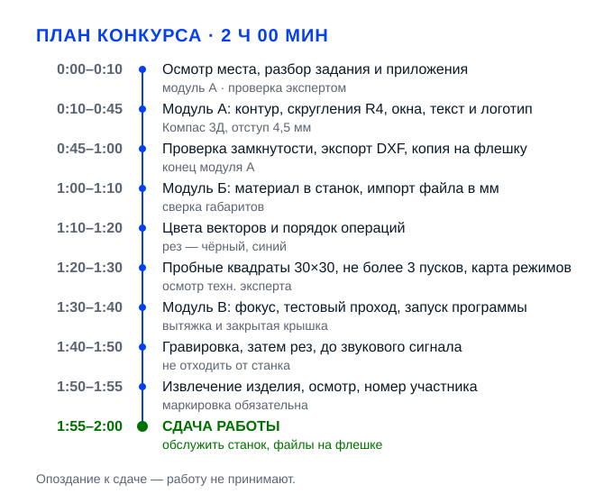
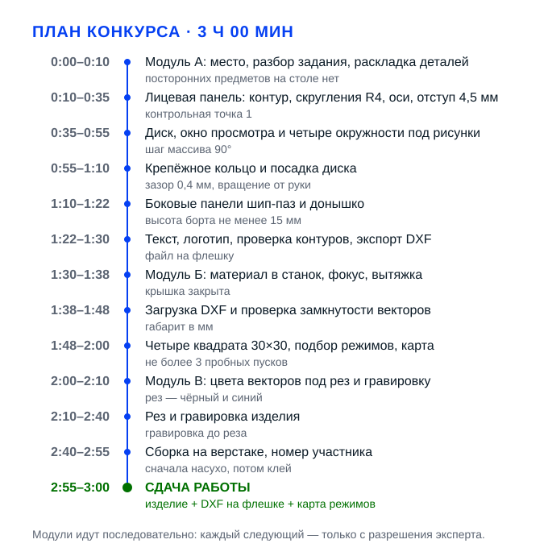
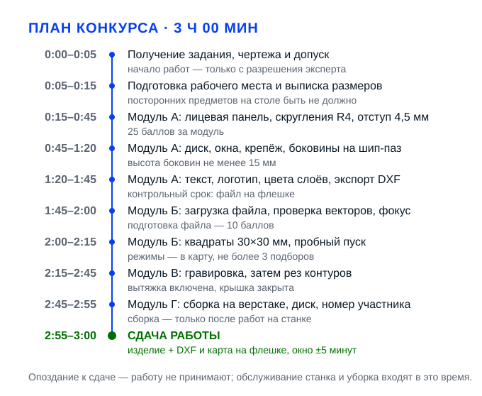

Лазерные технологии (Р)
Задания ниже — официальные файлы «Абилимпикс» (источник: abilympics-russia.ru), разложенные по категориям. Решения написаны по тексту задания, регламенту и критериям оценки; в них указано, что именно проверяет эксперт.
Школьник
14–16 лет, базовый уровень заданияВыдержка из официального конкурсного задания: страницы, относящиеся к категории «Школьник» (стр. 5–8 источника).
Пошаговое решение
Конкурсное задание категории «Школьники» — это изготовление лицевой панели на лазерном станке за два часа чистого времени, разложенных на три модуля: шестьдесят минут на чертёж, тридцать на наладку оборудования и тридцать на само изготовление. Работа идёт строго последовательно: пока чертёж не сохранён в DXF и не перенесён на съёмный носитель, к станку вас не допустят, а пока оборудование не осмотрено техническим экспертом, запускать программу нельзя. Внутри модулей почти всё решают мелочи, названные в задании прямым текстом: скругления радиусом 4 мм на четыре стороны, вспомогательный контур отступа 4,5 мм внутрь от кромки, четыре пробных квадрата 30 на 30 мм с индивидуальными настройками гравировки и не более трёх пробных пусков на подбор режимов. Ниже задание разобрано на шаги в том порядке, в котором их удобно выполнять, с указанием того, что именно проверяет эксперт в каждой точке.

Задача 1. Организовать рабочее место и разобрать исходные данныеМодуль А · первые 10 минут из 60
До первого щелчка мышью по «Создать чертёж» нужно понимать три вещи: чем вы работаете, что именно должно получиться на выходе и где будут лежать файлы. Эти десять минут не входят в отдельный модуль — они вычитаются из шестидесяти минут модуля А, и каждый лишний круг по мастерской потом отнимает время у построения. Зато порядок в голове и на столе экономит куда больше, чем кажется: половина типичных потерь на этом конкурсе связана не со слабым черчением, а с тем, что файл не там сохранён, станок не проверен или материал положен не той стороной.
Действие 1.1. Принять рабочее место и осмотреть оборудование
Шаг 1.1.1
Подходим к своему рабочему месту по номеру, указанному в карточке участника, и первым делом осматриваем стол целиком, а не только монитор. На столе должно остаться ровно то, что относится к работе: компьютер с установленным Компас 3Д, лист задания с приложением-чертежом, заготовка материала в упаковке, штангенциркуль и карандаш. Посторонние вещи — рюкзак, телефон, бутылка воды, тетрадь с записями — убираем в отведённое место сразу, потому что в задании прямо сказано: во время выполнения заданий на рабочих местах не должно быть посторонних предметов.
Это требование записано в разделе 2.3 конкурсного задания, и оно не декоративное: посторонний предмет на столе у лазерного станка — это либо риск возгорания, либо помеха для эксперта, который подходит смотреть чертёж и режимы. Кроме того, освобождённый стол сразу показывает, чего не хватает: если нет штангенциркуля или карандаша, выяснить это нужно сейчас, а не в модуле Б, когда надо мерить толщину материала под фокус.
Проверьте по трём признакам: на столе нет личных вещей, все инструменты лежат в пределах вашей зоны и не заходят на соседнее место, монитор и клавиатура развёрнуты к вам. Отдельно убедитесь, что рядом есть свободное место размером примерно с лист А4 — туда вы положите готовую панель, когда достанете её из станка.
Самая частая потеря здесь — оставить телефон на столе «чтобы смотреть время»: эксперт делает замечание, а вы теряете спокойствие в первые же минуты. Вторая ошибка — свалить инструмент в кучу у клавиатуры, а потом искать карандаш на протяжении всего модуля А и смахивать его локтем со стола.
Эксперт проходит по рабочим местам перед стартом и в первые минуты модуля А. Он смотрит именно на организацию: чисто ли, комплектно ли, всё ли на своих местах, нет ли посторонних предметов.
Шаг 1.1.2
Осматриваем лазерный станок снаружи, не открывая крышку без разрешения: проверяем, что стол чистый, направляющие не засыпаны мусором, кабели не перекручены, а на корпусе нет следов предыдущей работы. Смотрим на вытяжную систему — гофра должна быть надета на патрубок и не иметь разрывов, потому что именно она уносит продукты горения и дым от материала. Если станок закрыт на ключ или на нём висит бирка «не готов», не пытаемся запустить: зовём технического эксперта.
В задании дважды подчёркнуто, что изготовление изделия допускается только с включённой вытяжной системой и закрытой крышкой станка, а модуль Б заканчивается осмотром оборудования техническим экспертом. Если вытяжка не работает, эксперт просто не подпишет готовность, и тридцать минут модуля Б пройдут без результата — а модуль В без подписанной готовности начинать нельзя.
Признаки исправного состояния видны без приборов: гофра сидит плотно и не слетает от лёгкого покачивания, внутри камеры нет обрезков и пыли, крышка закрывается плавно и без перекоса, кнопка аварийной остановки не вдавлена. Если хоть один признак не сходится, фиксируем это до старта.
Типичная ошибка — начать работу, заметив слетевшую гофру, и «доделать потом»: дым от резки идёт в кабину, оседает на линзе, и мощность падает посреди изделия. Вторая — открыть крышку и полезть внутрь руками, чтобы поправить материал, не выключив станок.
Осмотр оборудования — отдельная точка контроля модуля Б: технический эксперт подходит к станку и смотрит, допущен ли участник к работе и в каком состоянии оставлено оборудование.
Шаг 1.1.3
Проверяем компьютер так, как будете проверять станок: включаем, дожидаемся полной загрузки, открываем Компас 3Д и убеждаемся, что он запускается без сообщений об ошибке лицензии. Сразу проверяем, читается ли съёмный носитель — вставляем флешку в порт и открываем её в проводнике. Если носитель не определяется, меняем порт или просим другой у эксперта сейчас, пока время ещё есть.
Модуль А заканчивается экспортом чертежа в DXF на съёмный носитель, и если порт или флешка окажутся нерабочими в конце модуля, вы останетесь с готовым чертежом и без файла для станка — результат модуля не будет засчитан вообще, потому что по описанию модуля технологический эскиз и компьютерный чертёж должны быть созданы и переданы. Проверка занимает минуту, а спасает весь модуль.
Убедитесь, что Компас 3Д открылся до рабочего окна с лентой инструментов, а в проводнике видна ваша флешка с доступным объёмом. Хороший признак — вы уже видите на ней папку с номером участника, если готовились заранее.
Ошибка новичков — обнаружить, что флешка не читается, за две минуты до конца модуля А, когда пересаживаться на другой порт уже нет времени. Вторая — сохранять файл на рабочий стол станка, а не на носитель, и потом искать его по всему диску в присутствии эксперта.
Эксперт смотрит на готовность рабочего места к работе с файлами: открыт ли Компас, определяется ли носитель, работает ли мышь без рывков. Это часть оценки организации работы, а не техники черчения.
Действие 1.2. Разобрать задание и приложение с чертежом
Шаг 1.2.1
Кладём перед собой лист задания и приложение с чертежом лицевой панели, читаем задание целиком один раз, не начиная строить. Выделяйте карандашом всё, что можно посчитать: габариты панели, радиус скругления 4 мм, величину отступа 4,5 мм, размеры верхнего и боковых прямоугольников, расположение текста и логотипа. Отдельно выписываете на свободное поле листа число элементов, которые должны появиться в чертеже.
Смысл этого шага простой: чертёж строится по приложению, а не по памяти, и почти все расхождения в конкурсных работах — это не «не смог построить», а «построил не то». В описании модуля А результат сформулирован как «технологический эскиз и компьютерный чертёж созданы», то есть оценивается соответствие чертежа приложению, а не красота линий.
Проверьте себя вопросом: можете ли вы, не подглядывая, назвать габарит панели, радиус скругления и величину отступа? Если хотя бы одно число приходится искать глазами — читайте приложение ещё раз, пока не запомните.
Типичная ошибка — просмотреть приложение по диагонали и начать строить «по логике глазомера»: прямоугольники встают не по образцу, а произвольно, и переделывать приходится в конце модуля. Вторая — перепутать приложение школьников с приложением студентов и построить лишние окружности и крепёж вращающегося диска, которых в вашем задании нет.
Эксперт подходит в начале модуля А и проверяет, открыто ли у участника приложение с чертежом. Работа «по памяти» сразу видна по расхождениям, которые он фиксирует при приёмке.
Шаг 1.2.2
Разбираем приложение на слои ещё на бумаге: сплошной контур панели со скруглениями, вспомогательная линия отступа, прямоугольники-окна по верхней и нижней кромке, прямоугольники на боковых сторонах, текст, логотип. Рядом с каждым элементом записываете, каким инструментом он будет сделан: «Прямоугольник по центру», «Скругление», «Отрезок», «Подобие объекта», «Вставка текста», «Вставка изображения». Так у вас получается порядок работы, а не набор догадок.
В разделе 2.3.1 задание перечисляет ровно эти инструменты, и последовательность шагов там же задана: сначала прямоугольник из центра, потом скругления, потом осевые, потом подобие, потом окна и зеркальное копирование. Если идти этим порядком, каждый следующий элемент опирается на уже готовую геометрию, а не строится от руки «на глазок».
Проверка простая: в вашем списке каждый элемент приложения имеет рядом название инструмента, и ни один элемент не остался без пары. Если напротив какого-то прямоугольника пусто — вы ещё не знаете, как его строить, и это надо решить до старта, а не в середине модуля.
Ошибка — начать с текста и логотипа, потому что «это самое интересное»: они привязываются к готовой геометрии, и на пустом листе их положение всё равно придётся переставлять. Вторая — строить каждый прямоугольник вручную, вместо того чтобы сделать один и размножить зеркальным копированием, как требует задание.
Эксперт в модуле А смотрит на последовательность: правильно ли построена геометрия от центра, использованы ли скругления и подобие, а не нарисованы ли линии отрезками «на глаз».
Шаг 1.2.3
Отдельно проговариваем для себя, что панель будет резаться и гравироваться, а значит, часть линий на чертеже — это не картинка, а маршрут инструмента. Записываете на листе две группы цветов из задания: для реза рекомендуется чёрный и синий, для гравировки — зелёный, голубой, оранжевый и малиновый. Сразу решаете, какой элемент каким цветом пойдёт, чтобы в модуле В не перекрашивать всё заново под таймер.
Цвет в этом задании — не оформление, а технологическая команда: по цвету станок понимает, резать линию или гравировать. Модуль В начинается с того, что участник обозначает векторы цветами согласно заданию. Если сделать это в Компасе заранее, в модуле В останется только проверить, а не разбираться с палитрой на ходу.
Проверьте, что у вас на листе есть четыре строки под цвета гравировки и две под цвета реза, и напротив каждой — конкретный элемент панели. Это ваша карта слоёв, по ней вы будете проверять управляющую программу.
Частая ошибка — покрасить весь контур одним цветом и надеяться, что «станок разберётся»: он не разберётся, и вместо гравировки текст будет вырезан насквозь, вместе с куском панели. Вторая — использовать для реза зелёный или оранжевый, то есть цвет гравировки, и получить надрез вместо сквозного контура.
Эксперт проверяет назначение цветов в модуле В, когда открывает управляющую программу на компьютере станка: соответствие цветов заданию видно с первого экрана.
Действие 1.3. Подготовить Компас 3Д и папку участника
Шаг 1.3.1
Создаём на рабочем столе папку с номером участника — именно так, как сказано в пункте 10 модуля А: «сохранить выполненную работу на рабочем столе, в папке с номером участника». Внутрь кладём пустую папку DXF, она понадобится при экспорте, и рядом текстовый файл с номером места, чтобы не перепутать папку с соседской при общем столе. Имя пишем цифрами и латиницей, без пробелов: например 042 или Work_042, а не «панель Иванов».
Папка с номером — это адрес, по которому эксперт и технический специалист найдут вашу работу, если что-то случится с носителем. Задание требует именно такой структуры, и её отсутствие читается как невыполненный пункт модуля, даже когда чертёж построен идеально. Латинские имена и отсутствие пробелов нужны потому, что часть программ подготовки к резке плохо переносит кириллицу и пробелы в пути.
Проверьте: папка лежит прямо на рабочем столе, в имени есть ваш номер, внутри есть подпапка DXF. Откройте путь целиком и посмотрите на адресную строку — в ней не должно быть русских букв и пробелов, иначе часть утилит подготовки к резке не откроет файл по этому пути.
Ошибка — сохранить файл в «Документы» или в корень диска: эксперт ищет работу там, где требует задание, и не находит. Вторая — назвать папку своей фамилией вместо номера, а на мандатной комиссии номера и фамилии сведены не у всех.
Эксперт проверяет наличие папки с номером при приёмке модуля А: он открывает рабочий стол и ищет работу по номеру из своей ведомости. Если папки нет или в её имени чужая фамилия, пункт считается невыполненным, даже когда чертёж построен безупречно.
Шаг 1.3.2
Запускаем Компас 3Д и выбираем «Создать чертёж», как требует первый пункт модуля А. Не «Фрагмент», не «Деталь», не трёхмерную модель — именно чертёж, потому что формат листа и оформление в этом задании не оцениваются, а важно только содержимое. Сразу настраиваем то, что экономит время: включаем привязки (пересечение, выравнивание, точка на кривой), ставим удобный масштаб изображения и включаем отображение размеров.
Чертёж, а не фрагмент, нужен по двум причинам: в чертеже по умолчанию есть система координат с началом в удобном месте, а оформление можно отключить одним переключателем, чтобы основная надпись не мешала при экспорте. Привязки — вообще главный инструмент точности: без них скругление не сомкнётся с контуром, и станок увидит разрыв.
Проверьте: в заголовке окна написано «Чертёж», внизу видны включённые привязки, а линии строятся «с залипанием» к уже нарисованным элементам. Попробуйте нарисовать пробный отрезок рядом с краем листа и убедитесь, что он прилипает к сетке.
Ошибка — начать в «Фрагменте»: там нет оформления и другой набор инструментов, и потом приходится переносить геометрию в новый документ. Вторая — работать с выключенными привязками: контур получается «почти точным», а «почти» на лазерном станке означает непрорезанный угол.
Эксперт в начале модуля смотрит на тип созданного документа и на аккуратность работы с привязками: видно, строятся ли элементы от центра и по привязкам или произвольно.
Шаг 1.3.3
Сохраняем пустой файл сразу, до первого построения: «Файл — Сохранить как», выбираем папку с номером участника и имя вида 042_panel. Так у вас появляется точка возврата. Дальше сохраняем каждые пять-семь минут через Ctrl+S и обязательно перед каждой крупной операцией — перед зеркальным копированием, перед вставкой логотипа, перед экспортом в DXF. Первое сохранение делаем до того, как проведена хотя бы одна линия.
На конкурсе теряют работы не из-за сложности чертежа, а из-за зависшего окна или случайного закрытия. Модуль А длится час, и за час без сохранений можно потерять сорок минут работы — а восстановить их нечем: время модуля не останавливается, чертёж заново за десять минут не построить.
Проверьте, что файл действительно появился: откройте папку с номером участника и убедитесь, что рядом с именем файла стоит сегодняшняя дата и время. После каждого сохранения в заголовке окна не должно быть звёздочки, означающей несохранённые изменения.
Ошибка — сохраниться один раз в конце, потому что «пока всё в памяти». Вторая — сохранить в формате по умолчанию и не заметить, что файл лёг в другую папку: программа запоминает последний путь, и после пробного сохранения в «Документы» все следующие уходят туда же.
Эксперт может попросить показать файл прямо в процессе работы, а не в конце модуля. Сохранённая версия с внятным именем в папке участника — это и оценка организации работы, и спокойный ответ на вопрос «где ваша работа».
Задача 2. Построить чертёж лицевой панели в Компас 3ДМодуль А · 60 минут
Основной модуль конкурса: из листа бумаги с приложением нужно получить замкнутый векторный чертёж, который станок примет без правок. Работа идёт от центра: сначала прямоугольник из центра по габаритам приложения, потом четыре скругления радиусом 4 мм, осевые линии, вспомогательный контур отступа 4,5 мм внутрь, затем окна — прямоугольник сверху, его зеркальная копия снизу и прямоугольники на боковых сторонах, и только в конце текст с логотипом. Такая последовательность не случайна: каждый следующий элемент цепляется за уже готовую геометрию, поэтому размеры не «съезжают», а линии остаются замкнутыми. Заканчивается модуль экспортом в DXF и копией файла на съёмный носитель — без этого чертёж существует только на экране.
Действие 2.1. Построить контур панели и вспомогательную геометрию
Шаг 2.1.1
Строим прямоугольник инструментом «Прямоугольник по центру»: нажимаем на ленте кнопку, затем фиксируем центр в начале координат или в точке, которую вы выбрали за центр панели, и вводим габариты из приложения — ширину и высоту через клавишу Enter, а не растягиванием мышью. После ввода размеров прямоугольник должен остаться выделенным, чтобы сразу было видно его параметры в строке состояния.
Прямоугольник «из центра» взят из пункта 2 модуля А не для красоты: центр становится точкой симметрии всей панели, и все дальнейшие зеркальные копии получаются точными без пересчёта координат. Кроме того, при построении от центра половина габарита откладывается в каждую сторону, и панель автоматически симметрична относительно осевых линий, которые появятся на следующем шаге.
Проверяем размеры, не отходя от инструмента: выделяем прямоугольник и смотрим в строке параметров ширину и высоту. Они должны совпадать с приложением до десятых. Дополнительно нажимаем «Обновить изображение» и убеждаемся, что прямоугольник стоит ровно, без наклона.
Типичная ошибка — рисовать прямоугольник «на глаз» мышью и потом подгонять размерами: контур получается с перекосом в доли градуса, а скругления встают неровно. Вторая — строить от угла, а не от центра: тогда все последующие построения приходится вести от края, и симметрия ломается.
Эксперт в модуле А выделяет контур и измеряет габариты инструментом «Линейные размеры», сверяя с приложением. Расхождение больше полумиллиметра он фиксирует сразу, при обходе рабочих мест, а не откладывает до финальной приёмки.
Шаг 2.1.2
Выполняем четыре скругления радиусом 4 мм: выбираем инструмент «Скругление», в панели свойств ставим радиус 4 и проверяем, что единицы — миллиметры, затем поочерёдно указываем четыре угла, щёлкая по двум соседним сторонам у каждого угла. Порядок обхода — по часовой стрелке от левого верхнего угла, так вы не пропустите угол и не сделаете скругление дважды.
Радиус 4 мм назван в задании прямым текстом, и это не украшение: скруглённые углы панели не цепляются за кабель и не скалываются при сборке, а на лазерном станке такой контур режется без перегрева в точке поворота. Пропущенный угол виден сразу: панель получается с тремя мягкими углами и одним прямым, и это уже несоответствие приложению.
После каждого скругления проверяйте, что линия контура осталась непрерывной: подведите курсор к стыку дуги и стороны — он должен подсвечиваться как одна линия, а не как две отдельные. Все четыре угла должны выглядеть одинаково.
Ошибка — задать радиус 4 сантиметра вместо миллиметров, не посмотрев на единицы в панели свойств: углы срезаются почти на треть панели. Вторая — применять скругление к двум сторонам одного угла по отдельности, получая вместо дуги две фаски с заусенцем в стыке.
Эксперт осматривает углы и на чертеже, и на готовом изделии, сверяя радиус с приложением. Скругление, сделанное «на глаз», отличается от соседних по величине, и это видно без измерительного инструмента.
Шаг 2.1.3
Проводим центральные осевые линии инструментом «Отрезок»: вертикальную — от верхней кромки до нижней через центр, горизонтальную — от левой до правой. После построения выделяем обе линии и в панели свойств меняем их стиль на «Осевая», чтобы они не попали в резку как обычные отрезки. Осевые нужны именно как линии стиля «Осевая», а не как обычные отрезки другого цвета.
Пункт 4 модуля А требует создать центральные осевые линии, и делается это по двум причинам. Первая — технологическая: относительно осей строятся зеркальные копии окон, и без них инструмент «Симметрия» не найдёт ось. Вторая — оформительская: при экспорте в DXF линии стиля «Осевая» не воспринимаются как контур реза, а обычные отрезки воспринимаются.
Проверьте, что осевые выходят за кромку панели на 3–5 мм с каждой стороны — так принято в черчении и так сразу видно, что линия осевая, а не случайный отрезок. Стиль проверяется в панели свойств: должно быть указано «Осевая», а не «Основная».
Самая частая ошибка — оставить осевые обычными линиями: при экспорте станок воспринимает их как маршрут реза и режет панель пополам по центру. Вторая — провести осевые не через центр прямоугольника, а «примерно», из-за чего зеркальная копия окон встаёт со сдвигом.
Эксперт смотрит на чертёж и сразу видит две вещи: есть ли осевые вообще и правильного ли они стиля. Линии другого стиля на чертеже панели читаются как небрежность.
Шаг 2.1.4
Строим контур отступа инструментом «Подобие объекта»: выбираем инструмент, указываем величину смещения 4,5 мм и направление — внутрь панели, затем щёлкаем по контуру. Полученную линию выделяем и в панели свойств ставим стиль «Вспомогательная», как требует пункт 5 модуля А. Контур должен пройти параллельно всем четырём сторонам и повторить скругления углов.
Отступ 4,5 мм — это технологическая зона: по ней на панели будет видно, где заканчивается поле, доступное для гравировки, и где начинается кромка, которую нельзя ослаблять. Подобие, а не четыре отдельных отрезка, даёт точную параллельность по всему контуру, включая дуги: ручные отрезки в углах неизбежно разойдутся с дугой на несколько десятых, и линия получится разомкнутой.
Проверяем тремя способами: расстояние от кромки до контура одинаково по всем сторонам (проверяется инструментом «Расстояние между линиями»), в углах контур плавно повторяет дугу, а в панели свойств стоит стиль «Вспомогательная». Разомкнутых мест быть не должно.
Ошибка — задать смещение наружу вместо внутрь: контур выходит за габарит панели и при резке уходит в край листа. Вторая — оставить линию основного стиля: тогда станок прорежет по ней лишнюю канавку в 4,5 мм от кромки, ослабив панель.
Эксперт проверяет величину отступа и стиль линии: в приложении контур показан тонкой вспомогательной линией, и на чертеже он должен выглядеть так же. Линия основного стиля читается как ещё один маршрут реза, а это уже ошибка технологии.
Действие 2.2. Построить окна и зеркальные копии
Шаг 2.2.1
Строим прямоугольник в верхней части панели тем же инструментом «Прямоугольник по центру», с размерами из приложения. Центр берём на вертикальной осевой линии, отступ от верхней кромки — по приложению, с учётом того, что окно не должно заходить за вспомогательный контур отступа 4,5 мм. После построения сразу проверяем, что стороны окна параллельны сторонам панели.
Пункт 6 модуля А задаёт именно такой порядок: сначала окно в верхней части, потом его зеркальная копия. Если построить оба окна вручную, они почти наверняка разойдутся по высоте на полмиллиметра — на экране это незаметно, а на изделии видно, потому что лазер даёт чёткую кромку и разница читается глазом.
Проверяем размеры и положение: ширина и высота окна совпадают с приложением, расстояние от верхней кромки панели до окна такое же, как в приложении, углы окна прямые, а само окно целиком внутри вспомогательного контура.
Ошибка — «посадить» окно на глаз по картинке и не проверить отступ размерами: при сборке окно оказывается на 2 мм ближе к кромке, чем на образце, и это фиксируется как несоответствие. Вторая — построить окно со скруглениями, которых в приложении нет.
Эксперт сравнивает положение верхнего окна с приложением, измеряя отступ от кромки. Симметрия панели проверяется и без наложения чертежей: смещённое окно сразу видно по разной ширине полей слева и справа от него.
Шаг 2.2.2
Копируем построенное окно зеркально на противоположную сторону: выделяем прямоугольник, вызываем «Симметрия» (в некоторых версиях — «Зеркальное отражение»), указываем горизонтальную осевую линию как ось симметрии и подтверждаем. Исходное окно оставляем на месте, копию не удаляем. Сразу после операции проверяем, что копия встала на том же расстоянии от нижней кромки, что и оригинал от верхней.
Пункт 7 модуля А требует именно зеркального копирования, и это единственный способ гарантировать, что оба окна одинаковы по размеру и симметричны относительно центра. Ручное построение второго окна — самая частая причина асимметрии в конкурсных работах: участник торопится, ставит окно на полмиллиметра ниже, и на изделии это заметно.
Проверяем симметрию измеримо: расстояние от верхней кромки до верхнего окна должно равняться расстоянию от нижней кромки до нижнего окна. Удобно поставить два размера подряд и сравнить числа в строке состояния — они должны совпасть до десятых.
Ошибка — выбрать осью симметрии вертикальную осевую вместо горизонтальной: копия уезжает вбок и накладывается на боковую часть панели. Вторая — после операции удалить исходный прямоугольник, решив, что он «лишний»: остаётся одно окно вместо двух.
Эксперт проверяет симметрию окон относительно центра панели, сравнивая два отступа — верхний и нижний. Совпадение до десятых показывает, что участник пользовался инструментом симметрии, а не строил второе окно вручную.
Шаг 2.2.3
Строим прямоугольники на боковых сторонах панели по пункту 8 модуля А — тем же порядком, что и с верхним окном: сначала один прямоугольник по размерам приложения на левой стороне, затем его зеркальная копия на правую сторону относительно вертикальной осевой линии. Если в приложении боковых окон по два с каждой стороны, второе получаем копированием первого со смещением по приложению, а не строим заново.
Боковые окна делают панель симметричной по двум осям, и именно на них чаще всего ломается ритм работы: их четыре или больше, и рисовать каждое вручную — это потеря пяти-семи минут, которых в модуле А потом не хватает на текст и логотип. Зеркальное копирование даёт точное совпадение размеров, а значит, и одинаковую прочность боковых полей.
Проверяем: количество боковых окон слева и справа совпадает, расстояния от кромки до каждого окна одинаковы, окна не пересекают вспомогательный контур отступа и не наезжают на угловые скругления. Обязательно посмотрите на чертёж целиком, уменьшив масштаб.
Ошибка — построить боковые окна, не согласовав их с верхними: окна наезжают друг на друга в углу, и при резке панель разваливается на части. Вторая — сделать боковые окна разного размера, «подгоняя» под свободное место.
Эксперт осматривает чертёж целиком и сравнивает с приложением по расположению всех окон. Наплывы и пересечения контуров видны ещё на экране, поэтому такой чертёж он фиксирует как несоответствие ещё до изготовления.
Действие 2.3. Вставить текст и логотип по образцу
Шаг 2.3.1
Вставляем текст инструментом «Вставка текста» (или «Обозначение — Текст»): щёлкаем в точку по приложению, вводим строку без ошибок и задаём высоту шрифта и гарнитуру. Шрифт выбираем простой, без засечек и без декоративных элементов — Arial или ISOCPEUR, гарнитуру с тонкими элементами лазер не любит: на тонких штрихах прожиг получается рваным. Высоту шрифта берём так, чтобы текст читался на изделии с расстояния вытянутой руки.
Текст в задании — обязательный элемент, а не украшение: он вставляется вместе с логотипом и расставляется по образцу прилагаемого чертежа. Оценивается и соответствие содержания, и читаемость. Тонкий шрифт с засечками на гравировке превращается в серую полосу, потому что прожиг тонких штрихов сливается, и текст перестаёт читаться.
Проверяем тремя признаками: текст не имеет ошибок (прочитайте его в зеркальном отражении или снизу вверх — так опечатки видны лучше), высота шрифта достаточна для чтения на изделии, положение совпадает с приложением по обеим координатам. Убедитесь, что текст не заходит на вспомогательный контур.
Ошибка — набрать текст шрифтом по умолчанию, который в Компасе задан с засечками: на чертеже он выглядит нормально, а на панели превращается в нечитаемую полосу. Вторая — поставить текст «на глаз» по центру, не сверившись с приложением, и он оказывается выше или ниже нужного места.
Эксперт читает текст на готовом изделии и сверяет с приложением: содержание, расположение и читаемость проверяются все три. Рваные штрихи от тонкого шрифта он видит сразу и отмечает это как дефект гравировки.
Шаг 2.3.2
Вставляем логотип: «Вставка — Изображение» для растрового файла или «Вставка — Фрагмент» для векторного, выбираем файл из папки задания, ставим точку привязки и задаём масштаб, чтобы логотип занял место по приложению. Растровый логотип обязательно переводим в контур инструментом «Контур изображения», иначе в DXF он не попадёт. Ширину логотипа сверяем с окном, в котором он стоит, а не с листом целиком.
Логотип — вторая обязательная часть вставки, названная в задании рядом с текстом. Растровое изображение и вектор — принципиально разные вещи: станок работает с линиями, а не с пикселями, поэтому растровый логотип либо игнорируется при импорте DXF, либо превращается в случайную сетку точек. Перевод в контур решает эту проблему заранее.
Проверяем: логотип виден в чертеже как набор линий, масштаб соответствует приложению, положение совпадает, а в списке слоёв он не висит как отдельный растровый объект. Обязательно уменьшите масштаб и посмотрите, не «съехал» ли логотип за пределы поля.
Ошибка — вставить логотип слишком мелким: при переводе в контур тонкие элементы пропадают, и на панели остаётся пятно. Вторая — оставить логотип растровым и обнаружить в модуле Б, что его нет в импортированном файле.
Эксперт проверяет наличие логотипа и его сходство с образцом на готовом изделии. Отсутствие логотипа — прямой минус по соответствию техническому заданию.
Шаг 2.3.3
Расставляем все надписи и изображения по образцу, соблюдая привязку к геометрии: текст центрируем по осевой линии, логотип привязываем к конкретному прямоугольнику или углу, а не к «примерно этому месту». После расстановки отключаем отображение вспомогательных линий и размеров, если они мешают видеть композицию, и смотрим на чертёж при масштабе «по листу».
Привязка к геометрии — это и точность, и устойчивость: если текст привязан к осевой, а не к произвольной точке, то после любой правки панели он остаётся по центру. Кроме того, при экспорте текст, привязанный к контуру, не «улетает» в сторону — а смещённый текст виден на изделии сразу.
Проверяем композицию целиком: все элементы внутри панели, ничего не пересекает контур реза, расстояния между текстом и логотипом визуально ровные, надписи не налезают друг на друга. Хороший приём — временно выключить все слои, кроме контура и текста, и посмотреть на результат.
Ошибка — расставить элементы «по красоте», а не по приложению: композиция смотрится, но не соответствует образцу, и баллы уходят. Вторая — оставить текст пересекающимся со вспомогательным контуром: при резке линия отступа проходит по буквам.
Эксперт сравнивает готовую панель с приложением целиком, и расстановка элементов оценивается как часть соответствия чертежа заданию. Сдвинутый текст он видит на изделии сразу: кромка панели служит ему линией отсчёта.
Действие 2.4. Проверить чертёж и выгрузить его в DXF
Шаг 2.4.1
Проводим проверку перед экспортом, как это делает технолог: включаем режим «Показать все линии» и обводим контур взглядом, начиная с любого угла. Ищем разрывы в местах стыка дуг и отрезков, лишние отрезки, двойные линии, наложенные друг на друга объекты. Дополнительно выделяем всё и смотрим количество объектов в свойствах — их не должно быть больше, чем элементов в приложении.
В модуле Б первым делом проверяется целостность чертежа: векторы должны быть замкнуты. Если разрыв есть, станок не прорежет контур до конца, и панель останется висеть на перемычке, которую придётся ломать руками — а это уже брак кромки. Найти разрыв на экране за две минуты проще, чем обнаружить его в станке, когда материал уже израсходован.
Надёжный способ проверки замкнутости: инструмент «Заштриховать» — щёлкните внутри области панели. Если штриховка залила всю область целиком, контур замкнут. Если залилась только часть или заливка «вылилась» наружу — есть разрыв или лишняя линия.
Ошибка — поверить, что контур замкнут, потому что «визуально всё сходится»: разрыв в 0,1 мм на экране не виден, а станок его видит. Вторая — оставить на чертеже пробные отрезки, которые остались от настройки привязок.
Эксперт в модуле Б проверяет целостность импортированного файла вместе с участником. Именно там видно, была ли проверка в модуле А настоящей: разрыв контура обнаруживается за десять секунд инструментом проверки замкнутости.
Шаг 2.4.2
Сохраняем чертёж в папке с номером участника в родном формате Компаса, а затем экспортируем: «Файл — Сохранить как», тип файла DXF, имя вида 042_panel.dxf. В окне параметров экспорта проверяем единицы измерения — миллиметры, и включённую передачу всех слоёв. Сохранение в родном формате нужно для того, чтобы чертёж можно было быстро поправить, если эксперт попросит.
Пункт 11 модуля А требует именно DXF, потому что это единственный формат, который читают и Компас, и управляющая программа станка. При экспорте важно не потерять слои: если галочка «передавать слои» снята, все линии сливаются в один слой, и в модуле В придётся заново назначать цвета — а это время из тридцати минут.
Проверяем, что файл появился и имеет ненулевой размер: откройте папку, посмотрите на колонку «Размер» — чертёж панели весит десятки килобайт, а не ноль. Затем импортируйте DXF обратно в новый документ Компаса и убедитесь, что геометрия на месте и слои сохранились.
Ошибка — экспортировать в единицах по умолчанию (дюймах): при импорте в управляющую программу панель уменьшается в 25 раз, и станок режет деталь размером с ноготь. Вторая — сохранить DXF в корень диска, а не в папку участника, и потом не найти его.
Эксперт смотрит на файл DXF и на его читаемость в управляющей программе. Файл с неверными единицами виден сразу: деталь на экране выглядит крошечной, а её габариты в свойствах не совпадают с приложением в двадцать пять раз.
Шаг 2.4.3
Копируем готовый DXF на съёмный носитель, как требует пункт 11 модуля А: открываем флешку, создаём в ней папку с номером участника, копируем файл и дожидаемся, пока полоска записи исчезнет. После этого извлекаем носитель безопасно, вставляем обратно и убеждаемся, что файл читается и его размер совпадает с исходным до байта. Чертёж не закрываем до тех пор, пока копия не прочиталась с носителя.
Носитель — это транспорт между модулем А и модулем Б, и вся работа модуля А существует для станка только после этой операции. Если файл на флешке повреждён или не скопировался до конца, у вас остаётся чертёж на рабочем столе, а станок стоит без программы — и тридцать минут модуля Б уходят на попытки восстановить файл, которые не всегда успешны.
Проверяем: на флешке есть папка с номером, в ней файл DXF, размер совпадает с исходным до байта, файл открывается двойным щелчком или хотя бы показывает корректный размер в свойствах. Только после этого закрываем чертёж.
Самая обидная ошибка — выдернуть флешку сразу после щелчка по «Копировать»: запись ещё идёт, и на носителе остаётся файл нулевой длины. Вторая — скопировать не тот файл, потому что в папке лежат несколько версий с похожими именами.
Эксперт при приёмке модуля А смотрит именно на носитель: наличие файла в папке с номером и его читаемость — формальный признак выполненного модуля. Отсутствие файла означает, что результат модуля не создан.
Задача 3. Наладить лазерное оборудование и подобрать режимыМодуль Б · 30 минут
Тридцать минут на то, чтобы станок стал продолжением чертежа: материал уложен и зафиксирован, файл загружен и проверен на целостность, векторы замкнуты, режимы подобраны и записаны в информационную карту. Модуль заканчивается осмотром оборудования техническим экспертом — то есть оценивается не только результат, но и то, в каком состоянии станок и документация. Здесь же лежит самое жёсткое ограничение конкурса: подбор режимов разрешается не более чем за три пробных пуска, поэтому каждый пуск должен быть осмысленным, а не «а давайте попробуем ещё раз». Стандартная ловушка модуля Б — потратить двадцать минут на подбор и оставить десять на всё остальное, включая заполнение карты.
Действие 3.1. Уложить материал и загрузить файл
Шаг 3.1.1
Берём заготовку из комплекта, указанного в задании, и осматриваем её с двух сторон: не должно быть сколов, царапин и следов клея на лицевой стороне. Измеряем толщину штангенциркулем в трёх точках — у двух противоположных кромок и в центре; расхождение больше 0,2 мм означает, что материал поведёт при нагреве. Лицевую сторону помечаем карандашом на защитной плёнке, чтобы не перепутать после укладки.
Первым пунктом модуля Б в станок загружается материал для вырезки макета, и именно от качества заготовки зависит, получится ли изделие. Разная толщина по полю — главная причина того, что часть контура прорезана насквозь, а часть осталась надрезанной: фокус настроен на одну толщину, а материал под ним меняется. Пометка лицевой стороны спасает от гравировки на изнанке, которую потом не исправить.
Проверяем: толщина одинакова в трёх замерах с точностью до 0,1 мм, лицевая сторона помечена карандашом на защитной плёнке, на поверхности нет сколов, царапин и следов клея. Запишите измеренную толщину на лист задания — она понадобится при настройке фокуса.
Ошибка — взять первую попавшуюся заготовку из стопки, не посмотрев на кромку: скол на кромке превращается в трещину при резке. Вторая — не измерить толщину и выставлять фокус «по паспорту станка», не сверившись с реальным материалом.
Технический эксперт осматривает заготовку и станок перед подписанием готовности. Материал с дефектами — повод вернуть участника к выбору заготовки, и время уходит из модуля Б.
Шаг 3.1.2
Укладываем материал на рабочий стол станка лицевой стороной вверх и прижимаем по периметру магнитами или прижимами, предусмотренными на рабочем месте. Материал должен лежать ровно, без «пузыря» в середине, и не выходить за рабочее поле. Проверяем рукой: при лёгком нажатии пальцем в центре материал не прогибается и не щёлкает. Кромки материала должны идти параллельно осям станка, иначе деталь встанет с перекосом.
Пункт 1 модуля Б говорит только «в станок загружается материал», но физика процесса требует большего: лазерный луч держит фокус на строго определённом расстоянии, и поднявшийся на миллиметр угол заготовки означает расфокусировку и неполный рез. Прижим по периметру — единственный способ гарантировать, что плоскость не «уйдёт» при нагреве.
Проверяем тремя признаками: материал лежит без зазора по всей площади, прижимы не попадают в зону реза, кромки материала параллельны осям станка. Полезно прокатить по поверхности линейку — она не должна качаться.
Ошибка — прижать материал только с одной стороны: противоположный край приподнимается, и рез уходит в расфокус. Вторая — поставить прижим так, что головка проходит в миллиметре от него, и станок задевает прижим на первом же проходе.
Эксперт проверяет укладку материала до запуска: ровность, прижим, отсутствие посторонних предметов в рабочем поле — всё это входит в осмотр оборудования.
Шаг 3.1.3
Загружаем файл DXF на управляющем компьютере станка: открываем управляющую программу, выбираем «Импорт» и указываем файл с носителя. В окне импорта проверяем единицы измерения — миллиметры — и масштаб 1:1. Сразу после импорта смотрим габариты детали в свойствах: они должны совпадать с размерами панели из приложения. Если габарит не совпал, меняем единицы импорта, а не масштабируем деталь вручную.
Второй пункт модуля Б требует загрузить файл-чертёж и проверить его на целостность. Единицы — самая частая причина катастрофы на этом шаге: DXF хранит числа без единиц, и программа подставляет свои. Панель, приехавшая в дюймах, выглядит на экране крошечной, но участник в спешке запускает программу и получает вырезанную «марку» вместо изделия.
Проверяем: габарит импортированной детали в свойствах совпадает с приложением до десятых, на экране видна вся панель целиком, а не её фрагмент. Убедитесь, что деталь не выходит за границы рабочего поля — они показаны на экране рамкой.
Ошибка — импортировать файл и сразу запускать программу, не посмотрев на размеры детали. Вторая — загрузить файл CDR или DWG, перепутав расширение, и получить на экране пустое поле без объяснений: программа откроет файл, но геометрию не покажет.
Эксперт подходит и смотрит на экран вместе с участником: правильность масштаба и положение детали в рабочем поле проверяются визуально за пять секунд.
Действие 3.2. Проверить векторы, слои и цвета
Шаг 3.2.1
Проверяем замкнутость всех контуров на экране управляющей программы: включаем режим показа узлов и просматриваем каждый контур, начиная с внешнего. Ищем точки, где линия обрывается, и места, где два контура наложены друг на друга. В управляющих программах есть инструмент проверки — «Проверка контуров» или «Замкнуть кривые»; пользуемся им, а не только глазами.
Требование «вектора должны быть замкнуты» записано в пункте 2 модуля Б прямым текстом. Незамкнутый контур станок либо не режет вовсе, либо режет не до конца: деталь остаётся соединённой с листом тонкой перемычкой, и её приходится отламывать — кромка получается рваной, а панель теряет геометрию. Исправить это в модуле В уже нельзя.
Проверяем измеримо: количество замкнутых контуров совпадает с количеством замкнутых элементов на чертеже, при выделении любого контура он подсвечивается целиком по всему периметру, а не частично. Если контур подсвечивается кусками — он разомкнут.
Ошибка — поверить, что «в Компасе всё было замкнуто, значит и тут замкнуто»: при экспорте дуги иногда разбиваются на сегменты с разрывами. Вторая — применить автозамыкание ко всему файлу сразу и получить «замкнутыми» линии, которые должны оставаться осевыми.
Эксперт проверяет целостность файла в модуле Б вместе с участником — это прямой пункт задания. Разомкнутый контур он находит инструментом проверки за несколько секунд и фиксирует, что участник приступил к работе без проверки.
Шаг 3.2.2
Назначаем векторам цвета согласно заданию: контур реза — чёрный или синий, элементы гравировки — зелёный, голубой, оранжевый и малиновый, по одному цвету на группу элементов. Делаем это через список слоёв: выбираем все объекты слоя и задаём цвет, а не красим по одному. После назначения проверяем, что каждый цвет встречается ровно столько раз, сколько групп элементов на панели.
Цвет в управляющей программе — это команда: по нему назначается технологическая операция. Пункт 2 модуля В прямо перечисляет, какие цвета использовать для реза, а какие для гравировки. Если перепутать, станок вырежет надпись насквозь или, наоборот, не прорежет контур — и изделие будет испорчено без возможности исправления, потому что материал один.
Проверяем по списку слоёв: чёрный и синий назначены только на внешний контур и окна, которые должны быть вырезаны; гравировочные цвета — только на текст, логотип и декоративные элементы. Убедитесь, что ни один гравировочный элемент не попал в слой реза.
Ошибка — оставить весь чертёж в одном слое и назначить ему рез: вместе с контуром прорезается текст, и панель разрезана на куски. Вторая — покрасить осевые линии в чёрный, и станок режет панель по центру.
Эксперт сверяет цвета слоёв с заданием прямо на экране управляющей программы: чёрный и синий — рез, зелёный, голубой, оранжевый, малиновый — гравировка. Перекрашенный контур он замечает сразу, потому что в списке операций появляется рез по тексту.
Шаг 3.2.3
Настраиваем порядок операций: сначала гравировка, потом рез. В списке технологических операций перемещаем гравировочные слои наверх, режущие — вниз. Так делают потому, что после реза деталь теряет жёсткость и может сместиться на столе, а гравировка по смещённой детали уходит в сторону. Проверяем порядок в окне операций сверху вниз и только после этого переходим к режимам.
Порядок операций напрямую влияет на качество: если сначала вырезать контур, панель «провалится» в решётку стола на доли миллиметра, и гравировка ляжет со сдвигом относительно кромки. Кроме того, гравировка по целой заготовке не даёт детали коробиться от нагрева — она ещё держится в листе.
Проверяем: в списке операций гравировочные слои выше режущих, ни одна операция не отключена, количество операций совпадает с количеством цветов. Хороший признак — при предварительном просмотре траектория сначала обходит текст, а потом контур.
Ошибка — оставить порядок по умолчанию: программа сортирует слои по номеру, и рез может оказаться первым. Вторая — отключить одну из операций, посчитав её лишней, и получить панель без части гравировки.
Эксперт смотрит список операций и их порядок. Правильная последовательность «гравировка, затем рез» — признак того, что участник понимает процесс, а не нажимает кнопки наугад.
Действие 3.3. Подобрать режимы и заполнить карту
Шаг 3.3.1
Создаём четыре пробных прямоугольника 30 на 30 мм в свободной части листа, как требует пункт 3 модуля Б, и для каждого задаём свои настройки гравировки: разную мощность, скорость, частоту и число проходов. Меняем параметры по одному, а не все сразу, иначе по результату невозможно понять, что именно дало эффект. Первый квадрат — заведомо мягкий режим, второй — средний, третий — жёсткий, четвёртый — промежуточный между вторым и третьим.
Четыре квадрата с индивидуальными настройками — это методика подбора, заложенная в задание. Она нужна, чтобы получить сравнимый результат на одном листе: при одинаковом материале и одинаковой толщине разница видна глазом, и вы выбираете лучший режим не по догадке, а по образцу. Меняя два параметра сразу, вы теряете саму возможность сравнения.
Проверяем перед пуском: на экране четыре квадрата, у каждого подписан номер, и в таблице параметров каждому номеру соответствует свой набор значений. Квадраты не пересекаются с панелью и лежат в пределах рабочего поля.
Ошибка — поставить всем четырём квадратам одинаковые параметры «для проверки материала»: сравнения не получится, а пробные пуски уже израсходованы. Вторая — расположить квадраты вплотную к панели, и при подборе случайно задеть её край.
Эксперт смотрит на пробные квадраты и на записи в информационной карте: их наличие и осмысленность — прямой пункт задания. Четыре одинаковых квадрата с одними настройками он читает как формальное выполнение и отмечает это в протоколе.
Шаг 3.3.2
Выполняем пробный пуск: закрываем крышку, включаем вытяжку, нажимаем пуск и стоим у станка, не отходя. По звуку и по свечению видно, идёт ли процесс ровно. После сигнала окончания открываем крышку, достаём пробный лист и смотрим результат: глубину гравировки, цвет, наличие нагара по краям. Помните, что подбор разрешается не более чем за три пробных пуска — значит, первый пуск должен дать максимум информации.
Ограничение «не более трёх раз» записано в пункте 4 модуля Б и меняет тактику подбора: вы не можете перебирать режимы по одному, поэтому в один пуск закладываются сразу четыре варианта. Кроме того, работа с включённой вытяжкой и закрытой крышкой — требование безопасности, записанное в разделе 2.3, и его нарушение останавливает работу.
Оцениваем результат по трём признакам: гравировка равномерная по всей площади квадрата, без пропусков; края контура без коричневого нагара и без оплавления; глубина достаточная, чтобы рисунок читался под углом. Записываете номер лучшего квадрата сразу, не полагаясь на память.
Ошибка — отойти от станка во время пуска: при возгорании материала счёт идёт на секунды, а работа без присмотра — нарушение. Вторая — потратить все три пуска на подбор гравировки и не оставить времени на проверку режима реза.
Технический эксперт находится рядом во время пробных пусков и фиксирует условия: включена ли вытяжка, закрыта ли крышка, стоит ли участник у станка. Он же считает количество пусков, потому что больше трёх задание не разрешает.
Шаг 3.3.3
Заполняем информационную карту: вписываем выбранные режимы — мощность, скорость, частоту, число проходов — отдельно для реза и для каждого гравировочного слоя, а также время работы станка. Записи делаем сразу после пуска, пока параметры видны на экране, разборчиво, печатными цифрами, и подписываем номером участника. Карту заполняем ручкой: исправления и подчистки в ней читаются как недостоверные записи.
Пункт 5 модуля Б требует записать удовлетворительные результаты в информационную карту, а раздел 2.3 перечисляет, что именно указывается: частота, скорость, мощность, время работы станка, количество проходов. Карта — это документ, по которому эксперт понимает, что режимы подобраны осознанно. Заполнение «по памяти» в конце модуля почти всегда даёт неверные цифры.
Проверяем карту построчно: все пять параметров заполнены, значения совпадают с теми, что стоят в программе на экране, время работы станка записано, номер участника указан. Сверьте одно значение из карты с экраном — они должны совпадать точно.
Ошибка — оставить карту на конец и заполнить её по догадке: несовпадение с фактическими настройками эксперт видит сразу, и карта перестаёт быть доказательством. Вторая — не указать число проходов, а именно оно чаще всего объясняет, почему рез неполный.
Технический эксперт проверяет карту и подписывает готовность оборудования — именно на этом шаге заканчивается модуль Б. Он сверяет одну-две цифры из карты с настройками на экране и смотрит, указано ли время работы станка и число проходов.
Задача 4. Изготовить панель на лазерном станкеМодуль В · 30 минут
Тридцать минут, за которые чертёж превращается в изделие. Здесь почти нет свободы творчества: нужно загрузить готовый чертёж, ещё раз проверить цвета векторов, уложить материал, выставить фокус по реальной толщине, проверить область реза и гравировки в тестовом режиме и только после этого запустить программу. Ошибка в этом модуле стоит дороже всего, потому что материала на второй экземпляр нет, а время на исправление не предусмотрено. Финал модуля — звуковой сигнал, открытая крышка, изделие и остаток материала на столе, то есть изделие, которое можно предъявлять.
Действие 4.1. Подготовить управляющую программу
Шаг 4.1.1
Открываем на управляющем компьютере готовый чертёж заново, с носителя, как требует пункт 1 модуля В: «Импорт», выбор файла, единицы — миллиметры, масштаб 1:1. Сразу сверяем габариты с приложением и убеждаемся, что на экране последняя версия файла, а не промежуточная копия с похожим именем: дата изменения должна быть самой поздней. Носитель вставляем в тот же порт, что и в модуле А, чтобы не искать файл по диску.
Заново, а не «продолжаем с того, что открыто»: между модулями компьютер станка мог быть перезапущен, а в рабочей папке могли остаться файлы, которые вы сохраняли по ходу правок. Работа с неверной версией — самая нелепая потеря баллов: чертёж идеален, но не тот.
Проверяем: размеры детали на экране совпадают с приложением, в списке слоёв видно знакомые имена, дата файла — самая поздняя из ваших сохранений. Если сомневаетесь — откройте файл ещё раз с носителя, это полминуты.
Ошибка — импортировать файл из рабочей папки станка, где лежат чужие и старые файлы, и запустить не свою работу. Вторая — не посмотреть на единицы измерения и получить деталь в дюймах: панель режется размером с почтовую марку.
Эксперт в начале модуля В смотрит, какой именно файл загружен, и сверяет его с тем, что участник предъявлял в модуле А. Несовпадение имени или даты файла сразу вызывает вопрос, и ответ на него влияет на оценку.
Шаг 4.1.2
Проверяем цвета векторов ещё раз, уже в модуле В, как требует пункт 2: контур реза — чёрный или синий, гравировка — зелёный, голубой, оранжевый, малиновый. Проходим по списку слоёв и убеждаемся, что ни один гравировочный элемент не остался в режущем слое. Если цвета сбились при импорте, назначаем заново, не жалея на это трёх минут. Сомнительный слой проще перекрасить за минуту, чем переделывать изделие заново.
Импорт DXF не всегда сохраняет цвета — часть программ переводит все объекты в цвет «по слою» или в чёрный. Проверять нужно именно здесь, потому что на чертеже в Компасе всё было правильно, а в станке цвет мог не перейти. Исправление занимает минуты, а неисправленная ошибка стоит всего изделия.
Проверяем визуально и по списку: включите отображение цветов, посмотрите на экран — текст и логотип одного цвета, контур другого; затем щёлкните по контуру и посмотрите его слой в свойствах. Оба способа должны дать одинаковый ответ.
Ошибка — довериться тому, что «в Компасе было покрашено»: после импорта цвет часто теряется, и станок режет текст насквозь. Вторая — покрасить всё в чёрный «чтобы лучше видно» и потерять деление на рез и гравировку.
Эксперт подходит к экрану именно на этом шаге: соответствие цветов заданию — отдельный и хорошо заметный пункт модуля В. Он смотрит и на картинку, и на список операций, где видно, какой слой пойдёт на рез.
Шаг 4.1.3
Выставляем фокус по фактической толщине материала: опускаем или поднимаем головку на расстояние из инструкции станка, пользуясь шаблоном-фокусировщиком или механическим ограничителем. После установки проверяем зазор в двух-трёх точках по полю — он должен быть одинаковым на всей площади заготовки, а головка не должна задевать прижимы. Толщину берём из собственного замера, сделанного в модуле Б, а не из паспорта материала.
Пункт 1 модуля Б говорит о загрузке материала, но фокус — это то, что делает рез сквозным: при расфокусировке на миллиметр мощность в пятне падает, контур не прорезается до конца, и панель приходится выламывать. На разных станках фокусное расстояние своё, поэтому ориентироваться нужно на инструкцию и шаблон, а не на память.
Проверяем: шаблон входит между соплом и материалом с одинаковым усилием в центре и по краям, головка не задевает прижимы при перемещении вручную, а расстояние совпадает с указанным в паспорте станка с точностью до десятых.
Ошибка — выставить фокус по толщине, которую вы не измеряли, а взяли из задания: реальная заготовка может отличаться на полмиллиметра. Вторая — проверить зазор только в одном месте, где материал лежит идеально ровно.
Технический эксперт проверяет фокус и зазор перед запуском: это часть готовности оборудования к работе, которую он подписывает. Расфокусированный станок он определяет по первому тестовому проходу — пятно выглядит размытым.
Действие 4.2. Проверить область обработки и запустить программу
Шаг 4.2.1
Проверяем область реза и гравировки в тестовом режиме, как требует пункт 5 модуля В: включаем функцию «Контур» или «Тестовый проход», которая обводит границы рабочей области без включения мощности. Смотрим, что весь контур панели попадает на материал, а не на решётку стола и не на прижимы. Прижимы на время прохода оставляем на месте, чтобы увидеть, не задевает ли их головка, а убираем только те, что попали в зону реза.
Тестовый проход — единственный способ увидеть границы до того, как материал будет испорчен. Луч при этом не режет, а только показывает маршрут, и если панель выходит за габарит заготовки, вы узнаёте об этом бесплатно. На станках с маленьким полем это особенно важно: сдвиг детали на два сантиметра вправо превращает работу в обрезок.
Проверяем: маршрут обошёл всю панель и целиком лежит внутри материала с припуском не меньше 5 мм со всех сторон, головка нигде не задела прижимы, крайние точки маршрута не выходят за рабочее поле, показанное на экране рамкой.
Ошибка — пропустить тестовый проход «чтобы сэкономить время»: сдвиг обнаруживается на первом же проходе реза, когда материал уже испорчен. Вторая — проверять только гравировку, забыв, что контур шире и выходит за её область.
Эксперт наблюдает за тестовым проходом: он показывает, понимает ли участник, где именно будет работать луч. Пропущенный тестовый проход он отмечает как нарушение технологии, даже если изделие в итоге получилось.
Шаг 4.2.2
Запускаем выполнение программы: закрываем крышку до щелчка, проверяем, что вытяжка включена и слышно её работу, нажимаем «Пуск». Первые секунды стоим у станка и смотрим на пятно: если появился яркий очаг или пошёл густой дым, немедленно нажимаем аварийную остановку. Дальше остаёмся рядом до сигнала окончания. Руку держим у кнопки аварийной остановки, пока не замкнулся первый контур.
Раздел 2.3 задания содержит жёсткое условие: изготовление изделия допускается только с включённой вытяжной системой и закрытой крышкой станка. Это не формальность — продукты горения вредны, а открытая крышка сбивает фокус и даёт неравномерный рез. Аварийная остановка в первые секунды спасает и материал, и станок.
Проверяем процесс по трём признакам: слышен ровный звук работы, дым уходит в вытяжку и не клубится в камере, линия реза идёт точно по контуру и не «убегает» в сторону. Гравировка должна появляться постепенно, с одинаковой насыщенностью по всей площади.
Ошибка — отойти к компьютеру или к соседу, «пока режет»: без присмотра мелкое возгорание переходит в пожар за двадцать секунд. Вторая — открыть крышку во время работы, чтобы посмотреть, как идёт рез: станок останавливается по блокировке, а координаты сбиваются.
Технический эксперт находится в зоне и следит за соблюдением условий безопасности при запуске: включённая вытяжка, закрытая крышка, участник у станка. Нарушение он фиксирует сразу и останавливает работу до устранения.
Шаг 4.2.3
Дожидаемся звукового сигнала об окончании программы и только после него выключаем вытяжку, даём камере проветриться 10–15 секунд и открываем крышку. Смотрим на результат сверху, не вынимая деталь: контур должен быть прорезан по всему периметру, гравировка — равномерной, нагара по кромкам быть не должно. Если хотя бы один контур не прорезан, останавливаемся и зовём технического эксперта, а не дожимаем деталь руками.
Пункт 7 модуля В описывает именно эту последовательность: после звукового сигнала открыть крышку, достать изделие и остаток материала. Открывать раньше нельзя — программа может ещё дорезать последний сегмент, и при открытой крышке он останется непрорезанным. Пауза на проветривание нужна, чтобы не дышать продуктами горения.
Проверяем три признака: все контуры прорезаны насквозь, деталь не держится на перемычках, гравировка одинакова по глубине. Аккуратно покачайте панель пальцем, не вынимая из листа: если она двигается свободно — рез полный.
Ошибка — открыть крышку на звуке затухания, не дождавшись сигнала: последний контур остаётся надрезанным. Вторая — сразу схватить деталь рукой: кромка после реза горячая, а на пальцах остаётся след, который потом виден на лицевой стороне.
Эксперт осматривает изделие сразу после извлечения: полнота реза и качество кромки — главный результат модуля В. Он проводит пальцем по контуру и смотрит на просвет, чтобы увидеть непрорезанные перемычки.
Действие 4.3. Извлечь изделие и оценить качество
Шаг 4.3.1
Открываем крышку полностью, убираем прижимы и вынимаем лист с деталью целиком, а не выковыриваем панель по частям. Кладём лист на верстак гравировкой вверх и только там отделяем панель: поддеваем её за угол плоским предметом, держа лист на весу, чтобы не погнуть кромку и не поцарапать лицевую сторону. Обрезки убираем в контейнер сразу, а не оставляем на верстаке до конца модуля.
Деталь, вынутая из листа на весу, сохраняет геометрию: если вытаскивать её, упираясь в стол, кромка мнётся, а панель выгибается «лодочкой». Отделение на верстаке нужно ещё и потому, что обрезки и мелкие элементы не должны попасть в решётку стола — их убирают отдельно, при обслуживании станка.
Проверяем: панель лежит на столе ровно, без изгиба, углы и кромки целые, мелкие вырезанные элементы не потеряны. Посмотрите на панель под углом к свету — так видны заусенцы и подпалины, незаметные сверху.
Ошибка — вынуть деталь, потянув за один угол: панель из тонкого материала сгибается, и обратно её уже не выправить. Вторая — смести остатки и обрезки в общий ящик, где они потеряются до момента уборки.
Эксперт смотрит на изделие в руках участника: геометрия, плоскостность и целостность кромки оцениваются визуально и на просвет. Погнутую панель он видит по зазору между ней и столом, когда кладёт её на ровную поверхность.
Шаг 4.3.2
Осматриваем готовую панель по чек-листу: габариты, радиусы 4 мм на четырёх углах, положение окон, читаемость текста, наличие логотипа, отсутствие нагара и оплавления. Габариты проверяем штангенциркулем по двум направлениям, радиусы — визуально, сравнивая с приложением. Расхождения фиксируем для себя, но переделывать уже не пытаемся. Результат осмотра проговариваем вслух: так недостаток запоминается и не теряется при сдаче.
Осмотр по чек-листу нужен до предъявления экспертам: если на панели есть недостаток, вы успеваете либо объяснить его причину, либо показать, что понимаете, где он. Модуль В заканчивается фразой «изделие изготовлено и соответствует техническому заданию», и соответствие проверяется именно по этим пунктам приложения.
Проверяем измеримо: ширина и высота панели совпадают с приложением, все четыре угла скруглены одинаково, окна симметричны относительно центра, текст читается целиком. Кромка на ощупь не должна быть острой, как бритва.
Ошибка — не осматривать изделие вообще, считая, что «станок сделал как в файле»: расхождение могло появиться при импорте или из-за смещения материала. Вторая — начать подчищать нагар наждачной бумагой и испортить гравировку.
Эксперт сравнивает изделие с приложением по размерам и по расположению элементов — это финальная проверка соответствия. Он измеряет панель штангенциркулем при участнике и называет расхождение, если оно есть.
Задача 5. Промаркировать изделие, обслужить станок и сдать работуМодули Б–В · завершение
Финальная часть конкурса, где баллы уже не набираются черчением или резкой, а сохраняются: маркировка номером участника, обслуживание лазерного оборудования, утилизация непригодных остатков материала, чистое рабочее место и предъявление результата вместе с сохранёнными данными на флеш-накопителе. В задании эти пункты перечислены отдельными строками, и каждый из них проверяется глазами за несколько секунд. Пропущенная маркировка или станок, оставленный с мусором в камере, стоят дороже, чем кажется: они превращают аккуратную работу в «не довёл до конца».
Действие 5.1. Промаркировать изделие и привести в порядок оборудование
Шаг 5.1.1
Наносим номер участника на изделие — так, как это принято на вашем рабочем месте: гравировкой в заранее подготовленном поле, маркером по нелицевой стороне или небольшой наклейкой с номером. Место выбираем на обратной стороне, чтобы номер не попал в композицию лицевой панели, и проверяем, что он читается без увеличения. Если номер ставится гравировкой, он должен быть в чертеже заранее.
Требование проставить номер участника на каждом изделии записано в разделе 2.3 задания отдельной строкой. Без маркировки работу невозможно опознать при оценивании: эксперты смотрят изделия обезличенно, по номерам, и панель без номера рискует остаться неоценённой или быть отнесённой не к тому участнику.
Проверяем: номер виден на изделии, совпадает с номером в карточке участника, не закрывает гравировку и не мешает посадке панели. Убедитесь, что он не сотрётся: маркер по гладкой поверхности легко стирается пальцем, поэтому лучше гравировка или наклейка.
Ошибка — поставить номер на лицевую сторону поверх гравировки: композиция испорчена, а номер всё равно плохо читается на фоне рисунка. Вторая — написать номер на съёмном листочке, который отклеивается при первом же переносе изделия на стол приёмки.
Эксперт проверяет маркировку при приёмке изделия, сверяя номер с ведомостью. Отсутствие номера — формальное нарушение, которое фиксируется в протоколе, и изделие может быть отнесено не к тому участнику.
Шаг 5.1.2
Обслуживаем станок после работы: снимаем решётку стола и высыпаем обрезки в контейнер для отходов, протираем камеру от пыли и нагара мягкой тканью, проверяем, что линза и сопло чистые, а на направляющих нет мусора. Остатки материала, непригодные для использования, утилизируем в отведённый контейнер, а годные обрезки складываем в место, указанное экспертом.
Раздел 2.3 требует, чтобы по окончании работы на станке участник провёл обслуживание лазерного оборудования и утилизировал непригодные остатки материала. Это не только гигиена: пыль и нагар на линзе снижают мощность следующего участника, а обрезки в камере — риск возгорания при следующем запуске. Загрязнённое оборудование фиксируется как нарушение.
Проверяем: камера пустая и сухая, решётка стола на месте и без мелких обрезков, крышка закрыта, контейнер с отходами заполнен вашими обрезками, а не чужими. Линза проверяется визуально — на ней не должно быть тёмных точек.
Ошибка — смести все обрезки в камеру и закрыть крышку: следующий запуск начнётся с возгорания мусора. Вторая — выбросить годные остатки материала в общий контейнер, тогда как задание требует утилизировать только непригодные.
Технический эксперт осматривает станок после работы: обслужено ли оборудование, убран ли мусор из камеры, утилизированы ли непригодные остатки. Он открывает крышку и смотрит на стол — чистая решётка видна сразу.
Шаг 5.1.3
Убираем рабочее место: инструмент на места, штангенциркуль в футляр, черновики и обрезки в мусор, стол протёрт, клавиатура и мышь на своих местах. Готовое изделие кладём в центр стола, а не на край, откуда оно может упасть. Флешку с файлами держим при себе до предъявления. Отдельно проверяем, что на столе не осталось личных вещей: телефона, рюкзака, бутылки с водой.
Требование «убрать рабочее место» стоит в том же разделе 2.3, рядом с обслуживанием станка, и «не должно быть посторонних предметов» — в конце списка. Убранное место — это и оценка организации, и защита собственного изделия: упавшая с края стола панель из тонкого материала ломается, и предъявлять будет нечего.
Проверяем: на столе остались только компьютер и изделие, черновики убраны, мусор вынесен, пол под рабочим местом сухой и чистый. Пройдите два шага назад и посмотрите на своё место целиком — так видны забытые вещи.
Ошибка — оставить на столе черновики с расчётами и обрезки «на память»: это посторонние предметы, за которые снижают оценку организации. Вторая — положить изделие на край стола и уронить его при уборке, когда до сдачи остаются минуты.
Эксперт осматривает рабочие места в конце модуля В: порядок на столе, отсутствие посторонних предметов и сохранность изделия. Он проходит по ряду и отмечает те места, где работа оставлена «как есть».
Действие 5.2. Предъявить изделие и файлы экспертам
Шаг 5.2.1
Собираем комплект для сдачи: изделие, съёмный носитель с файлами DXF и исходным чертежом, информационная карта с режимами, чертёж-приложение с вашими пометками. Проверяем, что на носителе лежат финальные версии файлов: откройте папку и сверьте даты и размеры. Имена файлов оставляем те же, что в начале работы, чтобы не путаться при ответах. Комплект держим в руках, а не на краю стола, чтобы он не рассыпался перед приёмкой.
Пункт 8 модуля В требует предъявить полученный результат с сохранением всех данных на флеш-накопителе. Файлы — это доказательство того, что чертёж построен вами и соответствует изделию: эксперт может открыть DXF и сравнить его с панелью. Комплект, собранный заранее, экономит время и нервы на сдаче.
Проверяем комплект по четырём пунктам: изделие с номером участника, носитель с файлами, заполненная информационная карта, исходное задание с пометками. Всё лежит в одном месте и не разбросано по столу, даты файлов на носителе совпадают с последними сохранениями.
Ошибка — предъявить только изделие, оставив файлы на столе: требование о сохранении данных на носителе остаётся невыполненным. Вторая — принести носитель с несколькими версиями файлов и запутаться, какую показывать.
Эксперт принимает комплект целиком и проверяет его по описи: изделие, носитель, карта. Отсутствие любого элемента он фиксирует в протоколе, и восстановить его после сдачи уже нельзя — модуль закрыт.
Шаг 5.2.2
Предъявляем работу экспертам в отведённое время, в окне сдачи: подходим с комплектом, называем номер участника, кладём изделие лицевой стороной вверх и коротко объясняем, что сделано — какой чертёж построен, какие режимы подобраны, сколько прошло проходов. Говорим двумя-тремя фразами и остаёмся рядом, пока эксперт не закончит осмотр. Изделие держим за кромки, чтобы не оставить отпечатков на свежей гравировке.
Сдача — это не формальность, а часть оценки: эксперт смотрит изделие, сверяет его с приложением и может задать вопрос по режимам или по построению. Тот, кто понимает, что делал, отвечает сразу; тот, кто «нажимал кнопки», теряет баллы на пояснениях. Опоздание к сдаче — работа не принимается, поэтому приходить нужно заранее, а не в последнюю минуту.
Проверяем перед выходом: изделие в руках, номер назван, файлы на носителе, карта заполнена. После сдачи убедитесь, что эксперт записал ваш номер и что изделие лежит на столе приёмки, а не осталось у вас.
Ошибка — прийти на сдачу с недочищенным изделием и просить «ещё минуту»: окно сдачи конечно, и опоздание означает, что работу не примут. Вторая — начать объяснять процесс вместо того, чтобы дать эксперту осмотреть изделие.
Эксперты оценивают изделие именно в момент сдачи: сравнивают с приложением, проверяют маркировку, качество кромки и читаемость гравировки. Всё, что не предъявлено, не оценивается.
Студент
учащиеся колледжей и техникумовВыдержка из официального конкурсного задания: страницы, относящиеся к категории «Студент» (стр. 5–8 источника).
Пошаговое решение
Решение разобрано по официальному заданию регионального чемпионата «Абилимпикс» 2026 для категории «Студенты» по компетенции «Лазерные технологии». Задание — изготовить «Шкатулку настроения»: корпус с соединением шип-паз, лицевую панель с текстом и логотипом, вращающийся диск с четырьмя рисунками и окном просмотра. Работа идёт тремя последовательными модулями: 90 минут на чертёж в Компас-3D, 30 минут на наладку станка и загрузку макетов, 60 минут на изготовление и сборку — всего 3 часа. Ключевые числа задания: скругления радиусом 4 мм, технологический отступ 4,5 мм внутрь контура, высота боковых панелей не менее 15 мм, четыре тестовых квадрата 30 на 30 мм и не более трёх пробных подборов режима. Порядок работы разложен по шагам: сначала разбор задания и раскладка деталей, затем чертёж, наладка, рез и сборка — с проверкой результата на каждом шаге и пометками, на что смотрит эксперт.

Задача 1. Развернуть рабочее место и разобрать заданиеМодуль А · первые 10 минут из 90
До первого щелчка мышью по «Прямоугольнику» должно быть понятно, что именно вы строите: сколько деталей в шкатулке, какая из них лицевая, где будет вращающийся диск и как боковины соединятся с панелью и донышком по технологии «шип – паз». Конкурсное задание категории «Студенты» отличается от школьного именно этим: к лицевой панели добавляются диск с четырьмя рисунками, отверстие для просмотра, крепёжное кольцо и полноценный корпус, поэтому ошибка в разбивке деталей стоит всего модуля А. Здесь же снимаются организационные риски: посторонние предметы на столе, незапущенная САПР, пустая флешка.
Действие 1.1. Подготовить место и инструменты
Шаг 1.1.1
Кладём на стол только то, что войдёт в работу: компьютер с установленным Компас-3D, мышь, флеш-накопитель, распечатанное приложение к заданию с чертежом-образцом, штангенциркуль, карандаш и лист бумаги для расчётов. Всё остальное — чехлы телефона, бутылки, рюкзак, лишние папки — убираем со стола сразу, до старта таймера. Стул ставим так, чтобы локоть свободно лежал на столе, а монитор был на уровне глаз: за 90 минут статичной работы над чертежом посадка влияет на скорость сильнее, чем кажется.
В конкурсном задании отдельным пунктом записано, что во время выполнения работ на рабочих местах не должно быть посторонних предметов, и это проверяется в модуле А, пока участник ещё за компьютером. Кроме того, чистое место — это скорость: любая вещь, которую приходится отодвигать, чтобы дотянуться до клавиатуры, съедает секунды, а на чертеже из десятков примитивов они складываются в минуты.
Проверьте стол по трём признакам: на поверхности нет предметов, не относящихся к заданию; приложение с чертежом лежит слева или справа от клавиатуры так, чтобы его было видно, не наклоняясь; флешка и штангенциркуль лежат на виду, а не в сумке. Если чего-то из оснащения нет — это тот момент, когда ещё можно позвать эксперта.
Самая частая ошибка — оставить на столе телефон и наушники: телефон в поле зрения тянет взгляд, а эксперт отмечает посторонние предметы как нарушение организации рабочего места. Вторая — начать строить чертёж, не достав штангенциркуль: без него не измерить толщину материала, а от неё зависит ширина паза.
Эксперт проходит по рабочим местам в первые минуты модуля А и фиксирует состояние стола и готовность оборудования, поэтому порядок нужен к моменту разрешения на старт, а не к середине работы.
Шаг 1.1.2
Запускаем Компас-3D и проверяем, что он открывается без сообщений об ошибке лицензии или отсутствии библиотек. Создаём новый документ командой «Файл → Создать → Чертёж», в диалоге выбираем формат А3, масштаб 1:1 и оформление без основной надписи — на раскрой основная надпись не нужна, она только добавляет лишние линии в DXF. Сразу вставляем флеш-накопитель и создаём на нём папку с номером участника: файл придётся пересохранять несколько раз, и путь к папке должен быть готов заранее.
Задание требует сохранить работу на рабочем столе в папке с номером участника и экспортировать чертёж в DXF на съёмный носитель. Если папки нет, в конце модуля начинается спешка с выбором пути, а любой лишний диалог в момент сдачи — риск потерять файл. Кроме того, проверка лицензии и запуск САПР на чужой машине занимают до двух минут, и лучше потратить их до старта, чем внутри модуля А.
Компас открылся, документ создан, в строке состояния видно масштаб 1:1 и формат А3. Флешка определяется системой, папка с номером участника создана и открывается. Проверьте это практически: создайте пустой файл в папке и удалите его — так видно, что запись разрешена, а не только чтение.
Типичная ошибка — работать прямо на рабочем столе, а флешку вставлять в конце. Вторая — открыть «Фрагмент» вместо «Чертежа»: во фрагменте нет оформления и часть привычных инструментов ведёт себя иначе, а DXF из него выгружается без нужных слоёв.
Эксперт смотрит, создан ли чертёж в правильном типе документа и сохраняется ли работа по ходу, а не только в конце: участники, которые не сохраняются, при сбое теряют весь модуль.
Шаг 1.1.3
Достаём заготовку и измеряем её штангенциркулем в трёх точках по каждой кромке — например, 3,02 мм, 3,00 мм и 3,06 мм. Записываем среднее и максимальное значение на лист: эти два числа пойдут в расчёт ширины паза и в контрольную карту режимов. Там же фиксируем габарит листа и количество деталей, которые должны на нём поместиться, чтобы сразу увидеть, хватает ли материала на все панели с учётом перемычек между контурами.
Лазер вырезает щель шириной примерно 0,1–0,2 мм, и если паз нарисован «по номиналу», соединение получается либо слишком тугим, либо болтается. Разница в сотые доли миллиметра на глаз не видна, а на собранной шкатулке видна сразу — щелью или заклиниванием. Измерение занимает минуту и относится к критерию точности изготовления.
Толщина измерена не менее чем в трёх точках, значения записаны, разброс понятен. Лист размечен мысленно: детали помещаются с зазором не меньше 5 мм между контурами и 10 мм до кромки листа. Если разброс толщины больше 0,15 мм, это стоит показать техническому эксперту до начала реза.
Ошибка — взять толщину «на глаз» или из маркировки материала: реальная фанера почти всегда отличается от номинала на 0,1–0,2 мм, и шип потом либо не входит, либо проваливается. Вторая ошибка — не оценить раскладку: детали физически не помещаются на лист, и это выясняется в модуле В, когда рез уже запущен.
Технический эксперт может подойти и уточнить, чем и как вы измеряли заготовку: наличие штангенциркуля и записанных чисел читается как понимание технологии, а не как формальность.
Действие 1.2. Разобрать чертёж-образец и составить план
Шаг 1.2.1
Раскладываем перед собой приложение к заданию и перечисляем детали вслух или на бумаге: лицевая панель с закруглениями R4, диск с четырьмя рисунками и отверстием для просмотра, крепёжное кольцо вращающегося диска, две длинные и две короткие боковые панели с шипами, донышко. Отдельно отмечаем, что на лицевой панели есть окна под боковые панели и текст с логотипом, а на боковинах — ответные пазы. Считаем общее количество деталей и записываем его в план: это число должно совпасть с количеством контуров в DXF.
Состав изделия определяет всю дальнейшую работу: если пропустить крепёжное кольцо, диск не будет вращаться, а если не посчитать пазы на боковинах, корпус не соберётся. В конкурсном задании перечислены и диск с четырьмя окружностями под рисунки, и отверстие для просмотра, и элементы крепежа, и боковые панели высотой не менее 15 мм — каждая позиция приносит баллы отдельно.
Список деталей на бумаге, и напротив каждой — количество. Сверьте его с приложением по пунктам: восемь деталей, включая две пары повторяющихся боковин. Если по образцу непонятно, как соединяется диск с панелью, это надо выяснить сейчас, а не после реза.
Ошибка — начать с лицевой панели, «а остальное по ходу»: панель получается красивой, а корпус не сходится, потому что пазы считались от другой толщины. Вторая — не заметить, что боковин две пары разной длины: тогда одна пара вырезается по чужому размеру.
Эксперт подходит в момент, когда участник изучает чертёж, и по вопросам понимает, разобрался ли он в конструкции: вопрос «как крепится диск» — нормальный, а поиск деталей уже в процессе реза читается плохо.
Шаг 1.2.2
Составляем на бумаге карту раскроя: рисуем прямоугольник листа в масштабе и раскладываем детали так, чтобы длинные боковины шли вдоль длинной стороны, а мелкие элементы — кольцо, шипы, диск — занимали остатки. Считаем суммарную площадь деталей и сравниваем с площадью листа: если загрузка выше 70 процентов, добавляем перемычки 5–10 мм и проверяем, что ничего не выходит за кромку. Тут же решаем, какие детали пойдут с гравировкой, а какие только с резом.
Лазер режет по контуру, и две детали, поставленные вплотную, после реза получают общую кромку с выгоревшей зоной — соединение в этом месте уже не будет плотным. Карта раскроя ещё и экономит материал: без неё треть листа уходит в отходы, а запасной заготовки на конкурсе обычно нет.
На листе нарисована раскладка, все детали помещаются, зазоры между контурами не меньше 5 мм, до кромки — не меньше 10 мм. Проверьте самое узкое место: обычно это промежуток между длинной боковиной и диском.
Типичная ошибка — расположить детали «как получится» и обнаружить, что последняя не влезает. Вторая — поставить шипы вплотную к соседней детали: при резе кромка перегревается и шип получается на полмиллиметра уже, посадка становится свободной.
Карта раскроя — не обязательный документ конкурса, но технический эксперт по ней видит, что участник планирует работу, а не импровизирует у станка. Отдельно он отмечает, возвращается ли участник к чертежу после раскладки: это признак того, что план ещё живой, а не нарисован для вида.
Шаг 1.2.3
Расписываем время по трём модулям так, как они заданы в конкурсном задании: 90 минут на эскиз и чертёж, 30 минут на наладку станка и загрузку макетов, 60 минут на изготовление и сборку, всего 3 часа. Внутри модуля А ставим три контрольные точки: к 40-й минуте готова лицевая панель, к 65-й — диск и крепёж, к 85-й — боковины и экспорт DXF. Точки записываем на том же листе, что и карту раскроя, и держим лист на виду.
Модули выполняются последовательно, и перейти к следующему можно только с разрешения эксперта, поэтому «догонять» время за счёт чужого модуля не получится. Практика чемпионатов показывает, что основное отставание возникает не на резе, а на чертеже: участник увлекается мелкими деталями и оставляет боковины на последние десять минут.
План записан с конкретными временами, и в 40 минут вы действительно можете посмотреть на лицевую панель и сказать «готова». Если к контрольной точке отставание больше 10 минут — упрощайте декор, но не геометрию соединений.
Ошибка — планировать «сделаю всё к 80-й минуте» без промежуточных точек: отставание становится заметно только тогда, когда исправлять уже нечего. Вторая — тратить первые полчаса на шрифт и логотип, оставив диск и пазы на конец модуля.
Эксперт наблюдает за темпом: участник, который к середине модуля А имеет готовую панель, воспринимается как управляющий процессом, и наоборот — хаотичные переключения между окнами видны сразу.
Задача 2. Построить чертёж шкатулки в Компас-3DМодуль А · 90 минут
Главный по объёму модуль: за 90 минут нужно получить полный чертёж изделия — лицевую панель со скруглениями и окнами, вращающийся диск с четырьмя рисунками, крепёжное кольцо, боковые панели с шипами и донышко с ответными пазами, а сверху текст и логотип по образцу. Чертёж делается в Компас-3D в масштабе 1:1, потому что координаты из него уйдут в станок напрямую: здесь миллиметр остаётся миллиметром. Ошибки этого модуля не видны на экране, но проявляются в модуле В, когда шип не входит в паз или диск не вращается, — исправить уже нечем, материал вырезан.
Действие 2.1. Построить контур лицевой панели
Шаг 2.1.1
В созданном чертеже включаем привязки: «Пересечение», «Выравнивание», «Угол», «Точка на кривой» — без них курсор не цепляется за центр и за середины сторон, и прямоугольник уезжает от начала координат. Выбираем инструмент «Прямоугольник» и в панели свойств переключаем способ построения на «по центру и вершине». Ставим первую точку в начало координат, в появившемся поле вводим габарит из приложения — сначала ширину, затем высоту, каждое значение подтверждаем Enter. Стиль линии оставляем «Основная».
Построение от центра — это требование задания и одновременно гарантия симметрии: все дальнейшие элементы, окна под боковины и отверстие просмотра, привязываются к осям симметрии, и любая правка размера остаётся симметричной. Если строить от угла, при изменении габарита все привязки «съезжают», и чертёж приходится переделывать целиком — а модуль А ограничен 90 минутами.
Проверьте прямоугольник по строке параметров: ширина и высота совпадают с приложением до десятых, центр совпадает с началом координат (точка 0,0 подсвечивается при наведении), все четыре стороны горизонтальны и вертикальны. Масштаб в строке состояния — 1:1.
Самая частая ошибка — построить прямоугольник «по диагонали», от одного угла к другому, и получить смещённый центр: дальше отверстие просмотра оказывается не напротив диска. Вторая — оставить масштаб вида отличным от 1:1 и потом искать, почему в станке деталь вышла другого размера.
Эксперт подходит и смотрит на панель свойств и на привязки: включённые привязки и ввод размеров с клавиатуры читаются как владение САПР, а рисование мышью «на глаз» — как отсутствие навыка точного построения.
Шаг 2.1.2
Берём инструмент «Скругление», в панели свойств ставим радиус 4 мм и включаем режим сопряжения по касательной. Обходим прямоугольник по периметру, указывая каждую из четырёх вершин: после каждого щелчка Компас срезает угол дугой и показывает радиус во всплывающей подсказке. Когда все четыре угла обработаны, выходим из команды клавишей Esc, чтобы случайный щелчок не скруглил ещё что-нибудь.
Радиус 4 мм задан в конкурсном задании прямым текстом, и это один из проверяемых размеров: эксперт измеряет угол на готовой детали и сравнивает с чертежом. Кроме того, скругление снимает концентрацию напряжений — без него при сборке шип-паз от угла идёт трещина по фанере.
На экране четыре дуги радиусом ровно 4 мм, углы срезаны симметрично, стороны прямоугольника остались прямыми и не укоротились. Проверьте инструментом «Радиус» или в свойствах дуги: значение должно быть 4,0, а не 3,9 и не 4,2.
Ошибка — скруглить углы вручную дугой «по трём точкам»: радиус получается произвольным, и на детали он отличается от 4 мм. Вторая — поставить слишком большой радиус, при котором дуги соседних углов начинают пересекаться: Компас выдаст ошибку или обрежет контур.
На чертеже скругления должны быть выполнены одной операцией, а не подрисованы: эксперт открывает дерево документа и видит порядок построений. Он смотрит и на то, не осталось ли «рваных» углов: если один угол скруглён основной линией, а три — дугами, разница видна в дереве построений.
Шаг 2.1.3
Включаем инструмент «Отрезок», в стиле линии выбираем «Осевая» и проводим две линии: горизонтальную через середины коротких сторон и вертикальную через середины длинных. Каждую выводим за контур детали на 5 мм — так принято в чертёжной практике, и так оси видны в управляющей программе. Точки привязываем к серединам сторон через привязку «Середина», а не «на глаз».
Осевые линии — это скелет всей шкатулки: диск, окно просмотра, крепёжное кольцо и окна под боковины ставятся от них. В задании осевые выделены отдельным пунктом, и именно по ним потом проверяется симметрия готового изделия. Стиль «Осевая» важен и технологически: в DXF осевые попадают на отдельный слой, и их можно не выводить в рез.
Обе оси проходят ровно через центр, взаимно перпендикулярны и выходят за контур на одинаковую величину. Проверьте пересечение: оно должно совпадать с началом координат с точностью до 0,01 мм. Если пересечение смещено хотя бы на 0,1 мм, ось перестраиваем от центра через привязку «Точка на кривой» и заново проверяем оба конца.
Ошибка — нарисовать оси основной линией: они попадут в рез, и на детали появится лишний пропил через всю панель. Вторая — провести ось не через центр, а через середину одной стороны, из-за чего весь декор смещается на 1–2 мм.
Эксперт смотрит на стили линий: осевая, основная и вспомогательная должны различаться, потому что от этого зависит цвет и порядок обработки в станке. Ему важно увидеть, что оси построены инструментом, а не нарисованы поверх контура: только тогда в DXF они уйдут отдельным слоем и не попадут в рез.
Шаг 2.1.4
Вызываем инструмент «Подобие объекта» — в новых версиях Компас-3D он называется «Эквидистанта кривой» — задаём в панели свойств отступ 4,5 мм, включаем режим «Внутрь» и указываем на контур панели. Указываем сторону, куда строить: курсор должен стоять внутри прямоугольника, иначе эквидистанта уйдёт наружу. Полученный контур выделяем, открываем свойства и меняем стиль линии на «Вспомогательная», чтобы он не попал в рез.
Отступ 4,5 мм задан в задании и нужен сразу для двух вещей: это линия декоративной рамки и граница, внутри которой располагается гравировка, чтобы она не подходила вплотную к кромке. От края до гравировки нужно не меньше 3–4 мм, иначе край обугливается и рисунок выглядит грязным.
Эквидистанта повторяет контур со скруглениями, стоит ровно в 4,5 мм от него и окрашена как вспомогательная линия. Проверьте в двух-трёх местах инструментом «Расстояние»: 4,5 мм по всем сторонам и в углах.
Ошибка — построить отступ наружу: контур выходит за габарит детали, и в рез уходит лишний пропил. Вторая — оставить линию основного стиля: она попадёт в чёрный цвет реза, и панель разрежется по рамке.
Именно эта линия показывает эксперту, что участник понимает разницу между контуром реза и технологической вспомогательной геометрией. Если линия окрашена как вспомогательная, эксперт понимает, что участник различает геометрию реза и технологическую привязку, а не рисует «красивую картинку».
Действие 2.2. Построить диск, окно просмотра и четыре окружности
Шаг 2.2.1
Вызываем «Окружность», в панели свойств включаем построение с осевыми линиями и ставим центр щелчком в пересечение осей — привязка «Пересечение» подсветит точку. Вводим диаметр диска из приложения и подтверждаем. Второй окружностью строим посадочный контур диска: диаметр на 0,4–0,6 мм меньше наружного, чтобы после реза между диском и кольцом остался зазор, и диск вращался от руки без заеданий.
Диск — центральный элемент «Шкатулки настроения»: именно его поворот меняет рисунок в окне, ради чего изделие и делается. Если посадочный диаметр сделать в номинал, после реза детали схватятся намертво: лазерный рез уводит щель на 0,1–0,2 мм в каждую сторону, и зазор исчезает.
Обе окружности концентричны осям, диаметры различаются на задуманный зазор. Проверьте расстояние между центрами инструментом «Расстояние» — оно должно быть нулевым, а не 0,3 мм, что часто случается при построении «на глаз».
Ошибка — построить диск без зазора и надеяться «притереть» его наждачкой: на акриле это даёт трещины, на фанере — рваные кромки. Вторая — поставить диск не по центру панели, тогда окно просмотра оказывается смещённым.
Эксперт измеряет диаметр диска на готовом изделии и проверяет, вращается ли он свободно: заедание читается как ошибка расчёта посадки. Он смотрит и на равномерность зазора по окружности: если он гуляет, значит, центры диска и кольца строились от разных баз.
Шаг 2.2.2
Внутри диска строим четыре окружности под рисунки. Первую ставим на вертикальной оси выше центра на радиус расположения из приложения и задаём диаметр по образцу. Остальные три получаем инструментом «Массив по концентрической сетке»: выбираем первую окружность как объект, центр массива — начало координат, количество 4, угол 360 градусов, режим «без центрального элемента». Компас расставит копии равномерно по кругу с шагом 90 градусов.
Четыре окружности — это четыре «настроения»: в них гравируются рисунки, и при повороте диска в окне появляется одно из них. Ровный шаг массива важен не только эстетически: если окружности стоят неравномерно, рисунки не совпадут с окном просмотра, и весь замысел изделия рассыпается.
В диске ровно четыре окружности, расстояние от центра диска до каждой одинаковое, углы между ними по 90 градусов. Проверьте инструментом «Расстояние» между центрами соседних окружностей — все три значения должны совпасть.
Ошибка — копировать окружности вручную мышью: накапливается ошибка в 0,5–1 мм, и последняя окружность выходит за край диска. Вторая — включить в массиве центральный элемент и получить пятую окружность в центре, которой в задании нет.
Эксперт смотрит на симметрию готового диска и на то, попали ли все четыре рисунка внутрь своих окружностей без обрезки. Неравномерный шаг окружностей виден на готовом диске сразу, без измерений, поэтому массив входит в его осмотр наравне с диаметрами.
Шаг 2.2.3
На лицевой панели строим отверстие для просмотра рисунка: окружность того же диаметра, что и окружности под рисунки (или по приложению), с центром на оси симметрии в верхней части панели. Чтобы окно точно совпало с рисунком при повороте диска, копируем центр одной из четырёх окружностей: выделяем её, смотрим координаты центра в свойствах и вводим те же числа в поле центра новой окружности.
Окно просмотра — то место, где изделие «работает»: через него видно один рисунок из четырёх. Смещение окна хотя бы на 1 мм приводит к тому, что рисунок обрезается наполовину, и изделие выглядит бракованным, хотя все размеры формально выдержаны. Это отдельный проверяемый элемент задания.
Центр окна совпадает с центром верхней окружности диска с точностью до 0,01 мм, диаметры равны. Проверить проще всего так: наложите диск на панель в эскизе (вставьте его как фрагмент) — окружности должны совпасть идеально.
Ошибка — построить окно «на глаз» по образцу и получить смещение вниз-вверх на 2–3 мм. Вторая — сделать окно больше рисунка: тогда видно соседние рисунки, и эффект «одно настроение» пропадает. Проверяйте совпадение до экспорта: после реза смещённое окно исправляется только новой панелью.
Эксперт поворачивает диск на готовом изделии и смотрит, виден ли рисунок целиком: это самый наглядный тест всей конструкции. Он просит повернуть диск вручную и смотрит, попадает ли рисунок в окно целиком во всех четырёх положениях, а не только в одном.
Шаг 2.2.4
Проверяем геометрию диска и окна расчётным способом. Инструментом «Расстояние» меряем от центра диска до центра окна и сравниваем с радиусом расположения окружностей, затем измеряем расстояние от края окна до края панели. Если окно подходит к кромке ближе 5 мм, уменьшаем его диаметр или смещаем диск вниз, пока не появится технологический запас. Результаты проверки записываем на лист рядом с размерами.
Тонкая перемычка между окном и кромкой — самое слабое место панели: при сборке она ломается первой, а на чемпионате деталь уже вырезана и заменить её нечем. Кроме того, проверка размеров инструментами САПР — это то, что отличает вычерченный чертёж от нарисованной картинки.
Все контрольные расстояния записаны на листе: радиус расположения, диаметр окна, перемычка до кромки. Значения совпадают с приложением, и ни одно не выходит за границы допуска 0,2 мм. Расстояния удобно проставить размерными линиями: они останутся в чертеже и покажут, что проверка действительно делалась.
Ошибка — не проверять вовсе, полагаясь на аккуратность: ошибки привязок в Компасе не видны на глаз, но дают сдвиг в десятые доли. Вторая — подгонять размер «чтобы красиво» вместо приложения: эксперты сравнивают с образцом.
Эксперт может попросить показать размеры на экране до экспорта: наличие размерных линий и совпадение с заданием фиксируется как отдельный плюс. Если размерные линии не проставлены, он может попросить измерить расстояние между центром диска и окном прямо на экране.
Действие 2.3. Сделать крепёжное кольцо вращающегося диска
Шаг 2.3.1
Строим крепёжное кольцо отдельной деталью: две концентрические окружности с центром в начале координат. Наружный диаметр берём таким, чтобы кольцо перекрывало посадочный контур диска на 2–3 мм, внутренний — на 0,4 мм больше диаметра посадочного места, чтобы диск входил в кольцо с зазором. Толщину стенки проверяем: меньше 2 мм кольцо крошится при сборке, больше 5 мм — упирается в рисунки на диске.
Кольцо — та деталь, которая удерживает диск и одновременно позволяет ему вращаться; в задании она выделена отдельным пунктом «части крепёжного элемента для вращающегося диска». Без неё диск просто лежит в окне и проваливается внутрь корпуса, а изделие не выполняет свою функцию.
Диаметры кольца согласованы с диском: разница между внутренним диаметром кольца и посадочным диаметром диска — 0,4 мм, стенка не тоньше 2 мм. Проверьте инструментом «Расстояние» в двух взаимно перпендикулярных направлениях.
Ошибка — сделать кольцо по наружному диаметру диска: тогда оно перекрывает рисунки и диск не видно. Вторая — слишком тонкая стенка: при сборке кольцо лопается по перемычке, и деталь приходится вырезать заново, а времени на это нет.
Эксперт проверяет, вращается ли диск в кольце и не выпадает ли он: это ключевой функциональный тест изделия. Он проверяет и толщину стенки кольца: слишком тонкое кольцо ломается при первом же повороте диска, и узел перестаёт работать.
Шаг 2.3.2
Добавляем к кольцу ушки крепления — три или четыре небольшие площадки с отверстиями под ось или под винт М3, в зависимости от того, что предусмотрено приложением. Рисуем одно ушко: прямоугольник со скруглёнными углами и окружность диаметром 3,2 мм по центру, затем расставляем копии массивом по концентрической сетке с шагом 90 градусов. Отверстия не должны попадать на линии пазов и на контур окна.
Отверстия крепежа — самая частая причина брака: они попадают в зону гравировки или в паз, и после реза в этом месте остаётся тонкая перемычка, которая ломается. Заранее разведённые по окружности ушки дают предсказуемую сборку и выглядят аккуратно с лицевой стороны.
Четыре отверстия диаметром 3,2 мм стоят на одинаковом радиусе, ни одно не пересекает контур паза и не задевает вспомогательную линию 4,5 мм. Проверьте пересечения: в Компасе включите показ «Пересечения» или просто увеличьте масштаб в месте выхода отверстия к кольцу.
Ошибка — просверлить мысленно «где удобно» и получить отверстие в кромке: при сборке оно выкалывается. Вторая — сделать отверстия одного диаметра с винтом без зазора, и при монтаже кольцо трескается. Сверьте отверстия с ответными на панели до выгрузки файла, иначе крепёж не соберётся.
Технический эксперт смотрит на крепёж при сборке: если отверстия не совпадают с ответными, участник начинает рассверливать деталь на верстаке, и это видно.
Шаг 2.3.3
Собираем узел вращения «на бумаге»: раскладываем на свободном поле чертежа диск, кольцо и лицевую панель в том порядке, в котором они лягут в изделии, и проверяем перекрытия. Диск должен свободно проходить в окно кольца, кольцо — опираться на панель, а отверстия ушек — совпадать с отверстиями на панели. Совпадение проверяем, скопировав окружности ушек на панель и наложив их.
Эта проверка занимает пять минут и спасает весь модуль В. На реальном станке детали вырезаются по отдельности, и обнаружить, что отверстия не совпадают, можно только после реза — то есть когда исправление стоит нового материала и времени, которого по плану уже нет.
На чертеже узел вращения собирается без натягов: зазоры 0,2–0,4 мм по диаметру, отверстия сосны, перекрытий нет. Все четыре детали узла присутствуют и обозначены. Соберите узел в отдельном эскизе, положив детали рядом с промежутком 20 мм, и включите показ пересечений: так видно наложения до реза.
Ошибка — проектировать диск и кольцо в разных местах чертежа от разных центров: при совмещении оказывается, что отверстия смещены на несколько миллиметров. Вторая — забыть про толщину материала: кольцо и панель лежат в одной плоскости, и узел не собирается по высоте.
Эксперт оценивает именно функциональность: шкатулка должна открываться и переключать рисунок, а не просто существовать как набор деталей. Если узел вращения собран на чертеже, это видно по совпадению отверстий, а на изделии — по первому же повороту диска без заеданий.
Действие 2.4. Построить боковые панели с шип-пазом и донышко
Шаг 2.4.1
Строим боковую панель как прямоугольник по центру и вершине: длина равна соответствующей стороне лицевой панели минус два паза под угловое соединение, высота — по приложению, но не меньше 15 мм, как прямо указано в конкурсном задании. Высоту задаём с запасом 20–40 мм: при высоте ровно 15 мм остаётся слишком мало места под паз глубиной 2–3 мм, и кромка крошится.
Минимальная высота боковых панелей 15 мм — это единственный размер корпуса, зафиксированный в задании числом, и он проверяется на готовом изделии. Панель ниже 15 мм не даёт нормального соединения с донышком и лицевой панелью: шип получается короче своей ширины и скалывается при сборке.
Высота панели в чертеже не меньше 15 мм, длина соответствует стороне панели, углы прямые. Проверьте размеры инструментом «Линейный размер» и сравните с приложением: допуск 0,2 мм. Сравнивайте с приложением по каждой стороне отдельно: длины панелей различаются, и путаница между ними стоит дорого.
Ошибка — сделать панель «по высоте борта» 15 мм и расположить пазы так, что от кромки остаётся 1 мм: при резе кромка выгорает и панель разваливается. Вторая — перепутать длинную и короткую панели, и корпус получается перекошенным.
Эксперт измеряет высоту борта штангенциркулем на собранном изделии и отдельно смотрит на качество кромки у пазов. Отдельно он смотрит на кромку у паза: выгоревшая или выкрошенная кромка сразу говорит о неверно подобранных режимах реза.
Шаг 2.4.2
Размечаем шипы по верхней и нижней кромке панели. Ширину шипа берём 8–12 мм, число шипов — три или четыре на сторону, крайние отступают от угла на 6–8 мм. Строим один шип как выступ высотой, равной толщине материала, затем копируем его массивом или командой «Копия по…» с равным шагом. Ширину паза в ответной детали принимаем равной измеренной толщине материала, а не номиналу.
Соединение шип-паз требует точности в сотые доли: паз шире материала на 0,3 мм — и корпус шатается, уже на 0,2 мм — и панель не входит без молотка, а фанера расслаивается от удара. Именно поэтому толщину измеряли штангенциркулем в начале работы, а не брали из маркировки.
Шипы равной ширины, шаг одинаковый, крайние шипы не ближе 6 мм к углу, сумма шипов и промежутков равна длине кромки. Проверьте последний шип: он должен закончиться на том же расстоянии от угла, что и первый.
Ошибка — нарисовать шипы «на глаз» и получить неравный шаг: при сборке панель встаёт с перекосом, и углы расходятся. Вторая — сделать паз равным номинальной толщине 3 мм, когда реальная фанера 3,2 мм: соединение не собирается.
Эксперт на сборке проверяет плотность посадки: панель должна входить с небольшим усилием руки и держаться без клея. Ослабленное соединение он проверяет покачиванием корпуса: люфт в пазу слышен и виден без всяких измерений.
Шаг 2.4.3
Строим донышко: прямоугольник по центру и вершине с габаритом, равным лицевой панели, и пазами под шипы боковых панелей по четырём кромкам. Пазы ставим точно напротив шипов: переносим положение шипов с боковой панели, скопировав их координаты из свойств, или вставляем боковую панель в чертёж как фрагмент и строим пазы по её контуру. В лицевой панели делаем такие же пазы по периметру.
Без ответных пазов корпус не собрать: донышко и лицевая панель — это две плоскости, между которыми стоят боковины. Если пазы на панели и на донышке сделаны от разных баз, отверстия не совпадут, и участник обнаружит это только на верстаке, когда все детали уже вырезаны.
Количество пазов на донышке и на панели равно количеству шипов, их положение совпадает с точностью до 0,1 мм, ширина паза равна измеренной толщине материала. Проверьте наложением: вставьте контур боковой панели поверх донышка и убедитесь, что шипы попадают в пазы.
Ошибка — строить пазы независимо на каждой детали: накапливается сдвиг, и при сборке одно из рёбер не входит. Вторая — забыть пазы в лицевой панели, потому что внимание ушло на декор. Переносите положение шипов копированием координат, а не на глаз: сдвиг в 0,5 мм делает паз нерабочим.
Эксперт собирает изделие вместе с участником и видит, совпадают ли соединения: это самый быстрый способ оценить качество чертежа. Несовпадение пазов он замечает по перекошенным углам: корпус встаёт ромбом, и диагонали расходятся на несколько миллиметров.
Действие 2.5. Нанести текст и логотип, проверить и выгрузить DXF
Шаг 2.5.1
Ставим на лицевую панель текст инструментом «Текст»: задаём шрифт с прямыми замкнутыми контурами, кегль и положение по образцу приложения. Сразу после ввода переводим надпись в кривые командой «Кривая» или «Разрушить» — в DXF текст должен уходить контурами, потому что управляющая программа станка не знает шрифтов. Логотип вставляем через «Вставка → Рисунок» (или импортом DXF), масштабируем по образцу и также превращаем в контуры.
Гравировка текста и логотипа — отдельный пункт задания и отдельный критерий: надпись должна читаться, а логотип — не быть растянутым. Если оставить текст текстовым объектом, в DXF он может уйти пустым или в виде линий шрифта, которого на станке нет, и вместо надписи получится набор чёрточек.
Текст и логотип лежат внутри контура 4,5 мм, читаются без искажений, логотип не растянут и не обрезан. Проверьте, увеличив масштаб до 1:1: буквы должны быть замкнутыми контурами, а не отдельными линиями.
Ошибка — вставить логотип растровой картинкой: в DXF она не попадает, и на панели остаётся пустое место. Вторая — поставить текст так, что он наезжает на окно просмотра или на паз. Проверяйте контуры текста сразу после перевода в кривые: иногда буквы слипаются в один контур и вырезаются как сплошное пятно.
Эксперт сравнивает расположение надписи и логотипа с образцом: смещение больше 2 мм и другой кегль читаются сразу, без измерений. Он сравнивает и саму гарнитуру: начертание и наклон надписи должны совпадать с образцом, а не быть выбраны по вкусу.
Шаг 2.5.2
Проверяем чертёж на технологические дефекты. Включаем показ всех слоёв и ищем линии, наложенные друг на друга: двойной контур даёт двойной проход лазера и обугливание кромки. Проверяем, что все контуры реза замкнуты — для этого в Компасе удобно временно удалить вспомогательные линии и осевые и посмотреть, остались ли висячие концы. Отдельно проверяем, что нет «хвостов» длиной меньше 1 мм и дуг радиусом меньше 0,5 мм: их лазер не отрабатывает.
Незамкнутый контур — самая дорогая ошибка модуля А: станок вырежет деталь не полностью, и она останется в листе. Проверка занимает три минуты здесь и экономит весь модуль В, потому что переделать рез невозможно. Двойные линии и микроконтуры дают локальный перегрев, и кромка выгорает на 2–3 мм в глубину.
В чертеже нет наложенных линий, все контуры замкнуты, нет элементов короче 1 мм, количество объектов соответствует числу деталей и гравировочных элементов. Проверьте это вставкой файла в управляющую программу: она подсветит незамкнутые контуры при назначении цвета.
Ошибка — проверять чертёж «глазами» и пропустить волосяной разрыв в 0,05 мм: на экране его не видно, а станок по нему не режет. Вторая — оставить в файле вспомогательные и осевые линии в основном слое, и они уходят в рез.
Технический эксперт может открыть файл вместе с участником до реза: наличие проверки и понимание, что ищут, оценивается отдельно. Если проверка не проводилась, разрыв в контуре он найдёт на уже вырезанной детали и отметит это как технологическую ошибку модуля.
Шаг 2.5.3
Экспортируем чертёж: «Файл → Сохранить как», тип файла DXF, в диалоге параметров проверяем единицы измерения — миллиметры, версию формата — совместимую с управляющей программой станка (обычно 2000 или 2004), и включённую передачу всех слоёв. Сохраняем сначала в папку с номером участника на рабочем столе, затем копируем тот же файл на флеш-накопитель. После копирования открываем DXF заново в Компасе или в управляющей программе и сверяем габариты.
Экспорт — точка, где теряется больше всего баллов по формальным причинам: файл сохранён не туда, единицы оказались дюймами, часть слоёв не передалась. Задание требует и папку с номером участника на рабочем столе, и копию на съёмном носителе — проверяются оба места.
Файл DXF открывается, габарит лицевой панели в нём совпадает с чертежом до 0,1 мм, все слои на месте, текст присутствует контурами. Файл есть и на рабочем столе, и на флешке, размер файла не нулевой. Заодно посмотрите дату и время файла: свежая отметка подтверждает, что выгружена последняя версия, а не черновик.
Ошибка — сохранить в формате FRW или CDW и обнаружить, что станок файл не читает. Вторая — экспортировать с единицами в дюймах: деталь получается в 25 раз меньше и это выясняется уже при загрузке в станок.
Эксперт проверяет наличие файла на носителе и его читаемость: это фиксируется как результат модуля А, и без файла модуль считается невыполненным. Отдельно он смотрит на имя файла: оно должно быть понятным и содержать номер участника, чтобы работу нельзя было перепутать с чужой.
Задача 3. Наладить станок и подобрать режимы обработкиМодуль Б · 30 минут
Модуль Б — это тридцать минут, за которые станок из «железа» превращается в настроенный инструмент: материал уложен и сфокусирован, файл проверен на целостность, а режимы реза и гравировки подобраны не на глаз, а на четырёх тестовых квадратах 30 на 30 мм. Задание прямо ограничивает подбор тремя пробными пусками, поэтому подходить к станку нужно с готовой гипотезой, а не методом перебора. Результат модуля — заполненная информационная карта, в которой записаны частота, скорость, мощность, число проходов и время работы: по ней потом работает модуль В.
Действие 3.1. Уложить материал и загрузить файл
Шаг 3.1.1
Кладём заготовку на стол станка ровной стороной вверх и прижимаем: штатными прижимами по углам или магнитами вне зоны обработки. Проверяем, что лист лежит плотно, без «пузыря» в середине, и что его кромки не выходят за рабочее поле. Опускаем каретку и выставляем фокус по штатному шаблону-линейке: расстояние от сопла до поверхности материала должно соответствовать фокусному расстоянию линзы, указанному на табличке станка. Работаем только при включённой вытяжке.
Конкурсное задание разрешает изготовление изделия на станке только с включённой вытяжной системой и закрытой крышкой, и это требование безопасности, а не формальность: продукты горения фанеры и акрила вредны, а открытая крышка ещё и сбивает фокусировку. Расстояние до материала напрямую влияет на ширину реза: при ошибке фокуса на 2 мм щель расширяется почти вдвое, и посадка шип-паз перестаёт быть плотной.
Лист не двигается при нажатии пальцем, зажимы не попадают в зону обработки, шаблон фокуса ложится на поверхность без зазора. Вытяжка включена, слышен поток воздуха, крышка опущена до срабатывания концевика.
Ошибка — оставить лист «на честном слове»: при движении каретки он сдвигается на пару миллиметров, и все детали вырезаются со смещением. Вторая — забыть про фокус и резать фанеру 4 мм на настройке для 3 мм: рез не пробивает материал насквозь.
Технический эксперт осматривает оборудование до старта модуля Б и проверяет вытяжку, крышку и фокусировку — это отдельный пункт его осмотра. Он проверяет и фокусировку: шаблон должен ложиться на материал без зазора, иначе рез выйдет шире расчётного и посадка станет свободной.
Шаг 3.1.2
Открываем в управляющей программе станка экспортированный DXF. Программа обычно спрашивает единицы импорта: выбираем миллиметры и проверяем габарит лицевой панели инструментом измерения прямо на экране. Затем включаем проверку контуров: в разных программах это делается по-разному, но принцип один — незамкнутые контуры при назначении цвета не заливаются и не подсвечиваются целиком. Каждый такой контур помечаем и возвращаемся в САПР до начала реза.
В конкурсном задании отдельным пунктом записано, что вектора должны быть замкнуты, и проверка выполняется именно на управляющем компьютере. Замкнутость определяет, вырежется деталь или останется в листе: станок ведёт луч по пути, и разрыв в 0,05 мм означает, что деталь держится на волоске материала.
Габариты в программе совпадают с чертежом, число контуров соответствует числу деталей и элементов гравировки, незамкнутых объектов не осталось. Проверьте контрольную цифру: количество объектов на экране должно совпадать с числом, записанным в плане.
Ошибка — импортировать файл и сразу резать, не проверив масштаб: деталь выходит нерабочей. Вторая — оставить разомкнутый контур и увидеть, что панель не отделилась от листа, уже после реза. Масштаб проверяйте до назначения цветов, иначе все настройки слоёв придётся делать заново.
Эксперт может подойти к управляющему компьютеру и посмотреть, как участник проверяет контуры: понимание процедуры оценивается выше скорости. Ему важно услышать, как участник объясняет, что такое замкнутый контур, а не просто видит нажатые кнопки в программе.
Шаг 3.1.3
Перед пробным пуском проверяем оптику и механику: протираем защитное стекло и линзу безворсовой салфеткой, смотрим, нет ли на направляющих пыли и остатков материала, проверяем, что сопло не забито. Включаем станок, дожидаемся инициализации и подводим головку к началу координат материала. Ставим начало обработки в угол листа, оставив 10 мм до кромки — там, где будет тестовая зона.
Загрязнённая линза — причина, по которой рез «не берёт» материал при формально правильных режимах: часть мощности рассеивается, и участник начинает увеличивать мощность, вместо того чтобы протереть стекло. Пыль на направляющих даёт смещение по осям, а это сразу заметно по неровной кромке.
Стекло и линза чистые, направляющие сухие, головка двигается по осям без рывков, координаты начала обработки выставлены. Проверьте пробным перемещением головки на 10 мм по каждой оси — движение должно быть плавным и без скрипа.
Ошибка — начать резать, не проверив оптику, и потом полчаса подбирать мощность. Вторая — поставить начало обработки вплотную к кромке листа: деталь упирается в зажим, и станок выдаёт ошибку по концевику.
Эксперт смотрит на обращение с оборудованием: чистая оптика и аккуратные перемещения читаются как опыт работы на лазере. Он смотрит и на руки: работа с оптикой без ворсистой салфетки и со снятыми украшениями — отдельный признак культуры труда на станке.
Действие 3.2. Подобрать режимы на четырёх тестовых квадратах
Шаг 3.2.1
В управляющей программе создаём четыре прямоугольника 30 на 30 мм на свободном поле листа — это тестовая зона, как требует задание. Каждому прямоугольнику назначаем свой цвет и свои параметры гравировки: например, первый — мощность 15 процентов при скорости 300 мм/с, второй — 20 процентов при той же скорости, третий — 20 процентов при 200 мм/с, четвёртый — 25 процентов при 250 мм/с. Внутрь каждого квадрата добавляем короткую надпись или штриховку, чтобы видеть качество заливки, а не только контур.
Четыре квадрата с разными настройками — это единственный способ увидеть, как материал ведёт себя при разных режимах, не портя основное изделие. Задание разрешает не более трёх пробных пусков, поэтому в одном пуске нужно получить максимум информации: четыре комбинации мощности и скорости дают полную картину за один проход.
Квадраты расположены вне контуров деталей, между ними и деталями не меньше 5 мм, каждому назначен отдельный цвет, параметры записаны на листе бумаги рядом с номером квадрата. Проверьте, что тестовая зона физически помещается на остатке листа.
Ошибка — поставить все четыре квадрата с одинаковыми параметрами: тест ничего не показывает, а один из трёх разрешённых подборов потрачен. Вторая — разместить тест поверх контура детали и испортить заготовку.
Технический эксперт наблюдает, как участник готовит тест: наличие осмысленных гипотез по режимам отличает подготовленного конкурсанта от новичка. Если тестовые квадраты расставлены без плана, он видит, что режимы подбираются перебором, а не расчётом от свойств материала.
Шаг 3.2.2
Запускаем пробный пуск: закрываем крышку, включаем вытяжку, нажимаем старт и стоим рядом, не отходя. Станок отработает четыре квадрата за минуту-полторы. После звукового сигнала открываем крышку, даём материалу остыть несколько секунд и смотрим результат под углом к свету — так видны и глубина, и обугливание кромки. Если все четыре результата unsatisfactory, делаем второй подбор, меняя только один параметр за раз.
Ограничение в три подбора существует потому, что каждый пробный пуск съедает материал и время модуля. Меняя по одному параметру, вы понимаете, что именно повлияло на результат; меняя сразу мощность, скорость и число проходов, вы получаете случайный набор и не знаете, какую настройку повторять.
Результаты различимы: один квадрат светлый, другой тёмный, третий с обугленной кромкой. Выбрана комбинация, дающая ровный тёмно-коричневый тон без прожога и без глубокого рельефа, и она записана с указанием номера квадрата.
Ошибка — отойти от станка во время пробного пуска: это нарушение техники безопасности и одновременно потеря контроля над процессом. Вторая — сразу гнать мощность на максимум: гравировка получается прожжённой, а тонкая перемычка детали прогорает насквозь.
Эксперт присутствует при пробных пусках и фиксирует их количество: четвёртый подбор считается нарушением условия задания. Он считает подборы вслух и записывает их в оценочный лист, поэтому четвёртый пробный пуск уже не скрыть.
Шаг 3.2.3
Оцениваем результат по трём признакам: контраст гравировки, состояние кромки и ширина реза. Ширину щели измеряем штангенциркулем на тестовом пропиле — обычно 0,1–0,2 мм, и это число нужно для расчёта посадки. Глубину оцениваем ногтем: гравировка должна быть ощутимой, но не проваливаться. Выбранный режим записываем в контрольную карту вместе с шириной реза.
Именно ширина реза объясняет, почему паз, нарисованный по номинальной толщине, работает: лазер убирает 0,1–0,2 мм материала, и этот клиренс компенсирует погрешность. Если щель шире ожидаемой, паз в чертеже надо уменьшить, и решение об этом принимается сейчас, пока файл ещё можно пересохранить.
Ширина реза измерена и записана, контраст гравировки ровный по всей площади квадрата, кромка без наплывов и без коричневого ободка шириной больше 1 мм. Выбранный режим воспроизводим: параметры записаны так, чтобы их можно было повторить без догадок.
Ошибка — не измерять ширину реза и потом удивляться, что шип болтается в пазу. Вторая — выбрать самый тёмный квадрат «чтобы виднее»: на тонких элементах такой режим прожжёт материал насквозь. Ширину реза записывайте сразу после теста: через полчаса это значение уже никто не восстановит, а оно нужно для посадки.
Эксперт смотрит на тестовые квадраты и на записи: наличие измеренной ширины реза показывает, что участник понимает физику процесса. Наличие измеренной ширины реза он отмечает как понимание того, почему посадка шипа зависит от щели, а не только от толщины листа.
Действие 3.3. Заполнить контрольную карту и получить допуск
Шаг 3.3.1
Заполняем информационную карту по пунктам задания: частота, скорость, мощность, количество проходов, время работы станка. Пишем разборчиво, отдельно для реза и для каждого вида гравировки, для каждого цвета — своя строка. Если в карте есть графа «примечание», отмечаем там ширину реза и номер удачного тестового квадрата: это пригодится в модуле В, когда нужно будет объяснить выбор режима.
Контрольная карта — формальный результат модуля Б, и её проверяют вместе с оборудованием. Кроме того, это рабочий документ: в модуле В настройки нужно повторить на большой площади, и без записи участник начинает подбирать заново, теряя время уже на изготовлении.
Все графы заполнены, значения соответствуют тому, что реально стоит в программе, время работы станка записано по факту, а не приблизительно. Проверьте: если открыть настройки слоя в программе, цифры должны совпасть с картой один в один.
Ошибка — заполнить карту «по памяти» в конце модуля, когда настройки уже менялись: цифры не соответствуют реальности, и в модуле В изделие выходит с другим качеством. Вторая — оставить графы пустыми, потому что «станок всё равно настроен».
Эксперт сверяет карту с настройками на экране: расхождение читается как небрежность и снимает баллы за ведение документации. Он может попросить открыть слой и сравнить цифры на экране с картой: любое расхождение видно сразу и трактуется как небрежность.
Шаг 3.3.2
Приводим рабочее место и станок в состояние готовности: тестовые квадраты сохраняем как образцы (их могут попросить показать), материал остаётся на столе, инструмент убран, линза протёрта. Поднимаем руку и приглашаем эксперта для осмотра, коротко докладывая: файл проверен, материал уложен, режимы подобраны за два пуска, карта заполнена. Только после разрешения эксперта переходим к модулю В.
Модули выполняются последовательно, и начало работ — только с разрешения эксперта: это прямое требование задания. Осмотр оборудования техническим экспертом — отдельный результат модуля Б, и без него модуль не считается выполненным, даже если станок фактически настроен.
Эксперт подошёл, осмотрел станок и карту, разрешение получено. Все параметры названы вами без подглядывания в экран, тестовые образцы лежат на виду, посторонних предметов на столе нет. Если эксперт ещё занят, стойте у своего места и не начинайте обработку: спешка здесь трактуется как нарушение регламента.
Ошибка — запустить модуль В самовольно, не дождавшись эксперта: это нарушение регламента, и работу могут приостановить. Вторая — не суметь объяснить, почему выбраны именно эти режимы. Самовольный старт обработки могут расценить как нарушение регламента и приостановить модуль до выяснения.
Эксперт задаёт один-два вопроса по режимам: зачем столько проходов, почему такая скорость. Уверенный ответ с опорой на тестовые квадраты — сильный аргумент в оценке.
Задача 4. Вырезать и выгравировать изделие на станкеМодуль В · 60 минут, обработка
Модуль В — шестьдесят минут, из которых собственно рез и гравировка занимают двадцать-тридцать, а остальное уходит на подготовку и разбор результата. Здесь чертёж превращается в детали: вектора окрашиваются по назначению, гравировка идёт до реза, внутренние контуры — до наружных, чтобы деталь не потеряла опору в листе. Работа выполняется только при закрытой крышке и включённой вытяжке, а выгрузка — только после звукового сигнала. Всё, что было посчитано в модулях А и Б, здесь проверяется на материале: щель 0,1–0,2 мм, посадка шипа, совпадение отверстий.
Действие 4.1. Раскрасить вектора и выставить порядок обработки
Шаг 4.1.1
В управляющей программе назначаем цвета контурам по правилу из задания: для реза — чёрный и синий, для гравировки — зелёный, голубой, оранжевый и малиновый. Разносим по цветам так, чтобы каждый вид обработки имел свой: например, чёрный — наружные контуры деталей, синий — внутренние отверстия и пазы, зелёный — текст, голубой — логотип, оранжевый и малиновый — рисунки на диске и декоративная рамка. Каждому цвету сразу назначаем параметры из контрольной карты.
Цвет в управляющей программе — это не оформление, а технологический признак: от него зависят мощность, скорость и число проходов. Задание перечисляет допустимые цвета прямо, и эксперты проверяют соответствие: если контур реза оказался в зелёном цвете, он будет програвирован вместо того, чтобы прорезать материал насквозь.
Все контуры окрашены, ни одного объекта не осталось в цвете по умолчанию, количество объектов в каждом цвете совпадает с ожидаемым. Проверьте по списку слоёв: шесть цветов, каждому назначены параметры, суммарное число контуров равно тому, что записано в плане.
Ошибка — оставить часть контуров неокрашенными: программа обработает их параметрами по умолчанию, и пазы вырежутся в номинал, без учёта щели. Вторая — назначить текст и логотип в чёрный цвет: вместо гравировки они прорежутся насквозь.
Эксперт открывает список цветов и проверяет назначение: соответствие цветов требованию задания — отдельный проверяемый пункт модуля В. Отдельно он смотрит, не попали ли в цвет реза тонкие декоративные линии: они вырежутся насквозь и испортят вид панели.
Шаг 4.1.2
Выставляем порядок обработки: гравировка — первой, рез — последней, внутри реза сначала внутренние контуры, затем наружные. В большинстве программ это делается перетаскиванием слоёв в списке или полем «последовательность». Проверяем, что внутренние отверстия (ушки кольца, окна) идут раньше наружного контура той же детали, а гравировка рисунков на диске — раньше его контура реза.
Если сначала вырезать наружный контур, деталь отделяется от листа, теряет опору и смещается на доли миллиметра, а иногда и выпадает. Гравировка, выполненная после реза, ложится с перекосом и даёт «двойной» контур. Правило «изнутри наружу, гравировка до реза» — базовая технологическая дисциплина лазерной обработки.
В списке слоёв гравировочные цвета стоят выше резовых, внутри реза порядок идёт от мелких отверстий к наружным контурам. Проверьте на предпросмотре: программа обычно показывает последовательность обработки цветными линиями по шагам.
Ошибка — оставить порядок «как добавилось» и получить смещённую гравировку на деталях, которые уже отрезаны. Вторая — вырезать наружный контур раньше отверстий: деталь выпадает, и следующая операция идёт мимо.
Технический эксперт смотрит на порядок слоёв до запуска: это одна из тех вещей, которые в готовом изделии уже не исправить. Если порядок не выставлен, он предупредит до запуска: после реза исправить это уже нельзя, деталь придётся вырезать заново.
Шаг 4.1.3
Проверяем область обработки: включаем рамку контура (функция «Frame» или «Обвести контуром») и смотрим, как головка обходит границы задания на реальном листе. Убеждаемся, что вся раскладка попадает в материал, ни один контур не заходит на зажимы и не выходит за кромку листа. Заодно проверяем, что тестовые квадраты из модуля Б остались в стороне и не пересекаются с деталями.
Обводка контуром — единственный способ увидеть границы обработки на материале, а не на экране. Смещение раскладки на 10 мм вправо означает, что последняя боковина уходит за кромку, и вместо восьми деталей вы получите семь, причём обнаружите это только после реза.
Головка обошла прямоугольник, внутри которого лежат все контуры, и этот прямоугольник целиком находится на материале с запасом не меньше 10 мм по каждой стороне. Зажимы вне зоны обработки. Заодно убедитесь, что тестовая зона из модуля Б не попала внутрь контуров деталей: иначе рез пойдёт по уже гравированной поверхности.
Ошибка — пропустить обводку и запустить рез «на удачу»: деталь по краю листа вырезается частично. Вторая — поставить раскладку так, что лазер задевает прижим: это и брак детали, и риск повреждения станка.
Эксперт присутствует при обводке контуром: аккуратность этой операции показывает, насколько участник контролирует процесс. Он смотрит и на зажимы: если обводка задевает прижим, работу останавливают до исправления раскладки на листе.
Действие 4.2. Запустить обработку и провести её без вмешательства
Шаг 4.2.1
Закрываем крышку до срабатывания концевика, проверяем, что вытяжка включена и работает, и нажимаем старт в управляющей программе. Первые тридцать секунд стоим у станка и смотрим на зону обработки: луч должен идти ровно, без ярких вспышек, дым должен уходить в вытяжку, а не клубиться под крышкой. Дальше остаёмся рядом, но не вмешиваемся: смотрим на экран с прогрессом и слушаем станок.
Задание требует изготовления только при включённой вытяжке и закрытой крышке — это условие безопасности, и его нарушение фиксируется как грубая ошибка. Первые тридцать секунд самые опасные: именно тогда видно, правильно ли выбран фокус и не началось ли возгорание материала, которое можно остановить только немедленно.
Станок работает ровно, посторонних звуков нет, дым уходит, крышка закрыта, вытяжка шумит. Прогресс на экране растёт, головка проходит контуры в заданном порядке: сначала гравировка, потом внутренние контуры.
Ошибка — отойти к другому столу «на минутку» и вернуться к дымящемуся листу: возгорание фанеры развивается за секунды. Вторая — открыть крышку во время работы, чтобы «посмотреть поближе»: станок останавливается, а контур остаётся незамкнутым.
Эксперт наблюдает, находится ли участник у станка во время обработки, и реагирует ли он на изменения звука и дыма. Отлучка от станка во время обработки фиксируется как нарушение техники безопасности, независимо от того, чем она закончилась.
Шаг 4.2.2
Держим контроль по трём признакам: звук (ровное гудение без треска), дым (уходит в вытяжку, не клубится), экран (прогресс и текущий слой). Если появился устойчивый яркий очаг или сильный треск, ставим паузу штатной кнопкой, ждём несколько секунд, даём пламени погаснуть под крышкой и только потом открываем её. Возобновляем обработку с ближайшего безопасного шага или перезапускаем текущий слой.
Лазерная резка фанеры и акрила — процесс с открытым пламенем в зоне реза, и кратковременная вспышка нормальна, а устойчивое горение — нет. Понимание, когда вмешиваться, а когда не мешать, отличает подготовленного участника: лишняя пауза оставляет недожжённый контур, а отсутствие реакции приводит к порче листа.
После каждого вмешательства контуры остаются замкнутыми, линия реза не имеет разрывов, а на поверхности нет глубоких прожжённых пятен. Проверьте визуально все места, где останавливались: они обычно видны как тёмные точки.
Ошибка — дёргать крышку при первой вспышке: это сбивает программу и оставляет незамкнутый контур. Вторая — увеличивать мощность «чтобы быстрее», если рез идёт медленно: кромка обугливается, а время почти не меняется.
Технический эксперт оценивает поведение участника у станка: спокойный контроль ценится выше суеты. Спокойную реакцию на вспышку и умение дождаться паузы он отмечает отдельно: от этого зависит целость изделия и безопасность зоны.
Действие 4.3. Выгрузить детали и проверить качество
Шаг 4.3.1
После звукового сигнала об окончании программы не открываем крышку сразу, а даём материалу пятнадцать-двадцать секунд остыть: горячая кромка липнет к пальцам и оставляет отпечатки на гравировке. Затем открываем крышку, убираем зажимы и аккуратно извлекаем детали и остаток материала, держа лист за края. Детали раскладываем на верстаке лицевой стороной вверх в том порядке, в котором они будут собираться.
Порядок выгрузки задан в конкурсном задании: после звукового сигнала открыть крышку, достать изделие и остаток материала. Спешка здесь портит то, что уже сделано: отпечатки пальцев на свежей гравировке остаются навсегда, а высыпавшиеся мелкие детали — кольцо и шипы — теряются под столом.
Лист извлечён целиком, все детали отделены, мелкие элементы (кольцо, ушки) пересчитаны, остаток материала лежит отдельно и не мешает сборке. Детали не поцарапаны, на гравировке нет отпечатков. Считайте детали по списку из модуля А: восемь позиций, и мелочь теряется чаще всего.
Ошибка — вытряхивать детали из листа над столом: мелкие элементы падают и теряются. Вторая — хватать горячие детали и стирать гравировку пальцами. Если детали высыпались, ищите их под столом до начала сборки: без кольца изделие не собрать.
Эксперт наблюдает за выгрузкой: аккуратность в этот момент видна без измерений. Он смотрит, как раскладываются детали: порядок на верстаке ускоряет сборку и показывает, что участник держит конструкцию в голове, а не ищет детали наугад.
Шаг 4.3.2
Проверяем каждую деталь по трём признакам: контур прорезан насквозь, кромка без глубокого обугливания, размеры в допуске. Штангенциркулем измеряем габарит лицевой панели и ширину паза: панель должна совпасть с чертежом в пределах 0,2 мм, паз — попасть в измеренную толщину материала. Отдельно проверяем мелкие элементы: ушки кольца не должны иметь сколов, шипы — заломов у основания.
Это первый момент, когда видно, насколько точным был чертёж: расхождение в 0,3 мм на пазу означает, что соединение будет болтаться или не войдёт. Обнаружить это сейчас ещё можно исправить — подшлифовать кромку или пересчитать посадку, — а после сборки с клеем уже нет.
Все контуры прорезаны, детали отделились без усилия, размеры совпадают с чертежом, пазы и шипы одной ширины. Проверьте посадку пробным соединением двух деталей без клея: шип должен входить с небольшим усилием руки.
Ошибка — не проверять размеры и начать собирать: перекошенный корпус потом не исправить. Вторая — счищать обугленную кромку наждачкой на всех деталях сразу: у фанеры уходит 0,2–0,3 мм, и посадка становится свободной.
Эксперт измеряет детали выборочно и сравнивает с чертежом: точность изготовления — отдельный критерий модуля В. Если размеры не проверялись, расхождение обнаружится на сборке, когда исправлять уже нечего и материал потрачен.
Шаг 4.3.3
Раскладываем детали по группам: лицевая панель, диск, кольцо, две длинные и две короткие боковины, донышко. Сверяем количество с планом из модуля А — восемь деталей. Остаток материала убираем с рабочего места в отведённое место: по заданию непригодные остатки утилизируются, а рабочее место должно быть убрано. Всё недостающее выясняем сейчас, до сборки.
Пересчёт деталей перед сборкой — страховка от самой обидной потери баллов: не хватает одной боковины, и изделие не собрать, хотя всё остальное сделано идеально. Утилизация остатков и уборка прописаны в задании отдельным пунктом и входят в оценку организации работы на станке.
Восемь деталей на столе, ни одна не потеряна, остаток материала убран, стол свободен. Если чего-то не хватает — сразу сообщаем эксперту, а не ищем по карманам. Разложите детали в том порядке, в котором они будут собираться: снизу донышко, на нём боковины, сверху лицевая панель.
Ошибка — оставить обрезки на станке и вернуться к ним в конце: они мешают следующей операции и засоряют рабочую зону. Вторая — не пересчитать детали и обнаружить нехватку на этапе сборки. Если деталь потеряна, сообщайте сразу: иногда её можно вырезать из остатка, пока станок свободен.
Эксперт проверяет комплектность перед сборкой и отмечает, убран ли станок: порядок на рабочем месте — часть оценки. Комплектность он проверяет вместе с участником: нехватка детали — это не мелочь, а незавершённое изделие, и оценивается оно соответственно.
Задача 5. Собрать шкатулку, сдать работу и обслужить станокМодуль В · 60 минут, сборка и сдача
Сборка выполняется только после полного окончания работ на лазерном оборудовании и только на верстаке, закреплённом за номером участника. Сначала изделие собирается насухо, без клея: так проверяется геометрия корпуса, посадка шипов и свободное вращение диска. Клей наносится после того, как всё сошлось, иначе исправить перекос будет невозможно. В конце — номер участника на изделии, файлы на флеш-накопителе, обслуживание станка и уборка места: эти формальные пункты прописаны в задании отдельно и стоят баллов наравне с качеством реза.
Действие 5.1. Собрать корпус насухо и проверить механику
Шаг 5.1.1
Собираем корпус без клея: вставляем шипы двух длинных боковин в пазы донышка, сверху надеваем лицевую панель, затем добавляем короткие боковины. Каждое соединение проверяем на ощупь: шип должен войти с небольшим усилием и держаться за счёт трения. Собранный корпус ставим на ровную поверхность верстака и проверяем диагонали штангенциркулем или металлической линейкой — расхождение не должно превышать 1 мм.
Сборка насухо — единственный способ увидеть, что детали действительно совпадают: после клея исправить перекос нельзя, не сломав соединение. Разница диагоналей больше 1,5 мм означает, что корпус стоит с перекосом, и крышка-панель ляжет неровно, а это сразу видно на оценке внешнего вида.
Корпус собран, все шипы вошли до упора, диагонали равны с точностью до 1 мм, панели стоят под прямым углом к донышку. Проверьте углы угольником в двух местах — по длинной и короткой стороне. Проверяйте диагонали дважды: до установки лицевой панели и после, потому что при посадке корпус может «сесть» на доли миллиметра.
Ошибка — забивать шипы молотком: фанера расслаивается, и шип откалывается. Вторая — начать с клея, не проверив геометрию: перекошенный корпус остаётся перекошенным навсегда. Если диагонали разошлись, ищите причину в пазах и толщине материала, а не подшлифовывайте шипы.
Эксперт подходит на этапе сухой сборки и смотрит на посадку: ровные соединения без щелей читаются как точный чертёж. Перекошенный корпус он замечает сразу: лицевая панель встаёт с зазором по одной стороне, и диск вращается с усилием.
Шаг 5.1.2
Ставим на место крепёжное кольцо и диск. Кольцо укладываем в посадочное место лицевой панели, совмещаем отверстия ушек, вставляем диск внутрь кольца. Проверяем вращение: диск должен поворачиваться пальцем без заеданий и не выпадать при переворачивании. Затем поворачиваем диск поочерёдно в четыре положения и смотрим в окно просмотра — каждый рисунок должен вставать в окно целиком, без обрезки краёв.
Это функциональный центр изделия: шкатулка называется «Шкатулка настроения» именно потому, что диск переключает рисунки. Неподвижный или заедающий диск — прямой минус по критерию функциональности, а обрезанный в окне рисунок сводит на нет всю аккуратность гравировки.
Диск вращается от усилия одного пальца, зазор по кольцу равномерный по всей окружности, все четыре рисунка видны в окне полностью. Проверьте, покачав диск в плоскости: люфт не должен превышать 0,5 мм.
Ошибка — подшлифовать диск «чтобы влез» и получить овальное отверстие с люфтом. Вторая — закрепить кольцо на клей до проверки вращения: диск заклинивает, и разобрать узел без повреждений уже нельзя. Заклинивание диска почти всегда означает, что кольцо построено по наружному диаметру диска, без зазора.
Эксперт обязательно поворачивает диск на готовом изделии: это самый наглядный тест работоспособности. Он просит показать все четыре положения диска, а не одно: именно так видно, совпадает ли окно с рисунками по всей окружности.
Шаг 5.1.3
Разбираем корпус, наносим клей на шипы — тонким слоем, кистью или зубочисткой, только на боковые поверхности шипа, не на гравировку и не на лицевые плоскости. Собираем в том же порядке, стягиваем резинками или струбцинами через прокладки, сразу вытираем выступивший клей влажной салфеткой. Даём схватиться по инструкции к клею, обычно 10–15 минут, и в это время не двигаем изделие.
Клей на шипах даёт прочность, но излишек, выступивший на лицевую панель, впитывается в фанеру и оставляет тёмное пятно прямо на гравировке — убрать его после высыхания невозможно. Стяжка нужна, чтобы соединения сели до упора: без неё шипы выходят на доли миллиметра, и углы раскрываются.
Клей нанесён только на шипы, излишки убраны сразу, изделие стянуто и стоит без перекосов, диагонали остались равными. Проверьте через пять минут: если появилась капля клея, её ещё можно снять влажной тряпкой.
Ошибка — налить клей в паз: он выдавливается наружу при сборке и пачкает лицевую сторону. Вторая — не стянуть корпус: соединения остаются неплотными, изделие «дышит» и скрипит. Излишек клея убирайте сразу: на фанере он впитывается за минуту и остаётся тёмным пятном.
Эксперт осматривает изделие после сушки: пятна клея и раскрытые углы видны сразу. Пятна клея на лицевой стороне он считает дефектом отделки, даже если геометрия изделия безупречна.
Действие 5.2. Проставить номер и сдать работу
Шаг 5.2.1
Проставляем номер участника на изделии — на донышке, светлым маркером или гравировкой, если она предусмотрена чертежом. Номер должен читаться, но не портить внешний вид: лучше всего на скрытой стороне донышка. Затем проверяем комплектность сдачи: изделие собрано, файлы DXF лежат на флеш-накопителе в папке с номером участника, контрольная карта режимов заполнена и подписана.
Требование проставить номер участника на каждом изделии записано в конкурсном задании отдельным пунктом: без номера работу невозможно идентифицировать при оценке, и её могут просто не принять к рассмотрению. Это одна минута работы, которая стоит всей оценки модуля.
Номер виден и читается, изделие собрано и устойчиво стоит, файлы открываются с флешки, карта заполнена. Проверьте флешку на другом компьютере или хотя бы переоткройте файл — так вы точно знаете, что он читается.
Ошибка — написать номер на лицевой панели поверх гравировки: портится внешний вид, и снижается оценка за качество изготовления. Вторая — оставить файлы только на рабочем столе: по заданию они должны быть на съёмном носителе.
Эксперт при приёмке первым делом смотрит номер участника и наличие файлов: без них работа оценивается формально незавершённой. Отсутствие номера он фиксирует при приёмке: изделие без номера к оценке не принимается, и это правило действует для всех категорий.
Шаг 5.2.2
Ставим изделие на стол перед экспертами, поднимаем руку и коротко докладываем: какие модули выполнены, какие режимы выбраны и почему, что именно проверено. Показываем работу в действии — поворачиваем диск, демонстрируем все четыре рисунка в окне, показываем посадку соединений. Отвечаем на вопросы по делу, без оправданий и без лишних подробностей, и передаём флеш-накопитель.
Презентация — это отдельный шанс сохранить баллы: если что-то не идеально, спокойное объяснение причин воспринимается лучше, чем молчание. Эксперты оценивают не только изделие, но и понимание технологии, а короткий доклад с конкретными цифрами режимов показывает его лучше всего.
Изделие на столе, диск вращается, рисунки видны, доклад занял не больше минуты, вопросы получили ответы. Флешка передана, номер участника на месте. Перед докладом положите флешку рядом с изделием, чтобы не искать её в момент сдачи.
Ошибка — оправдываться и объяснять, почему что-то не получилось, вместо демонстрации того, что получилось. Вторая — не суметь назвать режимы, которые записаны в собственной карте. Молчание в ответ на вопрос читается как неуверенность в собственной работе.
Эксперт задаёт вопросы по конструкции и режимам: уверенные ответы с цифрами усиливают впечатление от изделия. Он оценивает и речь: короткий доклад с цифрами режимов звучит убедительнее, чем длинное объяснение того, что не получилось.
Действие 5.3. Обслужить станок и убрать рабочее место
Шаг 5.3.1
Обслуживаем станок: сметаем остатки материала и пыль из рабочей зоны мягкой щёткой, протираем защитное стекло, убираем обрезки в контейнер для отходов. Проверяем, что в зоне реза не осталось мелких фрагментов, которые могут помешать следующему участнику. Выключаем станок, если по регламенту это делает участник, и возвращаем инструмент на место. Обрезки складываем в контейнер, а не под станок.
Обслуживание лазерного оборудования после работы — прямое требование конкурсного задания, и оно входит в оценку организации рабочего места. Кроме того, мусор в рабочей зоне — риск возгорания при следующем пуске: мелкая стружка вспыхивает от отражённого луча.
Рабочая зона чистая, стекло протёрто, обрезки в контейнере, инструмент на месте, станок выключен. Проверьте углы стола и пространство под решёткой — там остаётся больше всего мелочи. Обрезки складывайте в контейнер, а не под станок: под решёткой они копятся и мешают следующему пуску.
Ошибка — оставить обрезки «на следующий раз»: это и нарушение задания, и риск пожара. Вторая — протирать линзу чем попало: салфетка с ворсом оставляет царапины на оптике. Не оставляйте на столе станка обрезки: они мешают следующему участнику и портят впечатление от вашей работы.
Технический эксперт осматривает станок после работы: чистота зоны и состояние оптики фиксируются в его отчёте. Чистая оптика и пустая рабочая зона — первое, что он проверяет после окончания модуля В, ещё до разговора об изделии.
Шаг 5.3.2
Убираем верстак: инструмент — в ящик, стружку и пыль — в мусор, клей закрыт, заготовки сложены. Собираем всё личное в одном месте, проверяем, что флешка, чертёж и карта режимов у вас, и оставляем на столе только сданное изделие. Затем проходим по своему месту глазами эксперта: стол пустой, пол чистый, ничего не валяется под верстаком. Мусор выносим в контейнер, а не оставляем у верстака.
Уборка рабочего места после работы на станке прописана в задании, а порядок в мастерской оценивается визуально в конце модуля В. Чистое место — это ещё и последнее впечатление, которое остаётся у эксперта перед выставлением оценки. Порядок на столе экономит время в последние минуты, когда каждая секунда идёт на счёт.
Стол свободен, инструмент убран, пол чистый, изделие на видном месте, личные вещи собраны, номер участника читается. Проверьте, не осталось ли деталей или обрезков на полу под верстаком. Пройдите по маршруту от верстака до станка: мелочи чаще всего остаются на полу между ними.
Ошибка — уйти, оставив после себя мусор и разложенный инструмент: баллы за организацию теряются в последнюю минуту. Вторая — забыть флешку на столе станка: файлы не попадут в сдачу. Ещё одна ошибка — унести изделие, но оставить на столе карту режимов: сдача получается неполной.
Эксперт обходит мастерскую после сдачи: состояние рабочего места входит в итоговую оценку наравне с изделием. Порядок на верстаке он оценивает в последнюю минуту, и именно там чаще всего теряются баллы, которые были уже почти в кармане.
Специалист
работающие профессионалыВыдержка из официального конкурсного задания: страницы, относящиеся к категории «Специалист» (стр. 5–10 источника).
Пошаговое решение
Конкурсное задание категории «Специалисты» — изготовление «Шкатулки настроения» на лазерном оборудовании: корпус на соединении шип-паз, вращающийся диск с четырьмя рисунками и окном просмотра, текст и логотип на лицевой панели. На всё даётся три часа: 90 минут на технологический эскиз и компьютерный чертёж в Компасе, 30 минут на наладку станка и 60 минут на изготовление, сборку и демонстрацию. Сто баллов распределены так: чертёж 25, наладка 30 (подготовка файла 10 и настройка оборудования 20), изготовление 25, демонстрация 20. Подбор режимов разрешён не более трёх раз, работа на станке — только с включённой вытяжкой и закрытой крышкой, а размеры заготовок и толщина материала на региональном этапе могут быть изменены в пределах 30 процентов. Ниже — последовательность из сорока пяти шагов, в которой каждое действие объяснено вместе с типичной ошибкой и тем, что именно смотрит эксперт.

Задача 1. Построить чертёж «Шкатулки настроения» и технологический эскизМодуль А · 25 баллов · 90 минут
Модуль А — это девяносто минут за компьютером, и именно здесь закладывается всё остальное: если контур незамкнут или шип с пазом не сходятся по толщине материала, станок вырежет красивый, но не собирающийся набор деталей. По критериям модуль А даёт 25 баллов из 100 — столько же, сколько изготовление, поэтому экономить время на чертеже в пользу станка нельзя. Работаем в Компас 3D: строим лицевую панель со скруглениями, диск с четырьмя окнами под рисунки, крепёж вращающегося диска и боковые панели на шип-паз, затем ставим текст и логотип по образцу и раскладываем геометрию по цветам, которые потом станут технологическими слоями.
Действие 1.1. Принять задание и организовать рабочее место
Шаг 1.1.1
Получив задание, раскладываем на столе распечатанный образец чертежа и приложение с размерами, рядом кладём чистый лист для пометок. Сначала находим в приложении все числа, которые будут нужны в работе: габариты лицевой панели, радиус скругления 4 мм, отступ контура 4,5 мм и минимальную высоту боковых панелей — по конкурсному заданию она составляет 15 мм. Выписываем их столбиком на лист, чтобы потом не листать страницы в поисках размера, и только после этого открываем Компас 3D и создаём новый чертёж.
Это первый шаг модуля А, который оценивается в 25 баллов, и он задаёт точность всей дальнейшей работы. Задание на региональном чемпионате может быть изменено до 30 процентов — меняют размеры заготовок и толщину материала, поэтому брать числа «из головы» или с прошлогоднего чертежа нельзя: каждая цифра должна быть прочитана в приложении к текущему заданию. Выписанные заранее размеры экономят минуты, а в модуле А их всего девяносто.
На листе появились все ключевые числа, и ни одно из них не взято по памяти. Сверьте список с приложением ещё раз, читая по одной строке, и убедитесь, что единицы измерения — миллиметры, а не сантиметры: в Компасе по умолчанию может стоять миллиметр, но проверить это нужно до первого построения.
Самая частая ошибка — начать строить прямоугольник сразу, «размеры потом поправлю». Правка готовой геометрии тянет за собой перестройку сопряжений и шип-паза, и на это уходит десять-пятнадцать минут из девяноста, а часть баллов за соответствие чертежа образцу уже теряется.
Эксперт подходит к рабочему месту в первой трети модуля и смотрит, есть ли перед участником образец и выписка размеров или он работает наугад. Отдельно он может спросить, откуда взят конкретный размер: точный ответ показывает, что задание прочитано, а не угадано по картинке.
Шаг 1.1.2
Освобождаем стол: убираем сумку, телефон, лишние распечатки, кружку — по конкурсному заданию во время работы на рабочих местах не должно быть посторонних предметов. Оставляем только монитор, клавиатуру, мышь, образец чертежа, приложение с размерами и флеш-накопитель для сдачи файлов. Флешку сразу подписываем или помечаем номером участника, потому что сдавать её придётся вместе с изделием.
Порядок на столе — это не про аккуратность ради аккуратности: требование об отсутствии посторонних предметов прямо записано в последовательности выполнения задания, и его проверяют. Кроме того, на столе, заставленном вещами, легко задеть мышью чертёж и сдвинуть геометрию, а заметить это до экспорта в DXF бывает уже невозможно.
На столе остались только рабочие предметы, флешка помечена номером участника, образец лежит слева от монитора и не закрывает экран. Пройдите взглядом по поверхности: всё, что не относится к заданию, должно уйти в сумку под стол.
Ошибка новичка — держать телефон на столе «чтобы смотреть время». На чемпионате это читается как нарушение, а время видно на экране компьютера или на часах в мастерской. Ещё одна ошибка — положить телефон под образец чертежа: предмет всё равно остаётся в рабочей зоне, и его заметят при обходе.
Организация рабочего места входит в общую оценку модуля: эксперт фиксирует посторонние предметы, если они появились, и отдельно смотрит, помечена ли флешка номером участника — без пометки файлы на сдаче трудно опознать среди чужих.
Шаг 1.1.3
Создаём в Компасе новый документ «Чертеж», проверяем единицы измерения — миллиметры, и сразу сохраняем файл под именем, содержащим номер участника, например «panel_12». Дальше сохраняемся каждые десять-пятнадцать минут через «Сохранить как», добавляя версию, а не перезаписывая единственный файл. Папку для работы создаём на рабочем столе, как требует задание, а не в «Документах» или на сетевом диске.
Сохранение по требованию задания — отдельный пункт последовательности: работа должна лежать на рабочем столе в папке с номером участника, а чертёж — быть экспортирован в DXF и записан на съёмный носитель. Если компьютер зависнет на середине построения диска, единственная копия исчезнет вместе с двадцатью минутами работы, и восстановить её будет нечем.
Файл существует, открывается двойным щелчком и содержит сделанные построения; в заголовке окна видно имя с номером участника. Проверьте путь к папке — он должен находиться на рабочем столе, а не в профиле программы.
Работать в безымянном документе «Чертеж1» до самого конца — при экспорте легко забыть, куда сохранён файл, а на сдаче выясняется, что нужного DXF просто нет. Вторая ошибка — сохранять единственную копию поверх себя: одна неудачная правка или зависание программы стирает всю геометрию без возможности вернуться назад.
Эксперт может попросить показать, где лежит файл, ещё до конца модуля А, и по имени файла сразу видно, соблюдено ли требование о папке с номером участника. Если работа лежит в «Документах» под случайным именем, это отмечают как нарушение порядка сдачи.
Действие 1.2. Построить лицевую панель: контур, скругления, отступ
Шаг 1.2.1
Встаём на инструмент «Прямоугольник» и выбираем построение от центра: сначала фиксируем центр будущей панели, затем вводим габариты из приложения вручную в панели свойств. Центр панели совмещаем с началом координат или с точкой, которую потом используем как базу, — так все остальные элементы будут ставиться симметрично. После создания прямоугольника сразу проставляем размеры, а не оставляем их «на глаз». Прямоугольник от центра удобнее тем, что осевые линии и подобие строятся симметрично сами.
Габарит лицевой панели — основа всей шкатулки: по нему подбирается материал, от него считаются боковые панели и посадка шипа с пазом. Модуль А оценивается в 25 баллов, и первое, что сравнивают с образцом, — общие размеры. Ошибка в два-три миллиметра на этом этапе вылезет в модуле В, когда детали не сойдутся, а переделать уже не будет времени.
Проставленный размер совпадает с приложением до десятых, прямоугольник стоит симметрично относительно осей. Проверьте через «Свойства» объекта: там видны реальные координаты углов и длина сторон, по ним ошибку видно точнее, чем по размерной линии.
Строить прямоугольник «от угла» и потом зеркалить относительно случайной точки: панель уезжает с центра, осевые линии оказываются смещены, и все отверстия диска встают несимметрично. За это снимают баллы и по чертежу, и по внешнему виду изделия.
Эксперт проверяет размеры наложением чертежа на образец или обмером готового изделия в модуле Г, и первое расхождение по габариту он видит ещё на экране — по размерной линии, которую участник проставил сам.
Шаг 1.2.2
Включаем инструмент «Скругление», в панели свойств ставим радиус 4 мм и последовательно указываем все четыре угла прямоугольника, не пропуская ни одного. Если программа предлагает выбрать способ — по дуге или по радиусу, — выбираем радиус с автоматическим усечением углов. После четвёртого скругления проверяем, что радиусы одинаковые, а стороны остались прямыми и не «поехали» по длине.
Радиус 4 мм прямо задан в последовательности выполнения задания, и это не декоративная деталь: скруглённые углы не скалываются при сборке и не цепляются за одежду. Одинаковость радиусов видна на готовом изделии сразу — один острый угол среди трёх скруглённых читается как небрежность, и балл за соответствие чертежу снижается.
Все четыре угла скруглены, радиус в свойствах каждой дуги равен 4 мм, габарит прямоугольника не изменился. Измерьте инструментом «Линейка» от угла до начала дуги: при радиусе 4 мм это расстояние тоже 4 мм.
Скруглить два угла и увлечься построением диска: оставшиеся острые углы обнаружатся только на вырезанной детали, когда исправлять уже поздно. Вторая ошибка — поставить радиус 4 см вместо 4 мм, если в поле случайно остались сантиметры.
Эксперт смотрит на чертёж в масштабе и на готовую деталь: острый угол на изделии виден без линейки, а на чертеже его выдаёт отсутствие дуги в списке элементов. Он же проверяет, что радиус одинаков у всех четырёх углов.
Шаг 1.2.3
Инструментом «Отрезок» проводим две центральные осевые линии — вертикальную и горизонтальную, — привязывая их к середине сторон. Затем берём «Подобие объекта» и строим контур внутрь на 4,5 мм, как указано в задании: выделяем прямоугольник со скруглениями, задаём смещение 4,5 мм и направление внутрь. Полученный контур переводим в свойство «Вспомогательная», чтобы он не попал в рез, но остался видимым ориентиром для раскладки текста и логотипа.
Отступ 4,5 мм — это граница безопасной зоны: внутри неё располагаются надписи и логотип, и всё, что окажется ближе к краю, при гравировке рискует выйти на кромку или попасть в зону реза. Вспомогательный статус линии важен технически: если оставить её основной, управляющая программа станка воспримет её как контур и вырежет лишнюю линию поперёк панели.
Контур отступа замкнут, расстояние от наружного контура до него одинаково по всем сторонам и равно 4,5 мм, тип линии — вспомогательная. Проверьте расстояние линейкой в двух местах: у прямого участка и у скругления.
Строить подобие наружу вместо внутрь — контур уходит за габарит детали, и часть надписей оказывается за пределами заготовки. Вторая ошибка — забыть про свойство линии, и станок режет панель по вспомогательному контуру.
Эксперт проверяет, попал ли вспомогательный контур в слой, отличный от реза; это видно по цвету линии на экране. Если контур остался основным и попал в режущий слой, на готовой панели появится лишняя канавка в 4,5 мм от края.
Шаг 1.2.4
На верхней части панели строим прямоугольник от центра с размерами из приложения — это окно под верхнюю вставку. Готовый прямоугольник выделяем и копируем зеркально на противоположную сторону относительно горизонтальной осевой, затем тем же способом повторяем построение на боковых сторонах, зеркаля относительно вертикальной оси. Перед каждым зеркалением проверяем, что ось привязки — именно центральная линия, а не край детали.
Зеркальное копирование вместо повторного построения — это и скорость, и точность: ручное построение второго прямоугольника почти всегда даёт расхождение в полмиллиметра, которое на сборке превращается в перекос. Симметрия входит в оценку чертежа, а модуль А даёт 25 баллов, так что полмиллиметра здесь стоят вполне реальных баллов.
Четыре прямоугольника стоят симметрично, расстояния от краёв и от осевых линий попарно равны. Проверьте размеры между прямоугольниками по горизонтали и по вертикали: они должны совпадать с приложением и между собой.
Зеркалить относительно края детали: вторая пара прямоугольников съезжает к одной стороне, и панель выглядит перекошенной. Вторая ошибка — копировать зеркально уже сдвинутый объект, тогда ошибка удваивается.
Эксперт накладывает чертёж на образец: смещение прямоугольников видно сразу, даже без измерений, потому что симметрия читается глазом. Он же проверяет, что все четыре окна получились одного размера.
Действие 1.3. Построить диск, крепёж и боковые панели на шип-паз
Шаг 1.3.1
Инструментом «Окружность» строим наружную окружность диска по радиусу из приложения, центр привязываем к пересечению осевых линий панели. Внутри неё строим четыре окружности для рисунков — их центры лежат на окружности раскладки, которую удобно сначала провести вспомогательной линией того же радиуса, а потом удалить. Расстояние между окнами проверяем сразу, чтобы перемычки не получились тоньше двух-трёх миллиметров.
Диск — вращающаяся часть шкатулки, и от точности его геометрии зависит, будет ли рисунок совпадать с окном при повороте. Четыре окна в задании нужны не для красоты: через прорезь видно только один рисунок, остальные закрыты, и вся конструкция держится на равномерном шаге между окнами. Тонкая перемычка между окнами — слабое место, она ломается при первом же повороте.
Расстояние от центра диска до центров всех четырёх окон одинаковое, углы между ними равны 90 градусов, перемычки не тоньше трёх миллиметров. Измерьте радиус раскладки инструментом «Линейка» и сравните с чертежом-образцом.
Ставить окна «на глаз» по клеткам сетки: шаг получается неровным, и при вращении диска одно окно открывает сразу два рисунка. Вторая ошибка — окна вплотную к краю диска, тогда кромка выкрашивается при резке.
Эксперт проверит количество окон и равномерность шага; на готовом изделии это видно, если медленно повернуть диск и остановить его в каждом положении. Неровный шаг выдаёт себя тем, что рисунок в окне стоит косо.
Шаг 1.3.2
На лицевой поверхности размечаем окно для просмотра рисунка на диске: строим прямоугольник или сектор по образцу, центр совмещаем с центром диска, размеры берём из приложения. Дальше строим детали крепёжного элемента вращающегося диска — ось, упорную шайбу и фиксатор: окружности под ось выполняем одним диаметром, чтобы детали садились друг в друга без люфта. Отверстие под ось делаем на 0,1–0,2 мм больше диаметра оси, учитывая ширину реза.
Окно просмотра — это единственное место, где виден рисунок, и его положение задаёт всю логику «шкатулки настроения»: повернул диск — сменилось настроение. Крепёж оценивается по тому, вращается ли диск плавно и не выпадает ли он: если отверстие сделано в размер оси без учёта ширины луча, после резки оно станет на полмиллиметра больше, и появится люфт.
Окно просмотра соосно диску, отверстия под ось во всех деталях одного диаметра, зазор под ось заложен. Наложите окружности крепежа друг на друга в отдельном эскизе и посмотрите, совпадают ли они: если одна окружность выходит за другую, ищите ошибку в диаметре.
Строить отверстие строго по диаметру оси, забыв про ширину реза, — после вырезания детали болтаются. Вторая ошибка — окно просмотра смещено относительно центра, и рисунок виден наполовину. Третья, самая обидная — сделать окно меньше самого рисунка, тогда картинка никогда не откроется целиком.
Эксперт в модуле Г покрутит диск и проверит плавность хода и отсутствие люфта, а в модуле А посмотрит на чертеже, совпадают ли диаметры отверстий под ось во всех деталях крепежа.
Шаг 1.3.3
Строим боковые панели: четыре стенки, соединяющие лицевую панель и донышко по технологии «шип-паз». Высоту каждой панели берём не меньше 15 мм — это прямое требование задания, — а длину считаем по внутреннему габариту. Шипы и пазы делаем одинаковой ширины, кратной толщине материала, и обязательно уменьшаем шип на ширину луча, иначе он не войдёт в паз. Шаг шипов распределяем равномерно, крайние шипы оставляем не ближе двух миллиметров к углу.
Соединение шип-паз — единственное, что держит шкатулку без саморезов, и его геометрия зависит от толщины материала, которая на региональном чемпионате может быть изменена. Посадка с зазором превращается в болтающуюся стенку, посадка с натягом — в расколотую деталь при сборке: фанера лопается по слою, и восстановить её невозможно. Высота 15 мм — минимум, ниже которого панель становится хрупкой.
Шип входит в паз от руки с небольшим усилием, без зазора и без забивания; все пазы одинаковой ширины, высота панелей не меньше 15 мм. Проверьте на чертеже: сумма шипов и промежутков равна длине панели, а количество шипов на парных деталях совпадает.
Сделать шип точно по толщине материала, не вычтя ширину луча: после резки он окажется шире паза на 0,2–0,3 мм, и собрать изделие без молотка не получится. Вторая ошибка — разное число шипов на противоположных стенках.
Эксперт в модуле В смотрит на стыки: ровный шов без щелей — это высокая оценка соединения, а видимая щель в миллиметр читается как ошибка расчёта и снимает баллы сразу в двух модулях.
Шаг 1.3.4
Перед экспортом проверяем геометрию на типовые дефекты: включаем отображение всех слоёв, ищем разрывы контуров и наложенные друг на друга линии. Пользуемся проверкой замкнутости и «чисткой» в самом Компасе, а найденные дубликаты удаляем, а не оставляем «станок разберётся». Отдельно проверяем, что все детали лежат в пределах габарита листа материала и не пересекаются между собой.
Незамкнутый контур — главная причина брака на лазерном станке: луч проходит по разомкнутой кривой, деталь остаётся в заготовке или, наоборот, вырезается кусками. Наложенные линии заставляют станок проходить одно место дважды, и кромка обугливается. В модуле Б целостность файла проверяется отдельным пунктом, а подготовка файла оценивается в 10 баллов.
Все контуры замкнуты, дубликатов нет, габарит раскладки меньше размера заготовки. Хороший приём — залить замкнутые области цветом: незамкнутый контур не зальётся. Полезно также включить проверку пересечений — она подсветит места, где контуры накладываются друг на друга.
Оставить «хвостик» от недоведённого отрезка: визуально линия выглядит целой, но контур разомкнут, и деталь не вырезается. Вторая ошибка — не заметить, что две детали соприкасаются кромками. Третья — оставить в файле контур от удалённой детали: он вырежется на заготовке и испортит раскладку.
Эксперт в модуле Б вместе с участником проверяет файл на целостность; находка разомкнутых векторов на этом этапе — уже потерянные баллы, потому что исправлять приходится за счёт времени следующего модуля.
Действие 1.4. Поставить текст и логотип, разложить по цветам и выгрузить DXF
Шаг 1.4.1
Ставим надпись инструментом «Текст»: выбираем шрифт без засечек, задаём высоту примерно 8–12 мм, чтобы надпись читалась на готовом изделии, и привязываем базовую точку к вспомогательному контуру отступа. После ввода текста обязательно переводим его в кривые командой «Кривая по тексту» или «Разбить», потому что управляющая программа станка не понимает шрифтов — только контуры. Проверяем, что буквы не пересекают контур реза и не выходят за безопасную зону 4,5 мм.
Текст и логотип — отдельный пункт задания и заметная часть оценки чертежа: по ним видно, умеет ли участник готовить файл к лазерной обработке, а не только рисовать. Непереведённый в кривые шрифт в DXF либо пропадёт, либо превратится в набор прямоугольников, и надпись на изделии будет испорчена. Размер 8–12 мм выбран из практики: мельче — гравировка заплывает, крупнее — надпись не вписывается в панель.
Текст разбит на отдельные кривые, каждая буква — замкнутый контур, надпись целиком лежит внутри вспомогательного контура. Выделите надпись и посмотрите в строке состояния тип объекта: там должен быть не «текст», а «кривая».
Оставить текст текстовым объектом и надеяться, что конвертер разберётся: часть букв теряется, часть выходит контуром без внутренних отверстий. Вторая ошибка — надпись слишком близко к краю, и при гравировке она уходит на кромку.
Эксперт читает надпись на изделии: пропавшие буквы и «залитые» внутренние контуры видны без увеличения. Отдельно он смотрит, не срезана ли надпись кромкой и совпадает ли её положение с образцом.
Шаг 1.4.2
Логотип вставляем двумя путями: если он дан в DXF или CDR, импортируем файл командой «Вставить» и проверяем масштаб; если дан картинкой, обводим по контуру инструментом «Контур по растру» с последующей чисткой узлов. После вставки убираем лишние узлы, сглаживаем кривые и приводим логотип к одному замкнутому контуру с внутренними отверстиями. Размер подгоняем под образец, положение — по вспомогательному контуру отступа.
Логотип — часть композиции, заданной образцом, и оценивается вместе с размещением элементов на поверхности. Автоматическая обводка даёт сотни лишних узлов, и станок начинает «дрожать» на контуре: линия получается рваной, а время гравировки вырастает вдвое. Чистый контур с десятком узлов режет быстро и выглядит ровно.
Логотип одного размера с образцом, контур замкнут, узлов немного и они стоят на характерных точках. Увеличьте логотип на экране до 400 процентов: линия должна быть гладкой, без ступенек и петель. Проверьте, что внутри замкнутых элементов есть отдельные контуры для отверстий, иначе они зальются при гравировке.
Обвести растровую картинку без чистки: контур получается «мохнатым», и на изделии логотип выглядит грязным пятном. Вторая ошибка — растянуть логотип по одной оси, нарушив пропорции. Третья — вставить логотип растром, и программа вообще не станет его гравировать.
Эксперт сравнивает положение и размер логотипа с образцом; за искажённые пропорции снимают баллы по композиции, а за смещение больше двух миллиметров — по точности размещения.
Шаг 1.4.3
Раскладываем геометрию по цветам ровно так, как требует задание: контуры реза — чёрный и синий, гравировка — зелёный, голубой, оранжевый и малиновый. Каждому цвету соответствует свой слой со своим набором параметров, поэтому сначала присваиваем цвет линиям в Компасе, а затем проверяем, что после экспорта цвета сохранились. Отдельно проверяем, что ни один гравировальный контур не остался чёрным.
Цвет в этом задании — не оформление, а технологическая команда: управляющая программа станка разбирает файл по цветам и назначает каждому режим. Чёрный и синий уходят в рез, четыре остальных — в гравировку, и если перепутать цвета, станок начнёт резать надпись насквозь или гравировать контур корпуса. Обозначение цветов векторов — отдельный пункт модуля В, а подготовка файла в модуле Б стоит 10 баллов.
Каждый контур имеет цвет из списка задания, гравировальных элементов ровно столько, сколько на образце, и все они в тёплых и холодных цветах, отличных от чёрного и синего. Проверьте по слоям: включите по очереди каждый цвет и посмотрите, что именно в него попало.
Красить всё в один цвет «потом разберусь в станке» — в управляющей программе придётся назначать режимы вручную каждому контуру, и на это уйдут минуты, которых в модуле В всего шестьдесят. Вторая ошибка — оставить в файле серые и неопределённые цвета: такие объекты программа может просто проигнорировать.
Эксперт в модуле Б смотрит на цветовую карту файла: она должна читаться с первого взгляда, и на экране видно, что цветов ровно столько, сколько операций предусмотрено заданием.
Шаг 1.4.4
Выполняем экспорт: «Файл — Сохранить как — DXF», в настройках выбираем единицы миллиметры и версию формата, которую понимает управляющая программа станка на площадке. Сохраняем файл в папку с номером участника на рабочем столе и дублируем на флеш-накопитель. Сразу после сохранения проверяем результат обратным импортом: открываем DXF в новом документе и сравниваем габарит, количество контуров и цвета с исходным чертежом.
Экспорт в DXF и запись на съёмный носитель — обязательный пункт задания: без файла работа не считается сданной, даже если изделие изготовлено. Обратный импорт — единственный способ убедиться, что масштаб не «уехал» в дюймы: при неверных единицах деталь уменьшается в 25,4 раза, и это видно только после открытия файла.
Импортированный DXF совпадает с исходником по габариту до десятых, контуры на месте, цвета сохранены. Измерьте габарит лицевой панели в новом документе и сравните с приложением — расхождение должно быть нулевым.
Экспортировать без проверки единиц: файл открывается, всё выглядит правильно, но станок получает детали размером в сантиметры вместо миллиметров. Вторая ошибка — сохранить DXF только на рабочий стол, забыв флешку, и потерять баллы за подготовку файла.
Эксперт в модуле Б сам загружает ваш DXF в управляющую программу: расхождение габаритов он увидит сразу, а по количеству слоёв поймёт, сохранилась ли цветовая раскладка при экспорте.
Задача 2. Наладить лазерное оборудование и подобрать режимыМодуль Б · 30 баллов · 30 минут
Модуль Б — короткий, тридцать минут, но стоит 30 баллов, больше любого другого: подготовка файла 10 баллов и настройка оборудования 20. Здесь файл перестаёт быть картинкой и становится управляющей программой, а станок — рабочим инструментом. За это время нужно проверить целостность векторов, загрузить материал, выставить фокус, изготовить четыре тестовых квадрата 30 на 30 мм с разными режимами гравировки, выбрать лучший и записать параметры в контрольную карту: частота, скорость, мощность, время работы и количество проходов. Подбор разрешён не более трёх раз, поэтому каждый тест должен быть осмысленным, а не случайным.
Действие 2.1. Загрузить файл в управляющую программу и проверить его
Шаг 2.1.1
Открываем управляющую программу станка и импортируем DXF через «Файл — Импорт» или перетаскиванием, затем проверяем на целостность: вектора должны быть замкнуты. Включаем режим отображения узлов и проходим по контуру панели и по шипам — ищем точки разрыва, обычно они видны как контрастные квадратики на концах линий. Отдельно смотрим, не появились ли лишние объекты, которых не было в чертеже.
Проверка целостности записана в задании отдельным пунктом, и это самая частая причина испорченной заготовки: разомкнутый контур станок либо не режет вовсе, либо режет с пережогом в точке входа. Модуль Б в целом даёт 30 баллов, из них 10 — за подготовку файла, то есть грамотная проверка уже приносит треть модуля.
Все контуры закрыты, число объектов совпадает с чертежом, лишних линий нет. Прокрутите список объектов в панели слоёв и сравните количество с исходником: расхождение в один-два объекта — признак ошибки экспорта.
Сразу жать «Старт», пропустив проверку: луч уходит по разомкнутому контуру и оставляет на материале длинную борозду, а деталь остаётся в заготовке. Вторая ошибка — импортировать файл повторно «на всякий случай», получив два наложенных комплекта деталей.
Эксперт подходит к станку во время проверки файла и смотрит, умеет ли участник пользоваться инструментами контроля программы, а не только кнопкой пуска. Результат проверки он сверяет с тем, что видит на экране сам, и отмечает найденные разрывы.
Шаг 2.1.2
Проверяем масштаб и единицы: выделяем весь чертёж и смотрим габаритные размеры в панели свойств, сравнивая их с приложением к заданию. Если размеры отличаются в 25,4 раза, значит при импорте подставились дюймы — меняем единицы и импортируем заново, а не растягиваем геометрию мышью. Дополнительно включаем сетку с шагом 10 мм: по ней сразу видно, лежит ли деталь в правильном масштабе.
Масштаб — самый коварный дефект, потому что файл выглядит нормально, а деталь получается крошечной или огромной. При изменённых на 30 процентов размерах заготовок на региональном этапе ошибка в масштабе обнаруживается только на материале, когда испорчена заготовка и потеряно время модуля В.
Габарит в программе равен габариту из приложения, сетка подтверждает масштаб, толщина линий не влияет на геометрию. Сравните длину самой длинной детали по чертежу и в программе — это быстрый и надёжный тест.
Привести масштаб «растягиванием за угол»: контуры реза утолщаются и смещаются, шип-паз перестаёт сходиться. Вторая ошибка — не заметить, что часть деталей после импорта вышла за рабочее поле. Третья — оставить в программе дюймы и обнаружить масштаб только на испорченной заготовке.
Эксперт проверяет габарит в управляющей программе до запуска станка и сравнивает его с приложением к заданию. Если цифры расходятся, работу дальше не пустят: он попросит исправить файл прямо сейчас.
Шаг 2.1.3
Выставляем порядок операций: гравировка всегда выполняется до реза, иначе вырезанные детали сдвинутся и гравировка ляжет со смещением. В окне слоёв поднимаем гравировальные слои вверх, режущие — вниз, и выставляем для каждого слоя свой цвет из задания. Проверяем также, что внутри деталей гравировка не пересекает линию реза ближе двух миллиметров. Если программа поддерживает объединение операций, гравировальные слои сводим в одну группу с остановкой — так экономится минута на переключениях.
Порядок слоёв — это технология, а не настройка интерфейса: при резке детали теряют жёсткость, и гравировка по уже вырезанной панели даёт смещение в полмиллиметра, которое видно на надписи. Правильная последовательность «сначала гравировка, потом рез» экономит и нервы, и материал, а настройка оборудования в модуле Б весит 20 баллов.
Гравировальные слои стоят выше режущих, каждому цвету назначен свой слой, пересечений гравировки с контуром реза нет. Пролистайте список операций сверху вниз: первой должна идти гравировка. Отдельно проверьте, что у каждого слоя есть хотя бы один объект — пустой слой в списке означает потерянные контуры.
Запустить рез первым: после него панель распадается на детали, и гравировка получается со сдвигом, а мелкие элементы проваливаются в решётку стола. Вторая ошибка — оставить все слои одного цвета: программа выполнит их в произвольном порядке, и надпись ляжет поверх реза.
Эксперт смотрит порядок операций в окне программы перед пуском и фиксирует несоответствия. Дополнительно он проверяет, что режимы каждого слоя совпадают с записями в контрольной карте.
Шаг 2.1.4
Чистим файл от технологического мусора: удаляем вспомогательные линии, размерные линии, рамки чертежа и основную надпись, если они попали в импорт. Проверяем толерантность совпадения концов — при значении больше 0,1 мм близкие точки не склеиваются, и появляются микроразрывы. Дублирующиеся объекты удаляем командой «Удалить дубликаты», а не вручную, чтобы не пропустить наложенные линии.
Размерные и вспомогательные линии в DXF — это такие же вектора, и станок аккуратно вырежет рамку чертежа прямо на заготовке. Значение толерантности влияет на замкнутость: два миллиметра сдвига в настройках превращаются в «рваный» контур, который программа не считает замкнутым, и деталь не вырезается.
В файле остались только контуры деталей, вспомогательных линий нет, замкнутость сохранена. Просмотрите файл в режиме «только контуры»: так лишние линии видны отчётливее. Удобный приём — отключить показ всех слоёв, кроме режущих: всё постороннее сразу исчезает с экрана.
Забыть про размерные линии и получить на заготовке сетку линий, испортившую лицевую панель. Вторая ошибка — удалять дубликаты вручную и оставить одну наложенную линию, по которой станок пройдёт дважды.
Эксперт проверяет файл на наличие посторонних линий до запуска и отдельно смотрит настройку толерантности: при грубом значении замкнутость теряется, и он это увидит по подсветке разрывов на контуре.
Действие 2.2. Загрузить материал и выставить фокус
Шаг 2.2.1
Берём заготовку, указанную в задании, и измеряем толщину штангенциркулем в трёх точках — по углам и в центре. Записываем результат: расхождение в пределах 0,2 мм допустимо, большее означает, что материал разнотолщинный. Осматриваем поверхность на сколы, пятна и покоробленность, проверяем, что габарит заготовки больше габарита раскладки деталей минимум на 10 мм с каждой стороны.
Толщина материала — входной параметр для шип-паза: именно от неё считаются размеры шипа, и на региональном чемпионате толщину разрешено менять в рамках вариативной части. Реальная толщина вместо номинальной — гарантия того, что изделие соберётся. Покоробленная заготовка не прилегает к столу, фокус уходит, и рез получается клиновидным.
Толщина одинакова во всех трёх точках, поверхность ровная, припуск по краям не меньше 10 мм. Положите заготовку на ровную плиту и нажмите на угол: качания быть не должно. Если угол всё же качается, подложите под него тонкую подкладку или выберите другую заготовку, но не прижимайте силой.
Мерить толщину «на глаз» или брать номинал с упаковки: реальные 3,8 мм вместо 4 мм дают люфт в соединении, а 4,2 мм — раскол при сборке. Вторая ошибка — взять заготовку с трещиной у края: при резке трещина расходится, и деталь получается с браком.
Эксперт может проверить толщину своим инструментом; расхождение с чертежом он отметит как ошибку подготовки. Он же смотрит, заложен ли в шип реальный замер, а не номинал из задания.
Шаг 2.2.2
Укладываем заготовку на решётчатый стол, прижимаем к упорам и фиксируем малярным скотчем по периметру или грузами, если станок позволяет. Проверяем, что материал не выступает за рабочее поле и не задевает каретку при движении. Убеждаемся, что вытяжная система включена: по заданию изготовление допускается только с работающей вытяжкой и закрытой крышкой.
Фиксация — вопрос не удобства, а качества: лист, который поддувает воздухом или цепляет сопло, сдвигается на миллиметр, и весь контур уезжает. Требование о вытяжке записано в задании отдельным пунктом, и его нарушение — это уже не баллы, а вопрос безопасности и допуска к работе.
Заготовка лежит неподвижно, скотч держит все четыре стороны, вытяжка гудит, крышка закрыта. Попробуйте сдвинуть лист рукой — он не должен двигаться. Проверьте, что скотч не заходит на зону гравировки: клейкая лента под лучом плавится и оставляет нагар.
Прижать заготовку только с двух сторон: противоположный край поднимается, и на нём рез не проходит насквозь. Вторая ошибка — забыть включить вытяжку и работать в дыму, что эксперт фиксирует немедленно.
Эксперт проверяет включение вытяжки в момент пуска станка; это обязательное условие допуска, и работу без неё останавливают. Он же смотрит, зафиксирована ли заготовка по всем сторонам, а не только с двух.
Шаг 2.2.3
Выставляем фокус: подводим головку по шаблону-фокусомеру производителя или отпускаем механизм с фиксатором, чтобы сопло коснулось материала, затем фиксируем винт. Для линзы с фокусным расстоянием 50 мм расстояние от сопла до поверхности составляет примерно 5–7 мм, точное значение смотрим в паспорте станка. После установки проверяем соосность сопла и луча тестовым прожигом на обрезке.
Неверный фокус — самая частая причина «станок не режет»: луч фокусируется выше или ниже поверхности, пятно расширяется, и вместо чистого реза получается широкая подгоревшая канавка. На тонком материале ошибка в два миллиметра уже критична, а толщина на региональном этапе может измениться.
Шаблон ложится между соплом и материалом без зазора и без нажима, тестовый прожиг даёт тонкую точку, а не расплывчатое пятно. Посмотрите на прожиг через лупу: точка должна быть круглой и маленькой. Если она вытянута в овал, линза стоит косо или загрязнена — тогда фокус выставляют заново после протирки.
Опустить головку «до касания» и не зафиксировать винт: во время работы сопло смещается и цепляет детали. Вторая ошибка — выставлять фокус по номинальной толщине, забыв, что поверхность заготовки покороблена.
Эксперт проверяет фокус на тестовом прожиге и записывает значение в контрольную карту вместе с участником. Он смотрит и на высоту сопла при движении: если головка идёт с зазором в сантиметр, фокус уже ушёл.
Действие 2.3. Изготовить тестовые квадраты и заполнить контрольную карту
Шаг 2.3.1
Создаём в управляющей программе четыре прямоугольника размером 30 на 30 мм и располагаем их в ряд с промежутком 5–10 мм на свободном участке заготовки. Каждому квадрату назначаем свой режим гравировки: первому — минимальную мощность, второму — среднюю, третьему — высокую, четвёртому — среднюю мощность с большей скоростью. Под каждым квадратом тем же слоем гравируем подпись с номером режима, чтобы результат можно было однозначно сопоставить с настройками.
Четыре квадрата 30 на 30 мм — прямое требование задания, и они нужны, чтобы увидеть разницу режимов на одном материале в одинаковых условиях. Подпись под квадратом кажется мелочью, но именно она спасает от путаницы: после четырёх тестов на глаз не всегда понятно, где какой режим, а контрольная карта должна содержать проверенные значения.
На заготовке размечены четыре квадрата с подписями, расстояния между ними не меньше 5 мм, все они внутри рабочего поля. Проверьте в программе, что квадраты не пересекаются с контурами будущего изделия.
Тестировать на том же месте, где будет изделие: тестовые квадраты попадут на лицевую панель, и работа будет испорчена. Вторая ошибка — четыре одинаковых режима, которые ничего не показывают. Третья — расположить квадраты вплотную друг к другу: они сливаются, и оценить каждый режим отдельно уже невозможно.
Эксперт смотрит на тестовые квадраты как на доказательство осмысленного подбора: четыре разных по глубине и цвету квадрата с подписями говорят о понимании процесса, четыре одинаковых — нет.
Шаг 2.3.2
Выполняем пробный пуск: закрываем крышку, проверяем, что вытяжка работает, и запускаем программу. По заданию подбор разрешается не более трёх раз, поэтому первый проход делаем на самых щадящих параметрах, чтобы не испортить материал. Во время работы смотрим через смотровое окно: не появилось ли открытого пламени, не разлетаются ли искры, ровно ли идёт линия.
Ограничение в три подбора — не формальность: оно заставляет думать до пуска, а не после. Щадящие параметры на первом проходе дают возможность увидеть поведение материала без риска. Открытое пламя на фанере означает слишком малую скорость или слишком большую мощность, и это уже угроза возгорания, а не только брак.
Гравировка ровная, дым отводится, материал не тлеет. Сразу после прохода останавливаем программу и оцениваем глубину: она должна быть видимой, но не прожигать материал насквозь. Останавливать лучше кнопкой паузы, а не выключением питания: головка вернётся в точку входа корректно.
Первый подбор делать на максимальной мощности «чтобы наверняка»: материал обугливается по краю, и один из трёх подборов потрачен впустую. Вторая ошибка — оставить крышку приоткрытой для наблюдения. Третья — оценивать режим на глаз, без замера: «на вид нормально» на тонком материале означает недожог.
Эксперт считает количество подборов: четвёртый пуск — нарушение условий задания. Он же фиксирует, на каких параметрах остановился участник и совпадают ли они с записью в карте.
Шаг 2.3.3
Сравниваем четыре квадрата и выбираем рабочий режим: гравировка должна быть контрастной и ровной, без обугливания кромки и без «проплешин». Для реза проверяем режим на обрезке материала: деталь должна отделяться с минимальной силой, а кромка оставаться светлой. Записываем выбранные значения — скорость, мощность, частоту и количество проходов — в черновик, а затем переносим в контрольную карту.
Режим реза и режим гравировки — разные вещи, и подбирать их нужно отдельно: скорость реза обычно в два-три раза ниже, а проходов может понадобиться два на материале толще четырёх миллиметров. Светлая кромка — признак правильного режима; коричневая и чёрная кромка означает пережог, из-за которого шип не войдёт в паз.
Деталь отделяется без усилия, кромка светлая, гравировка читается контрастно. Проведите пальцем по кромке реза: она должна быть слегка шероховатой, но не липкой от смолы. Посмотрите и на обратную сторону: там не должно быть тёмного валика и рыхлой бахромы.
Ставить одинаковые параметры для реза и гравировки: либо гравировка слишком слабая, либо рез не прожёг материал насквозь. Вторая ошибка — не проверить рез на обрезке и обнаружить недожог на готовой детали.
Эксперт смотрит на кромку готового изделия и на тестовые образцы: пережог виден по цвету, а недожог — по бахроме на обратной стороне. Оба дефекта он оценивает как ошибку режима.
Шаг 2.3.4
Заполняем контрольную карту, как требует задание: указываем режимы обработки — частоту, скорость, мощность, время работы станка и количество проходов. Пишем разборчиво, арабскими цифрами, с единицами измерения, и отдельно отмечаем, для какой операции какие параметры: гравировка текста, гравировка логотипа, рез контура, рез шип-паза. Время работы станка фиксируем по показаниям счётчика или по часам, отмечая начало и конец прохода.
Контрольная карта — измеримый документ модуля Б и часть оценки настройки оборудования, которая весит 20 баллов. По ней эксперт видит, понимает ли участник, что именно он делал: запись «мощность 60, скорость 300, частота 20 кГц, два прохода» говорит о квалификации, а «нормально» — нет. Кроме того, карта нужна вам самим в модуле В, чтобы не подбирать режимы заново.
В карте заполнены все пять граф по каждой операции, значения совпадают с тем, что стоит в программе, единицы указаны. Сверьте карту с настройками на экране, читая построчно. Если какое-то значение забыли, посмотрите его в окне свойств слоя и допишите сразу, а не после сдачи.
Заполнить карту после работы, по памяти: значения путаются, и эксперт обнаружит расхождение с фактическими настройками станка. Вторая ошибка — оставить пустые графы «частоту не знаю». Третья — записать режимы реза в графу гравировки и наоборот: карта заполнена, но проверку не пройдёт.
Эксперт сверяет карту с настройками программы и подписывает её; расхождения фиксируются как ошибка. Он же смотрит разборчивость записи: цифры должны читаться без догадок.
Задача 3. Изготовить изделие на лазерном станкеМодуль В · 25 баллов · 60 минут
Модуль В — час работы на станке, и он даёт 25 баллов из 100. Здесь всё, что было нарисовано и налажено, превращается в детали: сначала цвета векторов окончательно раскладываются по операциям, потом проверяется область реза и гравировки, и только после этого запускается программа. Работаем строго с включённой вытяжкой и закрытой крышкой, крышку открываем только после звукового сигнала. В конце модуля обязательна уборка: обслуживание оборудования и утилизация непригодных остатков материала прямо прописаны в последовательности выполнения задания, и на этом легко потерять баллы.
Действие 3.1. Разложить векторы по цветам и выставить порядок операций
Шаг 3.1.1
Открываем финальный чертёж в управляющей программе и заново проверяем цвета: контуры реза назначаем чёрным и синим, как рекомендует задание, гравировку разводим по зелёному, голубому, оранжевому и малиновому — по одному цвету на тип элемента, чтобы текст, логотип, рисунки диска и декоративные линии имели разные режимы. Каждому цвету в списке слоёв присваиваем понятное имя: «рез контур», «гравировка текст», «гравировка лого». Пересчитываем количество объектов по цветам и сверяем с образцом.
Цветовая раскладка — отдельный пункт модуля В, и она определяет, что станок будет резать, а что гравировать. Разные цвета нужны не для красоты: у текста и у логотипа может быть разная глубина гравировки, а у контура и шип-паза — разная скорость реза. Один цвет на все операции означает, что часть элементов получит неверный режим, и переделывать придётся весь комплект.
Каждый тип элемента в своём цвете, число объектов по цветам совпадает с чертежом, ни один гравировальный элемент не остался чёрным. Включите по очереди каждый цвет и посмотрите, что подсветилось: так ошибка видна за секунды.
Оставить надпись чёрной: станок прорежет её насквозь, и на панели появятся дырки вместо букв. Вторая ошибка — присвоить всем гравировкам один цвет и потерять возможность настраивать глубину отдельно. Третья — назначить рисунки диска в режущий цвет: окна превратятся в сквозные вырезы, и диск потеряет смысл.
Эксперт смотрит цветовую карту до пуска и сверяет её с заданием, где прямо названы допустимые цвета для реза и для гравировки, а также проверяет, что каждый слой получил понятное имя.
Шаг 3.1.2
Выставляем порядок операций в списке слоёв: сверху гравировальные, ниже режущие, внутри гравировки первым идёт логотип, затем текст, затем рисунки диска. Для каждого слоя задаём параметры из контрольной карты: скорость, мощность, частоту, число проходов. Проверяем, что у режущих слоёв включён режим «резать», а у гравировальных — «гравировать», потому что ошибка в этом переключателе превращает надпись в сквозную прорезь.
Порядок операций определяет, попадёт ли гравировка на место: если сначала вырезать контур, детали теряют жёсткость и смещаются на доли миллиметра, которых достаточно, чтобы надпись легла криво. Раздельные слои с разными режимами дают ровную гравировку и чистый рез, а это и есть содержание 25 баллов модуля В.
В списке операций гравировка стоит выше реза, режимы совпадают с контрольной картой, переключатели типа операции выставлены верно. Пробегите список глазом сверху вниз и проверьте каждую строку отдельно.
Перепутать тип операции: контур уходит в гравировку, и детали остаются в заготовке соединёнными тонкой плёнкой материала. Вторая ошибка — назначить рез раньше гравировки. Третья — не выставить число проходов: на материале 4 мм одного прохода может не хватить, и контур останется недожжённым.
Эксперт проверяет список операций и соответствие режимов карте перед пуском, а после работы — совпадает ли фактический порядок с заявленным в карте. Он же смотрит, не осталось ли контуров без назначенного слоя.
Шаг 3.1.3
Позиционируем раскладку: привязываем начало координат программы к левому нижнему углу заготовки, а не к нулю станка, если заготовка лежит не в нуле. Проверяем габарит раскладки относительно края материала — припуск не меньше 10 мм, чтобы вакуум и прижимы держали лист. Устанавливаем точку входа луча в удобном углу, чтобы первый прожиг не пришёлся на ответственный элемент.
Смещение раскладки — типичная причина того, что деталь выходит за край заготовки: программа режет воздух или, хуже того, режет прижим. Привязка к углу заготовки, а не к машинному нулю, снимает эту проблему полностью. Точка входа важна потому, что в ней всегда остаётся след прожига.
Раскладка целиком внутри заготовки с припуском по всем сторонам, точка входа — вне контура детали. Включите в программе показ рамки габарита и посмотрите на её положение относительно краёв листа. Если рамка выходит за лист, сдвиньте раскладку целиком, а не отдельные детали.
Позиционировать «по памяти станка»: после предыдущего участника нуль сбит, и вся раскладка уезжает на 20–30 мм. Вторая ошибка — раскладка вплотную к краю, где лист поддут. Третья — поставить точку входа на кромке ответственной детали: там остаётся заметный след прожига.
Эксперт сверяет положение рамки с краями заготовки перед пуском и смотрит, не заходит ли раскладка на прижимы и скотч: такие места он отмечает как риск сдвига материала.
Действие 3.2. Проверить область обработки и подготовить станок к пуску
Шаг 3.2.1
Запускаем проверку области в тестовом режиме: в управляющей программе включаем функцию обхода контура или «рамка», при которой головка проезжает по габариту раскладки с выключенным лазером. Смотрим, не задевает ли сопло прижимы, скотч и края заготовки, и совпадает ли рамка с ожидаемым положением деталей. Если рамка выходит за материал, останавливаем обход и правим позиционирование.
Обход рамки без луча — бесплатная проверка, которая спасает заготовку: станок показывает фактическую зону обработки, и все ошибки позиционирования видны до первого прожига. Пункт «проверить область реза и гравировки в тестовом режиме» прямо записан в задании, а его пропуск часто заканчивается испорченным материалом и потерей баллов за изделие.
Рамка проходит внутри заготовки, головка ничего не задевает, положение деталей совпадает с раскладкой на экране. Пройдите вдоль рамки рукой на расстоянии: зазоры до прижимов должны быть видны. Если рамка смещена, проверьте привязку нуля — чаще всего причина именно в ней.
Пропустить обход и сразу запустить программу: сопло цепляет прижим, шаговый двигатель теряет шаг, и весь контур режется со сдвигом. Вторая ошибка — проверять рамку на глаз по экрану, не включая обход: на экране зазоры выглядят больше, чем в камере станка.
Эксперт наблюдает за тестовым обходом; этот шаг он считает обязательным и отмечает, выполнен ли он до пуска лазера, а не после первого испорченного контура.
Шаг 3.2.2
Делаем контрольный рез на обрезке того же материала: отрезаем полосу 30 на 20 мм выбранным режимом и проверяем, отделяется ли она от заготовки и какова кромка. Если деталь не отделяется, добавляем один проход или снижаем скорость на 10–15 процентов, но в пределах трёх подборов, разрешённых заданием. Результат записываем и при необходимости поправляем контрольную карту.
Контрольный рез на обрезке — последняя возможность проверить режим без риска для изделия. Толщина материала может отличаться от номинала на 0,2 мм, и этого достаточно, чтобы рез не прошёл насквозь на тонком месте. Правильная кромка на тестовой полосе означает, что детали выйдут чистыми.
Полоса отделяется без усилия, кромка светлая, ширина реза одинакова по всей длине. Измерьте ширину реза штангенциркулем: на фанере 4 мм она обычно 0,15–0,25 мм, и это значение вы уже заложили в шип. Сравните цвет кромки сверху и снизу — он должен быть одинаковым.
Проверять рез на самом изделии: недожог обнаруживается, когда деталь уже испорчена. Вторая ошибка — «дожать» мощность до максимума и получить обугленную кромку, которая не войдёт в паз. Третья — подобрать режим на тонкой обрезке, а резать изделие на материале другой толщины.
Эксперт смотрит тестовую полосу и её кромку, а также сверяет поправки с картой: если режим изменили, запись должна измениться вместе с ним, иначе карта расходится с фактом.
Шаг 3.2.3
Перед пуском проверяем безопасность и оснастку: вытяжка включена и её заслонка открыта, крышка станка закрыта до срабатывания концевика, аварийная кнопка доступна и не заблокирована, огнетушитель или кошма на месте. Убеждаемся, что рядом со станком нет посторонних предметов и что рабочая зона не перекрыта. Только после этого переводим станок в режим готовности и подтверждаем задание в программе.
По заданию изготовление изделия на лазерном станке допускается только с включённой вытяжной системой и закрытой крышкой — это условие допуска, а не рекомендация. Заслонка вытяжки, оставленная прикрытой, приводит к тому, что продукты горения оседают на линзе, и мощность падает прямо по ходу работы.
Вытяжка работает на слух, крышка закрыта, концевик сработал, аварийная кнопка свободна. Нажмите на крышку рукой — она не должна открываться без нажатия кнопки разблокировки. Проверьте и датчик окончания материала: при его срабатывании станок останавливается посреди контура.
Работать с приоткрытой крышкой «чтобы видеть»: станок либо не запустится, либо остановится по концевику, а в худшем случае участник получит замечание от эксперта по охране труда. Вторая ошибка — оставить рядом с камерой бумаги и обрезки: они вспыхивают от искры мгновенно.
Эксперт проверяет вытяжку и положение крышки в момент пуска; это отдельный пункт оценки безопасности. Нарушение фиксируется сразу, и работу останавливают до устранения.
Действие 3.3. Выполнить гравировку, резку и завершить работу на станке
Шаг 3.3.1
Запускаем программу и наблюдаем за гравировкой через смотровое окно: линия должна идти ровно, без искр и открытого пламени, дым должен уходить в вытяжку, а не расходиться по крышке. Первые секунды самые показательные — если материал тлеет, останавливаем программу кнопкой паузы, не открывая крышку, и снижаем мощность или повышаем скорость. После окончания гравировальных слоёв станок переходит к резу автоматически, если порядок слоёв выставлен верно.
Гравировка идёт первой и занимает обычно треть времени модуля В, то есть 15–20 минут на комплект. Наблюдение в первые секунды даёт возможность исправить режим без потери детали: тление на фанере развивается за 5–10 секунд, и остановка на этом этапе стоит несколько миллиметров брака вместо целой панели.
Линия гравировки ровная и одинаковой ширины, надпись читается, дыма на крышке нет. После паузы сравните первые сантиметры линии с последними: они должны быть одинаковыми по цвету. Если цвет меняется к концу, мощность просела — проверьте линзу и заслонку вытяжки.
Уйти к другому станку или к столу сборки, оставив процесс без наблюдения: возгорание на таком станке развивается быстро, и это уже не баллы, а пожар. Вторая ошибка — открыть крышку на паузе, чтобы посмотреть результат: при возобновлении луч включится снова.
Эксперт стоит рядом в момент старта и смотрит, контролирует ли участник процесс, реагирует ли на дым и искры и не отходит ли он от станка во время работы.
Шаг 3.3.2
На резке следим за тремя вещами: кромка должна быть светлой, деталь — освобождаться сразу, сопло — не цеплять уже вырезанные элементы. Если деталь осталась в заготовке, не давим на неё и не тянем: ставим программу на паузу и добавляем проход или чуть снижаем скорость. Мелкие элементы придерживаем скотчем с обратной стороны, чтобы они не провалились в решётку стола и не потерялись.
Рез — самая шумная и опасная часть работы, и именно здесь появляется большинство дефектов: недожог, скол шипа, потерянная деталь. Мелкие элементы вроде фиксатора диска легко улетают в решётку, и потом изделие не собрать. Спокойное наблюдение вместо рывков экономит и материал, и время.
Все контуры прорезаны насквозь, детали свободно лежат в заготовке, мелкие элементы на месте. Аккуратно приподнимите угол панели пинцетом: она должна отделяться без сопротивления. Если деталь держится на тонкой перемычке, не рвите её: добавьте проход по этому контуру.
Выковыривать недожжённую деталь отвёрткой: кромка скалывается, и шип теряет геометрию. Вторая ошибка — оставить мелкие детали без фиксации и потерять их в решётке. Третья — резать без перемычек: мелкие элементы падают вниз и смешиваются с обрезками.
Эксперт осматривает кромку реза и комплектность деталей после извлечения, а также смотрит, не осталось ли на заготовке неотрезанных элементов, которые легко принять за вырезанные.
Шаг 3.3.3
После звукового сигнала дожидаемся полной остановки головки, открываем крышку и аккуратно извлекаем заготовку вместе с деталями. Снимаем малярный скотч, не дёргая резкие края, выкладываем детали на верстак по номерам и пересчитываем по спецификации. Горячие кромки не трогаем сразу — даём им остыть 20–30 секунд, иначе можно обжечься о свежий рез. Раскладываем детали на светлой подложке: на тёмном верстаке мелкий фиксатор легко потерять.
Извлечение кажется простой операцией, но именно на нём теряются баллы: деталь, вынутая с перекосом, ломает тонкий шип, а потерянный фиксатор делает шкатулку нерабочей. Пересчёт по спецификации нужен до сборки, потому что после начала сборки не хватающую деталь уже не вырезать — материал и время модуля В закончились.
Все детали на столе, количество совпадает со спецификацией, сколов на шипах нет. Разложите детали в том порядке, в котором будете собирать: лицевая панель, донышко, четыре стенки, диск, крепёж. Сверьте число деталей с чертежом — обычно их девять, включая две детали крепежа.
Сразу хватать горячую деталь и уронить её: тонкий шип ломается при падении на пол. Вторая ошибка — не пересчитать детали и обнаружить нехватку на этапе сборки. Третья — сложить детали в стопку: тонкие шипы мнутся под весом верхних.
Эксперт смотрит комплектность на верстаке до начала сборки и отмечает, все ли детали из спецификации на месте и нет ли сколов на шипах после извлечения.
Шаг 3.3.4
Проводим обслуживание станка, как требует задание: убираем обрезки и пыль из рабочей камеры, продуваем линзу грушей или мягкой кистью, протираем смотровое окно, проверяем, что сопло не забито сажей. Непригодные остатки материала складываем в контейнер для утилизации, а не оставляем на столе. Убираем рабочее место: инструмент на место, скотч и обрезки в мусор, стол протёрт.
Обслуживание и утилизация остатков записаны в последовательности выполнения задания отдельным пунктом, и их выполнение проверяют. Забитая сажей линза снижает мощность, и следующая гравировка пойдёт слабее — то есть грязный станок портит работу не только себе, но и следующим участникам на этой площадке.
Рабочая камера чистая, обрезки убраны, линза продута, остатки в контейнере, стол свободен. Посмотрите в камеру станка глазами следующего участника: обрезков и пыли быть не должно. Продуйте сопло сжатым воздухом при выключенном лазере — иначе сажа уйдёт внутрь головки.
Оставить обрезки в камере и уйти собирать изделие: следующий пуск начнётся с задымления и риска возгорания, а баллы за организацию уже потеряны. Вторая ошибка — протирать линзу чем попало: салфетка оставляет ворс, и мощность падает на следующей же гравировке.
Эксперт проверяет состояние станка после окончания работы участника: чистую камеру, отсутствие обрезков, продутый узел и заполненность контейнера для отходов.
Задача 4. Собрать изделие, промаркировать и предъявить экспертамМодуль Г · 20 баллов · в пределах модуля В
Модуль Г — сборка и демонстрация, 20 баллов из 100. По заданию собирать и тестировать изделие можно только после полного окончания работ на лазерном оборудовании, поэтому верстак организуем заранее, а детали приносим уже комплектом. Здесь важны три вещи: соединения шип-паз должны сесть без щелей и без раскола, диск должен вращаться плавно и открывать по одному окну, а на изделии должен стоять номер участника. Завершается всё предъявлением результата экспертам вместе с сохранёнными данными на флеш-накопителе.
Действие 4.1. Собрать корпус шкатулки на шип-паз
Шаг 4.1.1
Раскладываем детали на верстаке в порядке сборки: лицевая панель лицом вниз, вокруг неё четыре стенки, отдельно донышко, диск и крепёж. Проверяем ориентацию каждой стенки — гравировка должна смотреть наружу, а шипы входить в пазы лицевой панели. Соединения примеряем насухо, без клея: шип должен входить в паз от руки с лёгким усилием на две трети глубины.
Сухая примерка — обязательный этап, который экономит всю сборку: если шип не входит, это видно сейчас, пока деталь цела, а не после нанесения клея, когда обратной дороги нет. Ориентация стенок тоже проверяется здесь: перевёрнутая стенка с гравировкой внутрь обнаруживается только на готовом изделии и стоит баллов за внешний вид.
Все шипы входят в свои пазы, зазоры не больше 0,2 мм, детали не требуют усилия. Соберите корпус без клея и посмотрите на просвет: щелей по стыкам быть не должно. Если шип входит с трудом, не поджимайте: подшлифуйте его края надфилем и примерьте снова.
Начинать сразу с клея: не входящий шип приходится поджимать, деталь лопается по слою фанеры, и стенка приходит в негодность. Вторая ошибка — примерять детали на весу, без опоры: перекос видно только на ровной плите.
Эксперт смотрит на сухую сборку и на характер посадки: слишком свободная — признак ошибки в расчёте шипа, слишком тугая — признак того, что зазор на ширину луча не заложен.
Шаг 4.1.2
Собираем корпус на клей: наносим ПВА тонкой полоской на боковые поверхности шипа, а не на дно паза, чтобы излишек не выдавился на лицевую сторону. Вставляем стенки по очереди, подбиваем через брусок мягкой киянкой или рукояткой, контролируя перпендикулярность угольником. Ставим корпус на ровную плиту и стягиваем резинками или струбцинами через прокладки до схватывания клея, обычно на 10–15 минут.
Клей на шип, а не в паз — правило, которое спасает внешний вид: выдавленный на лицевую панель ПВА впитывается в фанеру и оставляет пятно, которое не убирается без шлифовки всего лица. Стяжка на ровной плите нужна для геометрии: без неё корпус уходит ромбом, и диск перестаёт вращаться свободно.
Углы прямые, проверенные угольником, стыки без щелей, излишков клея на поверхности нет. Проверьте диагонали корпуса — они должны быть равны между собой с точностью до миллиметра. Излишки клея, если они всё же выступили, снимайте сразу влажной салфеткой, не дожидаясь схватывания.
Нанести клей в паз: при вставке шипа излишек выходит наружу, и лицо панели пачкается. Вторая ошибка — не стянуть корпус и получить перекошенную геометрию, из-за которой диск перестаёт вращаться свободно.
Эксперт проверяет углы угольником и осматривает стыки на просвет, а также смотрит, не осталось ли на лицевой панели следов клея и не выступил ли он у шипов после стяжки.
Шаг 4.1.3
Устанавливаем вращающийся диск: надеваем его на ось, проверяем свободный ход без заеданий, ставим упорную шайбу и фиксатор так, чтобы диск не выпадал, но и не был зажат. Проверяем, что через окно просмотра видно ровно один рисунок, а при повороте на 90 градусов открывается следующий. Если диск заедает, слегка расширяем отверстие надфилем или подшлифовываем торец шайбы.
Вращение диска — главная функция изделия, и именно её проверяют на демонстрации: шкатулка называется «Шкатулка настроения» потому, что поворот меняет видимую картинку. Зазор между диском и лицевой панелью в 0,3–0,5 мм обеспечивает свободный ход без трения о гравировку. Зажатый диск — потеря баллов и по сборке, и по работоспособности.
Диск поворачивается от руки одним движением, без люфта вверх-вниз, окна совпадают с рисунками. Поверните диск на полный оборот и остановите в каждом из четырёх положений: рисунок должен быть виден целиком.
Затянуть фиксатор «чтобы не болтался»: диск зажимается, и при повороте ломается фиксатор или трескается лицевая панель. Вторая ошибка — поставить диск после сборки корпуса, когда до внутренней стороны панели уже не добраться.
Эксперт на демонстрации сам повернёт диск и оценит плавность хода, отсутствие люфта и совпадение окон с рисунками, а при сборке посмотрит, не выступает ли ось наружу.
Действие 4.2. Промаркировать изделие и проверить качество
Шаг 4.2.1
Проставляем номер участника на изделии — это прямое требование задания. Лучший вариант — заранее заложить номер в чертёж как гравировальный элемент на внутренней стороне донышка, тогда он получается аккуратным и не портит вид. Если номер не был заложен, наносим его несмываемым маркером на внутреннюю поверхность донышка, разборчиво и без помарок, и сообщаем об этом эксперту.
Номер участника — обязательная маркировка: без неё изделие невозможно однозначно идентифицировать при оценке, и его могут просто не принять к рассмотрению. Внутренняя сторона донышка выбрана потому, что номер должен читаться, но не участвовать в композиции лицевой панели, которая оценивается по образцу.
Номер виден, читается целиком и совпадает с номером рабочего места. Покажите изделие соседнему участнику или волонтёру и попросите прочитать номер без подсказки. Если номер написан от руки, проверьте, что он не смазывается: маркер по фанере впитывается быстро.
Написать номер на лицевой панели поверх гравировки: это портит композицию и снижает балл за внешний вид, хотя маркировка формально выполнена. Вторая ошибка — указать неверный номер места: изделие отнесут другому участнику.
Эксперт сверяет номер на изделии с номером участника при приёмке работы, и расхождение означает, что изделие не будет оценено вовсе, поэтому номер проверяют дважды.
Шаг 4.2.2
Проверяем качество по списку: зазоры в стыках не больше 0,3 мм, корпус не качается на плите, кромки без сколов и обугливания, гравировка ровная и читаемая, надпись и логотип на своих местах согласно образцу, диск вращается свободно. Отдельно смотрим внутренние углы и места выхода шипов: там чаще всего остаются подтёки клея и заусенцы. Качание проверяем по диагонали: ставим изделие на плиту и нажимаем поочерёдно на противоположные углы.
Комплексная проверка перед сдачей — это ваша последняя возможность исправить то, что ещё исправимо: заусенец снимается надфилем за минуту, а обнаруживается он экспертом как дефект кромки. Модуль Г даёт 20 баллов, и большая часть из них ставится именно за качество сборки и внешний вид.
Изделие стоит на плите без качания, стыки ровные, кромки чистые, все элементы композиции на месте. Обойдите изделие кругом и посмотрите на него под углом к свету — подтёки клея и заусенцы видны лучше всего в косом свете.
Оставить подтёки клея: они впитываются в фанеру и после высыхания выглядят как тёмные пятна, которые невозможно убрать без шлифовки. Вторая ошибка — не проверить качание: перекошенный корпус выдаёт себя на столе сразу.
Эксперт осматривает изделие в руках, поворачивая его к свету, и отдельно проверяет стыки на просвет, свободный ход диска и читаемость надписи с расстояния вытянутой руки.
Шаг 4.2.3
Приводим поверхность в порядок: снимаем сажу от реза ластиком или мягкой щёткой, проходим кромки наждачной бумагой зернистостью 240, а лицевую панель — 320, аккуратно, без нажима на гравировку, чтобы не стереть её. Сдуваем пыль и протираем поверхность сухой безворсовой салфеткой. Если заданием предусмотрено покрытие, наносим масло или лак тонким слоем и даём высохнуть.
Сажа и пыль делают изделие серым, и гравировка теряет контраст: на тёмной фанере надпись становится нечитаемой, а это прямой минус за качество гравировки. Шлифовка кромок убирает заусенцы, о которые можно порезаться при сборке, — то есть это ещё и вопрос безопасности.
Поверхность чистая, гравировка контрастная, кромки гладкие на ощупь. Проведите пальцем по кромке — она не должна цеплять кожу, а надпись должна читаться с расстояния 40–50 см. Если после шлифовки в гравировке осталась пыль, сдуйте её и повторите осмотр под углом.
Шлифовать гравировку с нажимом: тонкие линии стираются, и от надписи остаётся бледный след. Вторая ошибка — покрыть изделие лаком до удаления сажи, тогда грязь законсервируется под плёнкой. Третья — шлифовать кромки без опоры: тонкая стенка прогибается и скалывается по слою.
Эксперт смотрит контраст гравировки и чистоту поверхности, а также проверяет, не осталось ли на кромках заусенцев, о которые можно порезаться при сборке и на демонстрации.
Действие 4.3. Сдать файлы и предъявить изделие экспертам
Шаг 4.3.1
Готовим флеш-накопитель к сдаче: в корневой папке с номером участника размещаем итоговый DXF, файл чертежа Компаса, фотографии или сканы технологического эскиза, контрольную карту с режимами. Проверяем, что файлы открываются и что DXF в папке — именно тот, по которому резали, а не промежуточная версия. Отдельно копируем папку на рабочий стол, потому что требование задания — сохранить работу в папке с номером участника.
Сохранение данных на флеш-накопителе и предъявление их экспертам — обязательный пункт модуля В, без него работа считается неполной. Промежуточные версии DXF в папке опасны: эксперт может открыть не тот файл и сравнить изделие с устаревшим чертежом, а расхождения будут истолкованы не в вашу пользу.
На флешке одна папка с номером участника, внутри — актуальные файлы, все открываются. Проверьте каждый файл двойным щелчком прямо при эксперте: это занимает полминуты и снимает все вопросы. Если какой-то файл не открывается, замените его копией с рабочего стола до начала приёмки.
Сдать флешку с файлами в беспорядке: эксперт тратит время на поиск и задерживает приёмку остальных, а вы получаете замечание по организации. Вторая ошибка — отдать единственный экземпляр и остаться без копии чертежа.
Эксперт открывает DXF со флешки и сравнивает его с изделием, а также проверяет, что в папке есть контрольная карта с режимами и эскиз, как требует задание.
Шаг 4.3.2
Предъявляем изделие экспертам: ставим его на стол так, чтобы лицевая панель была обращена к ним, коротко называем компетенцию, номер участника и модуль. Показываем работу в действии — поворачиваем диск, демонстрируя смену рисунка в окне просмотра, показываем внутреннюю часть и маркировку. Говорим по делу и коротко: что изготовлено, какие режимы применены, что вызвало затруднения.
Демонстрация — отдельный модуль на 20 баллов, и она оценивает не красноречие, а понимание собственной работы: участник должен объяснить, почему выбран такой режим и как устроено соединение. Умение показать функцию изделия важно не меньше, чем сама функция: если диск вращается, но эксперт об этом не узнал, балл за работоспособность может быть не выставлен.
Эксперты увидели изделие со всех сторон, диск повёрнут в каждом из четырёх положений, номер участника показан. Убедитесь, что вас слышно и что изделие не заслоняет свет. Держите его на уровне глаз эксперта: сверху видно композицию, снизу — качество стыков.
Молча поставить изделие и отойти: эксперту приходится самому догадываться о функциях, а часть баллов за демонстрацию остаётся невыставленной. Вторая ошибка — говорить долго и не по делу, не давая задать вопрос.
Эксперт задаёт один-два вопроса по технологии: про режим реза, про зазор в шипе, про крепление диска. Ответ по существу ценится выше, чем общие слова о старании.
Шаг 4.3.3
Завершаем сдачу: убираем верстак, инструмент возвращаем на место, обрезки и мусор выносим в контейнер, клей закрываем, струбцины и киянку складываем в отведённое место. Забираем флешку только после того, как эксперт подтвердил, что файлы приняты. Убеждаемся, что на рабочем месте не осталось личных вещей и посторонних предметов. Киянку и струбцины протираем от клея — их сдают чистыми.
Сдача рабочего места входит в общую организацию работы, и по заданию после окончания работы участник обязан убрать место и утилизировать непригодные остатки. Порядок на верстаке — последнее, что видит эксперт, и он влияет на итоговое впечатление сильнее, чем кажется.
Верстак пустой или с разложенным по местам инструментом, мусор вынесен, флешка у вас на руках. Пройдите по рабочей зоне и проверьте: ничего из вашего здесь остаться не должно. Отдельно посмотрите на пол под верстаком — стружка и обрезки там тоже считаются мусором.
Уйти сразу после демонстрации, оставив на верстаке обрезки и клей: это фиксируется как незавершённая работа и снижает оценку организации. Вторая ошибка — забрать флешку до того, как файлы проверили, а потом выяснять, что копии не осталось.
Эксперт обходит рабочие места после сдачи и отмечает состояние верстака, а также наличие личных вещей в рабочей зоне, что по заданию недопустимо. Захламлённый верстак он относит к незавершённой работе.